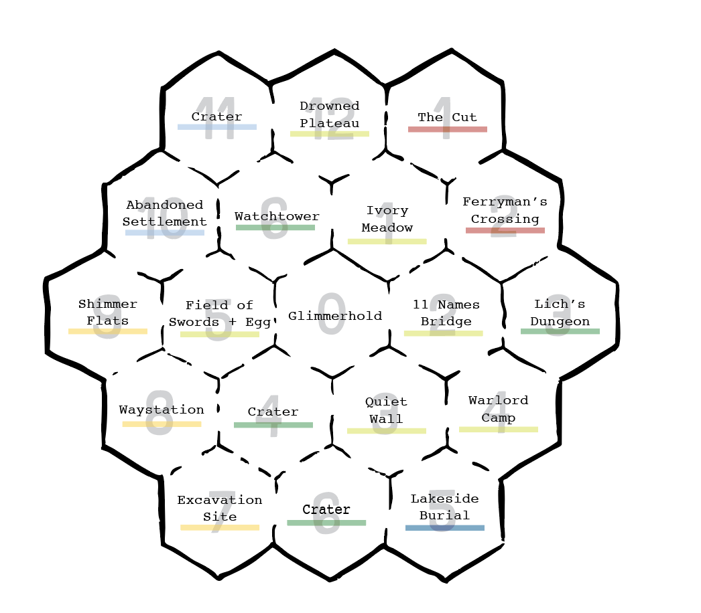
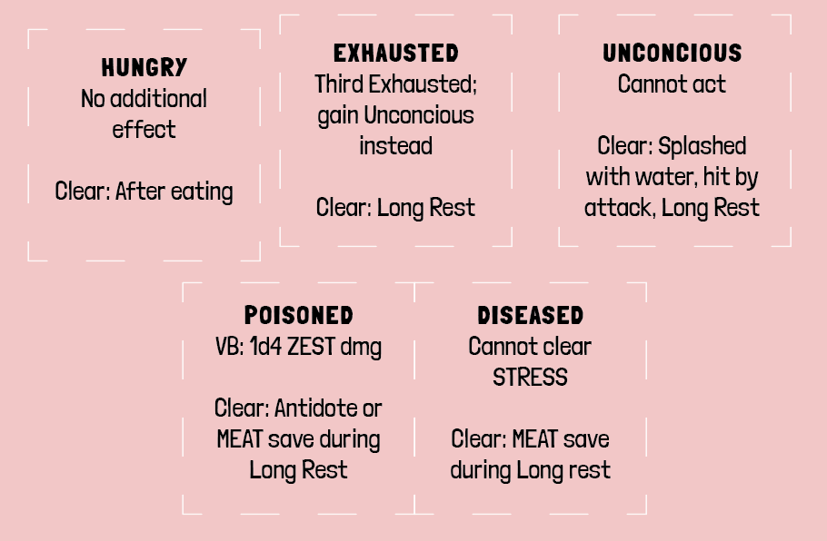
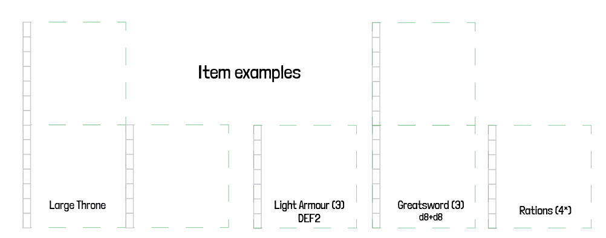

TOME 1: Standard Rules Document
v1.5 | new itch rules / overland itch
There is a version of this story in which the heroes win, the world impending doom is defeated and everyone goes home to a warm meal and a grateful city. This is not that version. This is the version about the little green folk who went into the dungeon after the heroes returned home and found the things they left behind.
The market bells clang twice before the Underhold properly wakes up. This is not laziness, this is intelligence. By the time the bells ring, the Watch has changed shifts, the early merchants have gone home disappointed and the streets above are full of people too tired to notice tiny shadows scurrying about.
The Rusty Fang fills up around bell three and a bit. Look, goblins don't use precise timekeeping. They use the smell of the street, the angle of light coming through the grates above and a collective agreement that close enough is good enough. A kobold in the corner is nursing a wounded leg and smoking a fat cigarette. Three trolls known as the Dalwick brothers, regulars at the Rusty Fang, are playing cards and probably cheating someone out of their coin. Somewhere behind the bar, Spit the goblin is wiping down a mug that has never, in living memory, been clean.
A folded note arrives by the hand of a nervous Lowfling who refuses to make eye contact. It has the Gobfather's seal, not his real seal of course, just one he uses when he wants to be believed without being implicated. There is a job. There's always a job. The party has until nightfall to be two streets north of the Merchant's Gate, at which point a locked door will be unlocked for exactly one minute.
They eat. They argue about who carries the rope. They fill up their packs. The city above does not know they exist, which is, to be quite honest, exactly how everyone prefers it.
They go up into the dark.
HOW THE SRD IS STRUCTURED
This file is the Rules Reference - everything a GM needs to run the game at the table.
World lore, NPC profiles, faction detail, and setting info live in the Campaign Document (separate file). Cross-references to it are marked (-> Campaign Doc).
Sections in this file:
- GM Quick Reference - the page you open mid-session
- Running the Game - GM guidance and world design
- Core Mechanics - stats, dice, stress, courage
- Character Creation - steps, backgrounds, advancement
- Combat - initiative, attacks, defence, vital blows
- Equipment - inventory, weapons, armour, scrolls
- Exploring Dungeons - the Itch, procedures, factions
- Travel & Downtime - travel, overland Itch, weather, jobs
GM QUICK REFERENCE
Everything you need mid-session, alongside the Session Tracking Sheet
The Itch
Dungeon Itch: Starts at 20, die starts at d6. Roll the Itch die each Turn the party acts or makes noise. Subtract the result.
| Threshold | What happens |
|---|---|
| Hits 3 | Foreshadow danger - something changes |
| Hits exactly 0 | Set to 3, foreshadow danger |
| Drops below 0 | Scratch triggers, reset to 20 |
| Quick Rest | Step die up (d6 > d8 > d10 > d12 > d20) |
Noise (explosion, dropped torch) = roll Itch die immediately, in addition to the Turn roll. Combat rounds do not advance the Itch.
Overland Itch: Same logic. Starts at 20, die starts at d6. Roll the Itch die at the start of each Watch after the party describes what they are doing. Subtract the result.
| Watch type | Itch rolls |
|---|---|
| Quiet | 3 rolls |
| Active (nav save, weather, minor incident) | 4 rolls |
| Loud (combat, visible fire, evidence left) | 5 rolls |
Step die UP: fight a wandering encounter, visible fire in a dangerous hex, evidence left behind, dungeon Scratch triggered then left. Step die DOWN: full Watch without incident, Long Rest in proper shelter, deliberate route change, cleaned evidence (WITS save), scouting Watch.
The die does not step down unless earned. Earning the step-down requires deliberate, careful travel.
The Scratch
Pick or write the dungeon's Scratch before each delve. When it triggers, the dungeon hits back.
| Type | What happens |
|---|---|
| Lockdown | Every unopened door bars shut |
| Reinforcements | d6 creatures enter from entrance and sweep inward (+2 if Hunting) |
| The Apex | Dungeon's most dangerous creature moves toward last noise. Does not stop. |
| Structural Failure | One random room collapses or floods. Contents gone. |
| Authority | Outside forces arrive at entrance and wait |
| Darkness | Every light source fails. No explanation. |
Triggering a Scratch also steps up the Overland Itch die once when the party leaves.
Overland Scratch (d6):
| d6 | Consequence |
|---|---|
| 1 | Caught Up. Something tracking them arrives. Roll Reaction. |
| 2 | Roadblock. Watched route - guards, patrol, toll. Go around (+1 Watch) or talk through. |
| 3 | Word Travels Fast. Next hex's factions start Suspicious. |
| 4 | Followed In. Next dungeon Itch starts at 15. |
| 5 | Ambush. Prepared encounter, chosen ground. First action Bolstered. |
| 6 | The Gobfather Hears. Drop one Standing step. |
Combat Sequence
- Initiative - Party has jump: go first. Uncertain: ZEST save. Surprised: enemies go first.
- Each round: 1 action + 1 move (~20ft). Items marked ~ are free actions.
- Attack: Roll weapon dice + any COURAGE dice (no Gob Die; no STRESS unless Hindered).
- Assign one die as Break and one as Damage. COURAGE dice can go to either.
- If Hindered: discard dice matching STRESS die (not crits).
- Break die must beat target DEF to land.
- Damage > Shield absorbs first (1 use per 1 damage); excess > STRESS.
- STRESS full > MEAT takes damage. 3+ MEAT from one hit > Vital Blow.
- MEAT hits 0 > death.
Critical hit: Break and Damage dice show the same value. Roll an extra Damage die; add to total. Gang up: Roll all attacks as one pool; assign one Break and one Damage from the whole pool. Morale Break: Monster takes 3+ MEAT from one hit > ZEST save or flees/surrenders. Indomitable auto-succeeds.
Vital Blow
Triggered when a creature takes 3+ MEAT from one attack.
MEAT save. Success: take it clean. Failure: roll d6 on Injury Table.
| d6 | Result |
|---|---|
| 1 | Permanent Injury (d4 below) |
| 2 | Unconscious |
| 3–6 | Flesh Wound (1 chronic MEAT damage) |
Permanent Injuries (d4):
| d4 | Injury | Slot |
|---|---|---|
| 1 | Decapitated hand / crushed arm | Hand |
| 2 | Broken jaw / gouged eye | Head |
| 3 | Broken back / internal injury | Body |
| 4 | Smashed knee / decapitated foot | Accessory |
Slot item dropped. Empty slot = nothing lost. Magic healing only.
Morale Break
When a monster takes 3 or more MEAT damage from an attack, it must make a ZEST save or flee/surrender. Enemies with Indomitable automatically succeed on this save.
Saves at a Glance
| Stat | Target |
|---|---|
| 1–5 | 6+ |
| 6–9 | 5+ |
| 10–12 | 4+ |
| 13–15 | 3+ |
| 16+ | 2+ |
Roll your dice pool. Gob Die or any COURAGE die meets/beats TN = success. A natural 6 always succeeds.
Conditions (Quick List)
| Condition | Effect | Clears |
|---|---|---|
| Disoriented | All rolls Hindered | Any rest |
| Frightened | ZEST save to attack | Succeed on ZEST save or rest |
| Chilled | d4 ZEST damage per turn (reduced by DEF) | Warmed by fire during rest |
| Slimed | Slot unusable | When cleaned |
| Burning | d6 MEAT at start of action | Doused or smothered |
| Bleed | 1 MEAT at start of action | Treated with bandages |
| Blind | WITS roll before sight-dependent action | Washed out |
| Immobilized | Cannot move | ZEST save as action |
| Charmed | Cannot attack charmer or spend COURAGE | MEAT reduced or ZEST save as action |
| Knocked | Prone; attacks against Bolstered | Standing up |
| Winded | MEAT target +1 | Long rest |
| Rattled | ZEST target +1 | Long rest |
| Concussed | WITS target +1 | Long rest |
| Poisoned | On Vital Blow: d4 ZEST damage (no stack) | Antidote or MEAT save during long rest |
| Diseased | Cannot clear STRESS | MEAT save during long rest |
| Fatigued | No effect | Quick rest |
| Hungry | Third application > Exhausted | After eating |
| Exhausted | Third application > Unconscious | Long rest |
| Unconscious | No actions | Splashed + ZEST save, damage, or long rest |
Conditions are [1]. Goblins have 2 Guts slots. Full > spills into pack slots. No space > drop item or take d12 chronic MEAT damage.
Rest & Recovery
| Rest | Time | Effect |
|---|---|---|
| Quick Rest | 1 Turn / part of Watch | Clear d4+1 STRESS (d6+1 if eating). Dungeon Itch steps up. |
| Long Rest | 1 Watch (~6 hrs) | Clear all STRESS. Restore d6+1 chronic damage from one stat. |
| Full Rest | 1 week in safety | Restore all stats and STRESS. Removes most long-term effects. |
Long Rest notes: Roll Itch die at start and end. Suspicious+ faction moves two spaces closer. Hunting faction arrives - no roll. Fire: Steps up both Itch dice; all hiding Hindered.
Time
| Unit | Length | Used For |
|---|---|---|
| Round | Seconds | Combat, pack retrieval |
| Turn | ~10 min | Exploration, Itch |
| Watch | ~6 hours | Long rest, travel |
6 Turns = 1 hour | 4 Watches = 1 day
Faction Alert States
Unaware > Suspicious > Hostile > Hunting
| State | Notes |
|---|---|
| Unaware | Standard Reaction roll on contact |
| Suspicious | Reaction −2. Scouts move toward most recent noise each Turn. |
| Hostile | Attacks on sight. Escapee escalates to Hunting. |
| Hunting | Each Turn in dungeon step the Itch die up. Next Scratch hunting group arrives at party's location. |
Escalation: Fighting members > Suspicious. Kill without survivors > stays Suspicious. Significant noise > +1. Kill leader > straight to Hunting.
De-escalation: Leave dungeon (Unaware over d4 sessions). Successful bribe/negotiation (−1). Break faction entirely (Unaware, downstream consequences).
Reaction Rolls (2d6)
| Roll | Reaction |
|---|---|
| 2 | Hostile |
| 3–5 | Wary |
| 6–8 | Curious |
| 9–11 | Friendly |
| 12 | Helpful |
RUNNING THE GAME
Everything you need before and after a session, alongside the Campaign Tracking Sheet
GM Principles
Fail forwards. On a failure, something still happens, just worse. "Yes, but" and "no, and." Never stop players dead in their tracks.
Foreshadow before punishing. Itch hits 3 = something changes - sounds, a patrol turns, a torch dies. The dungeon waking up is a gift to tension, not a punishment.
Encounters aren't always combat. A patrol that walks past hiding goblins is more tense than one that charges.
Noise has consequences. A bomb should wake the floor. Track it. Use it.
Reaction roll = opening position, not outcome. Player behaviour shifts results. A good argument + plausible offer = no roll needed. Failed rolls = complications, not dead ends.
COURAGE rewards cleverness. Award it for social victories that feel earned, for stupid-brave risks the whole table laughs at, and for genuine confidence under pressure.
Session Zero Checklist
- How lethal do you want it?
- How much City vs dungeon?
- What is the Gobfather like at your table?
- Do they start with a safe house or earn one?
- Don't introduce the Gobfather in person; let him be a presence.
Starting the First Session
Start in motion. The party is already somewhere; in the safe house, at a job board, on their way to the dungeon. Give them something to react to immediately.
Don't worry about backstories. Backstory comes out in play, through quirks and names and the things goblins say when they think nobody important is listening. Character creation is fast to get the players playing and to let the goblins create themselves.
The first session should end with the party having done one thing they are proud of and one thing they're unsure whether they should have done. Either way if everyone is having fun you're doing it right. Including you, the GM is there to have fun too.
Dungeon Design
Three questions before drawing a single room:
- What was this place?
- Who is here now?
- What is worth taking?
Every room in three lines:
- Immediate impression.
- What is here.
- What is not obvious.
Room Contents
When stocking a room, roll d6 to determine what it contains. Apply this to every room that does not already have a clear purpose.
| d6 | Contents |
|---|---|
| 1 | Empty. Something was here. Evidence of what, GM decides. |
| 2 | Hazard. Trap, unstable floor, bad air, rising water. |
| 3 | Creature - hostile. Roll on the dungeon's encounter table. |
| 4 | Creature - neutral or unaware. Roll Reaction. |
| 5 | Treasure. Roll on a relevant Loot table. |
| 6 | Creature and treasure. Roll both. The creature is either guarding it or has no idea it is there. |
Empty rooms are not wasted rooms. They build tension, provide breathing space and make the rooms with something in them feel earned.
Placing treasure: One significant piece per dungeon. Scatter valuables throughout. Best loot in most dangerous locations. Magic items rare.
Door Types (d6):
| d6 | Door |
|---|---|
| 1 | Open. Recently used. |
| 2 | Closed, unlocked. |
| 3 | Closed, stuck. MEAT save to force. |
| 4 | Locked. MEAT save to pick; TN+2 without lockpicks. |
| 5 | Barred from other side. Force or circumvent. |
| 6 | Secret. WITS save or specific interaction to find. |
Traps: Always have a tell. Use conditions where possible. Noise = tick the Itch.
Factions in a dungeon should all have: who they are and roughly how many / what area they hold / reaction to intruders / goals, resources, fears.
Clever goblins should be able to play factions against each other. Design for that possibility.
SAMPLE DUNGEON: THE BLEACHED CELLAR
The Bleached Cellar
A small dungeon suitable for a first session or a quick job. The Gobfather has heard there is a > magical idol in the cellar of an abandoned tannery outside The City. He wants it retrieved.
What was this place? A tannery and the cellar beneath it, used briefly as a meeting point by a > small cult before they were broken up by the Watch. The cult left in a hurry.
Encounter Table (d6)
Roll Encounter 1 d4 Giant Rats emerge from a crumbling wall, agitated and hungry. 2 One of the cult members is moving between rooms. They haven't noticed the party. 3 A distant scraping sound from below. 4 The idol in room 5 hums. Every rat in the dungeon goes still for one turn. 5 A Watch patrol passes by the tannery. Decrease the Itch by 5. 6 Two cult members emerge from room 5 together, moving quickly. They have the idol and they're > leaving.
Who is here now?
The Rats - a large nest of 2d10 Giant Rats has moved into the upper cellar. They're not > aggressive unless cornered or unless the party disturbs the nest in room 2. They're aware of the > cult members below and avoid the lower level entirely.
The Cultists - two surviving cult members have returned to retrieve their ritual materials. They > don't want a fight. They do want what is in room 5. They'll negotiate, lie, or run.
What is worth taking? The cult's lockbox in room 5, a piece of loot on a body in room 3 and the > idol in room 5.
The idol is a [11] piece of treasure that charms all Rats in the area when activated.
Room 1 - The Cellar Entrance
Stone steps descend into a low-ceilinged room that smells of old hide and mildew. Barrels line the > walls, most split open. Scratching sounds come from deeper in.
- 1d4 Giant Rats, unaware of the party. Reaction roll if the party enters without stealth.
- A broken barrel near the east wall contains 12 gold, hidden under rotting leather scraps. WITS > save to notice.
- The scratching comes from room 2. It's louder than three rats should make.
- Not obvious: a message scratched into the wall near the stairs - a cult symbol and an arrow > pointing down.
Room 2 - The Nest
A wider chamber, the floor covered in shredded leather and bones. The smell is awful and you can > hear movement everywhere.
- The rat nest. 3d6 Giant Rats, aware and agitated.
- Disturbing the nest triggers immediate hostility from all rats in the dungeon including those in > room 1.
- Not obvious: buried in the nest, an armour treasure (roll on a loot table). The rats have > been sleeping on it.
Room 3 - The Collapsed Corridor
A section of ceiling has come down, narrowing the passage to a crawl. On the far side, a body in > cult robes, weeks dead.
- Crawling through is a ZEST save - failure means stuck for one Round and gaining the Disoriented > condition.
- The body has a Light weapon and d6x10 gold.
- Not obvious: the body has a key around its neck - opens the lockbox in room 5. Taking the key > without looking at the body's hands means missing that two fingers have been cleanly removed.
Room 4 - The Antechamber
A low room with a ritual circle chalked on the floor, candles at each point, recently lit. Two > bedrolls against the wall. Someone is staying here.
- Empty when the party arrives. The cultists are in room 5.
- The ritual circle is incomplete - one section is smudged. WITS save to notice it was done on > purpose.
- Not obvious: a crawl space behind a loose stone in the north wall. Inside, 1 treasure and a > folded note. The note is in a cipher the party cannot read without help.
Room 5 - The Ritual Chamber
A vaulted room, larger than expected. An altar of stone at the far end. On it, a black iron idol > the size of a fist and a battered lockbox. Two figures in patched cult robes turn as you enter.
- The two cult remnants. Reaction roll - they are frightened but determined. They want the idol and > claim the lockbox is theirs too. It's not.
- The lockbox requires the key from room 3. Inside: d6x50 gold and a roll on the Loot table (41-70 > range).
- The idol is what the Gobfather wants. It is worth 200 gold to him specifically and significantly > less to anyone else. Carrying it causes uneasy dreams - whoever is carrying it rolls a ZEST save > when resting. On a fail they do not benefit from the rest.
- Not obvious: a sealed door behind the altar - a tunnel that leads down into the dungeon of > the Screaming Lich. The cult remnants know about it but will die before giving up infomation.
Building a Hexmap
The world is a 5×5 hex flower. Glimmerhold sits at the centre. The inner ring of 6 hexes is familiar territory; the party will cross these often. The outer ring of 12 hexes is expedition country; further, stranger, more dangerous.
Build the geography of the map first. You don't need to fill the whole map contents before play, you can build the inner ring at campaign start and fill the outer ring as the party pushes into it.
Filling the Geography
To map the geography of your hexmap, you'll roll a d6 then consult the table.
- Reference the hex in a direction from the hex we're filling, if that hex is filled we copy it's geography.
- If it's empty we reference the table again to assign geography.
- If you are assigning a 6 for Geography, use Tundra for hexes above the centre of the map, Desert for all others.
Start at the outer north centre hex, then move clockwise around. After do the inner ring in the same method. Glimmerhold counts as empty.
| d6 | Direction | Geography |
|---|---|---|
| 1 | North | Mountain |
| 2 | Northwest | Forest |
| 3 | Northeast | Swamp |
| 4 | Southwest | Grassland |
| 5 | Southeast | Aquatic |
| 6 | South | Desert if South, Tundra if North |
The Regional Tables
Each biome has its own d10 Dungeon table, d8 Landmark table, d8 Rumour table, and d8 Wandering Faction table. (Full tables in the Bestiary & Tables Document.)
When stocking a hex, roll all four at once. A hex takes about two minutes to generate.
Biomes at a glance:
| Biome | Travel cost | Tone |
|---|---|---|
| Grassland | 1 Watch | Open, exposed, deceptively dangerous |
| Forest | 2 Watches | Concealed, territorial, layered vertically |
| Hills | 2 Watches | Windswept, surveilled, ancient |
| Desert | 2 Watches | Hostile environment, ancient ruins, scarce water |
| Swamp | 3 Watches | Slow going, fetid, nothing is what it seems |
| Mountain | 3 Watches | Brutal terrain, vertical dungeons, altitude effects |
| Tundra | 3 Watches | Northern War remnants, cold as a condition, brutal |
Step 1: Place the Inner Ring (6 Hexes)
Each inner hex needs four things:
- Biome; Forest, Desert, Mountain, Grassland, Swamp, or Tundra. Pick or roll; each hex is one biome.
- Dungeon; Roll d10 on the relevant Regional Hex Table. A result of 10 means the dungeon is hidden; roll again for what it is.
- Landmark; Roll d8 on the regional table. This is what the party sees and can navigate by.
- Rumour; Roll d8 on the regional table. This is what someone in Glimmerhold knows about this hex. Not all rumours are true.
Give each hex a Wandering Faction from the regional table. This is who the party might bump into between dungeons, not inside them.
Inner ring is known territory. The party can get Rumours about inner hexes through Contacts or a Carouse without scouting. Outer ring hexes require a scouting Watch or someone who's actually been there.
Step 2: Stock the Outer Ring (12 Hexes)
Fill these as the party approaches them. When they scout an adjacent outer hex, generate it then. When they enter one blind, generate it on arrival; roll in front of them and let the world surprise everyone.
You can mix biomes within the outer ring freely. A mountain hex bordering a swamp hex is interesting geography.
Step 3: Set Starting Hex Tracks
Any hex with an active situation; a dungeon with occupants, a faction with a goal; gets a Hex Track starting at 0. Note it on your map. Each session that passes without the party visiting, step it up. At 4, roll the Resolution table. The world moves whether the party acts or not.
Don't set tracks on empty hexes. A dungeon that's just a ruin with loot and no active factions doesn't need a track; nothing is pushing it toward resolution.
Step 4: Connect It to the Gobfather
Before the first session, pick one inner hex dungeon the Gobfather has a current interest in. This is the hook that gets the party moving. The second inner hex dungeon is what they find when they go looking for work on their own. Everything else is discovered through play.
Keeping the Map Alive
A hexmap isn't a backdrop. It's a pressure system. These habits keep it active:
Factions move: Wandering factions have goals. If the party avoids a hex for two sessions, decide where that faction went and what they did when they got there.
Tracks resolve: When a track hits 4, roll and commit to the result. A dungeon that resolves without the party is information; rumours change, contacts update their intel, the Gobfather adjusts his interest.
Dungeons change: A dungeon the party cleared partially is not the same dungeon next session. Something moved in. Someone looted what they left. The Scratch they triggered last time left evidence.
The outer ring is rumour until visited: Never confirm outer hex details until the party is there or has actively scouted. Let the inner ring feel known and the outer ring feel genuinely unknown.
In practice: build the inner ring before session one, fill outer hexes on demand, and let Hex Tracks do the work of making the world feel like it breathes.
The Gobfather's Master Plan
The Gobfather only works if the party is never entirely sure what he knows or what he wants. Keep him off screen. Use intermediaries, sealed notes, and rumours. The moment he sits down with the party directly, he loses a lot of his power.
Session Start: Is he making a move?
Roll d6 before each session. On a 5 or 6, something he's doing intersects with this session. A contact acting strangely, a hex suddenly off limits, a rumour that lands oddly. Not a job offer, evidence that he has an agenda that predates the party.
d8 — The Move:
| d8 | Move |
|---|---|
| 1 | A contact becomes unavailable. No explanation. |
| 2 | A job arrives with specific instructions about what not to bring back. |
| 3 | A rumour puts the Gobfather in a good light. Someone is managing his reputation. |
| 4 | A dungeon hex the party visits is being watched. Not by the Watch. |
| 5 | An intermediary delivers a small gift. No note. |
| 6 | Another crew got the job the party was about to be offered. |
| 7 | An intermediary asks one specific question about the party's last job. |
| 8 | A contact mentions the Gobfather was asking about the party. |
The Agenda Track
Before the campaign begins, pick one long-term goal for the Gobfather. It should be large enough to take most of a campaign and specific enough that the party can eventually see its shape.
Create a 5 step track for this goal.
Track: [ 0 ] — [ 1 ] — [ 2 ] — [ 3 ] — [ 4 ] — [ 5 ]
Example agendas:
xxx
| Direction | When |
|---|---|
| Step UP | Party completes a job serving his goal (knowingly or not), a rival loses ground, an obstacle is removed |
| Step DOWN | Party embarrasses the operation, a rival gains ground, party burns a contact he relied on, party refuses a critical job |
Track hits 5: He achieves his goal, the world visibly changes. A faction shifts, a route opens, a name disappears. He doesn't celebrate, there's already a new agenda.
Track hits 0: The operation is in trouble. Jobs dry up or become desperate. An intermediary lets something slip. He may ask for something he'd never normally ask.
Gobfather Opinions
The Gobfather notices how the party works, not just whether they succeed. Opinions arrive through intermediaries, notes, changes in how contacts treat the party, or a rumour from somewhere specific. He doesn't praise often. When he does, it lands.
Trigger an opinion when the party does something he'd have a view on.
| His Read | What Happened |
|---|---|
| Quietly pleased | Clean job, no witnesses, no trail, handled a complication without involving the operation, left behind what he said to leave |
| Quietly displeased | Job worked but it was loud, contact burned unnecessarily, left a witness, kept something they shouldn't have |
| Visibly displeased | Operation implicated publicly, job failed through avoidable carelessness, went into debt without asking |
| Interested | Got a result he didn't expect; not angry, just watching. Its own kind of pressure. |
Delivery options, never direct:
- A short note via intermediary: "He says: cleaner next time."
- A contact who mentions, unprompted, that he was asking questions
- A job clearly designed to fix the specific thing they did wrong
- One session of silence, no jobs, no contact, no acknowledgement. Never explained.
CORE MECHANICS
Stats
Every goblin has three stats.
| Stat | Covers | At Zero |
|---|---|---|
| MEAT | Physical, strength, dexterity | Death |
| ZEST | Willpower, endurance, spirit | Cannot gain or spend COURAGE |
| WITS | Cunning, perception, trickery | Feral: attacks nearest creature until restrained |
Stat damage lowers effective value and save target. Max stat value never changes.
The Gob Die
A single d6 - your goblin's core instinct. Should be visually distinct from other d6.
- Success on the Gob Die: gain 1 COURAGE
- 6 on the Gob Die: clear 1 STRESS
Building Your Pool
| Die | Source |
|---|---|
| 1d6 | Gob Die (always) |
| +1d6 per COURAGE spent | Courage dice |
| +1d6 per marked STRESS | Stress dice (max = current level; discard matching COURAGE dice) |
Making a save:
- Discard any COURAGE dice that match a STRESS die (ignoring 6s).
- If any remaining COURAGE die or Gob Die meets/beats the TN: success.
Desperation reroll: At 0 COURAGE, gain 1 STRESS to reroll the Gob Die. Take the new result. A die may never be rerolled more than once.
STRESS & COURAGE
STRESS is strain. It soaks damage before stats take the hit.
- Mark 1 STRESS per 1 incoming damage (before MEAT).
- No STRESS available > damage goes into MEAT (direct stat damage is called chronic damage and bypasses STRESS).
- Max STRESS dice in pool = current level. Hindered can exceed this cap.
COURAGE is boldness. Max = ZEST stat. Each point = one d6.
Gain COURAGE when:
- You succeed on the Gob Die
- Critical hit
- You succeed attempting something the whole table agrees is stupid
- GM awards it for clever play, social victories, or genuine confidence
Spend COURAGE by adding d6s to your pool. Max added per roll = ZEST stat.
Hindered & Bolstered
- Hindered - add 1 STRESS die to pool. Can exceed level cap. Only way to add STRESS dice to attack rolls.
- Bolstered - add 1 free COURAGE die to pool.
These apply to saves and attacks. See Combat for specific attack interactions.
Group Saves
All participating players roll. Equal or more successes than failures = everyone succeeds. COURAGE gain comes from individual results only.
CHARACTER CREATION
Gobfather's Hoard (Campaign Start)
- (Players) × 2 rolls on Hoard Weapons table
- (Players) + 2 rolls on Hoard Armour table
- (Players) × 2 rolls on Hoard Odds & Ends
- (Players) × 2 rolls on generic Loot table
- 3d10 × 1000 for Gobfather's gold stores
Creation Steps
- Roll stats: 3d6, discard lowest, down the line: MEAT > ZEST > WITS. Outline max circles in pen.
- Roll STRESS Threshold: 1d6. If ZEST 9+, roll 2d6 discard lowest. Outline max stress in pen.
- Roll starting COURAGE: 1d4. Place that many d6 on COURAGE slot.
- Determine Background: Cross-reference highest stat with starting COURAGE. Ties = player chooses.
- Take Background items: Two class-based items.
- Take starting gear: Rations, torch, rope, 1 weapon and 1 Hoard item. Pack size by background.
- Roll Name: d66 twice, combine.
- Roll Physical Trait: d66 once.
- Roll Quirk: d66 once.
Backgrounds
| COURAGE 1 | COURAGE 2 | COURAGE 3 | COURAGE 4 | |
|---|---|---|---|---|
| MEAT | Junkmonger | Sliprat | Pugpug | Zerkling |
| ZEST | Grumbler | Watchdog | Grubseer | Dingdong |
| WITS | Lurkfish | Filchweasel | Snitch | Boombro |
MEAT Backgrounds
Junkmonger - Pack 3×4. Chain and pulley (hauling Bolstered; move impossible objects). Pocket scales.
Sliprat - Pack 3×2. Kickback Boots (dodge + take no damage > deal 1 to attacker). Smoke pellets (3*).
Pugpug - Pack 2×4. Takes additional item instead of weapon. Dustknuckles d4+d6 [1]; Combo: d4 breaks > add 1d4 to damage. Lucky foot necklace.
Zerkling - Pack 3×1. May choose 2 weapons if both light/medium. Blood amulet (no armour = DEF4). Vial of rage-mushroom paste (3*).
ZEST Backgrounds
Grumbler - Pack 3×3. Battered belt organizer (retrieve [1] items without reorganizing). Flask of strong stuff (3*).
Watchdog - Pack 3×2. Worgling Whistle (see Worgling rules). Smelly meat (4*).
Grubseer - Pack 2×4. Sacred beetle idol (STRESS dice become d8s while carried). Dung ball (4*).
Dingdong - Pack 1×4. Soul in a jar (when you'd gain Frightened, gain 1 COURAGE instead). Broken hero's blade.
WITS Backgrounds
Lurkfish - Pack 3×2. Ear trumpet (press to surface: hear through it, detect creature count + intent). Rumour ledger.
Filchweasel - Pack 3×3. Sticky finger-wraps (steal [1] item without notice on MEAT roll). Lockpick set (4*).
Snitch - Pack 3×2. Forged documents (2*), "I know a guy." Collapsible disguise kit.
Boombro - Pack 2×3. Volatile bombs (6*): d6+d0; 3 modes: Smoke (Blinds area for a Turn), Shrapnel (1 dmg to area on Break), Concussive (area Knocked). Roll of 1 = blows up in hand. Mysterious vial labeled "DO NOT" (1*).
Worglings (Watchdog companion)
Roll 1d6 for each of MEAT / ZEST / WITS / STRESS separately.
WORGLING - Scum
- MEAT 1d6 / ZEST 1d6 / WITS 1d6 / STRESS 1d6 / DEF1
- Bite: d4+d4
- Vital Blow: Standard
- Special: At 0 MEAT - Unconscious. Recovers with rest. Takes [22] in pack.
- Inventory: [1] Body slot + [1] Mouth slot.
- Danger: Rolls WITS. Failure = ignores commands until safe.
The Watchdog can command a Worgling to move and take an action on their turn.
Advancement
The core loop: venture out, delve a dungeon, return with loot, deposit to the Hoard.
Tally total loot value and divide by player count for XP. Items kept personally or sold for gold don't contribute. Donated gold = 1 XP per 1 gold.
| Level | XP Required |
|---|---|
| 2 | 800 |
| 3 | 2,000 |
| 4 | 3,600 |
| 5+ | +5,000 per level |
On each level up:
- Roll (level)d6 for new STRESS Threshold. If highest die beats current max, take it; otherwise +1.
- Roll 1d6 for each stat. Highest increases by 1. Tie = player chooses.
- At level 5+: stats that roll a 1 decrease by 1 instead.
- Roll d6. On 1–2, roll one new physical trait and one new quirk.
Stat cap: 15.
At level 5+ age takes its toll. If stat drops to 0: MEAT = death; ZEST = retires; WITS = deteriorates.
COMBAT
Initiative
- Party has the jump > party goes first.
- Uncertain > ZEST save: success = act before enemies, failure = act after.
- Enemies surprise party > enemies go first.
Round Structure
Each character: 1 action + 1 move per round. Move: 20ft. Standing up costs 10ft. Items marked ~ are Quick Use (free action).
Attack Sequence
- Declare target.
- Target chooses defensive option (if available).
- Roll attack pool: weapon dice + COURAGE dice (no Gob Die; no STRESS unless Hindered).
- Assign one die from pool as Break die and one as Damage die.
- If Hindered: discard dice matching STRESS die (except crits).
- Break die must beat target DEF to hit.
- Damage > Shield absorbs first (1 use per 1 damage); excess > STRESS.
- STRESS full > MEAT takes damage. 3+ MEAT from one hit > Vital Blow.
- MEAT hits 0 > death.
Hindered in combat: Add 1 STRESS die to attack pool. Multiple hinders do not stack. Affects entire pool in Gang Up. Bolstered in combat: Add 1 free COURAGE die to attack pool.
Gang Up
Multiple attackers vs same target: roll all attacks as one pool, assign one Break die and one Damage die from the whole pool. COURAGE added per attacker normally. Each Hindered STRESS die affects entire pool.
Dual Wielding
Choose one weapon to attack with per attack. Exception: d4 dice may always be included in every attack pool. Still assign only one Break and one Damage die as usual.
Critical Hits
After assigning dice, if Break die and Damage die show the same value: critical hit. Roll an additional Damage die of the same type and add to total. Additional die can also crit if it matches. Critical hits cannot be discarded by STRESS dice.
Defence
Dodge: Gain 1 STRESS or discard 1 COURAGE. Incoming attack is Hindered. Cannot dodge in heavy/full armour or with a shield. d4 dice cannot be dodged (discared by STRESS).
Block: Shields absorb 1 damage per use marked. d10 Damage dice cannot be blocked. Shield fully marked = broken. Excess damage carries over normally. Requires MEAT 7+.
Parry: Choose one weapon; d4 dice are excluded.
- Attacker declares attack. Defender declares parry.
- Both roll attack dice and assign Break + Damage dice.
- Higher Break die wins; winner deals chronic MEAT damage.
- Tie = weapons clang, both gain 1 COURAGE, no damage.
- COURAGE cannot be added to parry rolls outside Bolstered.
EQUIPMENT
Inventory Layout
[pack][head][MH ]
[ ][body][OH ]
[ ][acc ][acc]
[ ][guts][guts]
| Slot | Holds |
|---|---|
| Main Hand (MH) | One-handed weapon, [1] items |
| Off Hand (OH) | Weapon, shield, [1] items |
| Head | Helmet, hat, necklaces |
| Body | Armour, cloak, robes |
| Accessory | Quiver, boots, tools, consumables |
| Pack | Grid storage |
| Guts | Conditions only |
Item Sizes
Notation: [XYZ], each digit is a column, each value is rows in that column.
[1]- small/light items, quick weapons, accessories[11]- heavy weapons, heavy ranged, full armour[22]- huge items, bundled gear[123]- awkward/large loot
Pack Rules
- Items must rest against the bottom or another item below (no floating).
- Retrieve: 1 Round. Nothing can be above the item being retrieved.
- Reorganize: 1 Round. Conditions cannot be moved.
Item Usage
All items have (n) uses. After combat: roll d6 for each weapon/armour used. On 1–2, mark one use. All uses marked = unusable until repaired or restocked.
Consumables are (n*) and are destroyed when last use is marked. A consumable marked with ~ can be used without taking up your action.
Repair/Restock: 10% of item's gold value (rounded up) at a relevant merchant. Consumables cannot be repaired.
Weapons
All weapons have (3) unless noted.
| Class | Dice | Size | Notes |
|---|---|---|---|
| Improvised/Barehand | d2+d2 | [1] | Improvised = (2*) |
| Quick | d4+d4 | [1] | d4 cannot be dodged |
| Light | d6+d6 | [1] | - |
| Medium | d6+d8 | [1] | Main hand only |
| Heavy | d8+d8 | [2] | Two-handed |
| Reach | d4+d10 | [2] | Two-handed; d4 cannot be dodged |
| Ranged Light | rd4+rd6 | [1] | Own ammo (5); d4 cannot be dodged |
| Ranged Heavy | rd6+rd8 | [2] | Requires equipped ammo (e.g. quiver) |
Two-handed weapons occupy both Hand slots. d2 = roll d6; odd = 1, even = 2.
Armour
All armour has (3) unless noted. Unarmoured = DEF1.
| Armour | DEF | Size | Requirement | Notes |
|---|---|---|---|---|
| Light | 2 | [1] | None | - |
| Medium | 3 | [1] | None | - |
| Heavy | 4 | [1] | MEAT 7+ | Cannot dodge |
| Full | 5 | [11] | MEAT 10+ | Cannot dodge |
Shields
Require MEAT 7+. Break when all uses marked. Excess damage carries over to bearer.
| Shield | Uses | Size | Notes |
|---|---|---|---|
| Buckler | (2) | [1] | d4+d4 attack dice |
| Wooden | (3) | [1] | Standard |
| Steel | (5) | [1] | Standard |
| Tower | (7) | [2] | Uses both hands |
Magic Scrolls
Scrolls are [1] with 3 uses. All uses marked = scroll turns to ash.
Casting a scroll:
- WITS save. Fail = cannot read; swap steps 2 and 3.
- Roll 1d12 Flow, 1d12 Form, 1d12 Facet. Describe spell.
- Declare power: 1d6, 2d6, or 3d6.
- Roll all power dice simultaneously.
- Two matching dice = Minor Mishap. Three matching = Major Mishap.
- Spell casts at declared tier.
Power Tiers:
| Dice | Scale | Mishap chance |
|---|---|---|
| 1d6 | One target, minor effect, one round | None |
| 2d6 | Small area or lasting effect, d6 rounds | 17% |
| 3d6 | Large area, severe, lasts entire turn | 44% |
Save types: MEAT = physical/force. ZEST = fear/compulsion. WITS = illusions/mental.
Identifying magic items: WITS save. Fail = item activates.
Spell Creation (3d12)
| d12 | Flow | Form | Facet |
|---|---|---|---|
| 1 | Blast | Rapid | Flesh |
| 2 | Twist | Slow | Light |
| 3 | Shrink | Wide | Mind |
| 4 | Summon | Deep | Luck |
| 5 | Decay | Sharp | Sound |
| 6 | Swap | Blunt | Object |
| 7 | Grow | Heavy | Blood |
| 8 | Steal | Hollow | Beast |
| 9 | Reveal | Bright | Element |
| 10 | Cloak | Tangled | Door |
| 11 | Shatter | Fractured | Name |
| 12 | Speak | Distant | Hunger |
Minor Mishap (d6)
| d6 | Effect |
|---|---|
| 1 | Backfire: Caster takes weakest effect. ZEST save to halve. |
| 2 | Misfire: Hits nearest ally instead. |
| 3 | Blowback: Gain Winded + Concussed. |
| 4 | Loud: d4 chronic WITS damage. |
| 5 | Unstable Arcana: Scroll loses extra charge. |
| 6 | Reversed: Spell inverts from what was described. |
Major Mishap (d6)
| d6 | Effect |
|---|---|
| 1 | Possession: WITS > 0 until Long Rest. |
| 2 | Destroyed: Spell fails, scroll destroyed. |
| 3 | Wild Surge: Roll both mishap tables simultaneously. |
| 4 | Tear: Rift to another hex opens. Nearby creatures pulled through on failed MEAT save. |
| 5 | Swap: Caster and target swap position + STRESS. WITS save to resist. |
| 6 | Amplified: Spell casts and regains all uses. |
EXPLORING DUNGEONS
The Itch
(Quick reference at the top of this document. Details below.)
Count starts at 20, die starts at d6. Represents the dungeon waking up to the party's presence.
Each Turn the party acts or when they make commotion: roll the Itch die and subtract from the total.
- Hits 3: foreshadow danger.
- Hits exactly 0: set to 3, foreshadow danger.
- Drops below 0: trigger the Scratch, reset to 20.
- Quick Rest: step the Itch die up (d6 > d8 > d10 > d12 > d20).
Combat Rounds do not advance the Itch. Cannot step above d20. Always starts at d6, a fresh dungeon is already alert.
The Scratch: Before each delve the GM picks or writes the dungeon's complication: what happens if the party stays too long. A dungeon should breathe, it should feel alive. Instead of random encounters, there should be narrative consequences specific to that dungeon and its current fiction that move and evolve with the players and world. Here are six types of complications:
| Scratch Type | What happens |
|---|---|
| Lockdown | Every unopened door bars shut. Leave through the entrance or find another way out. |
| Reinforcements | The controlling faction calls for help. d6 creatures enter from the entrance and sweep inward. If the faction is already Hunting, add +2 to the roll. |
| The Apex | The dungeon's most dangerous creature activates and moves toward the most recent noise. It does not stop. |
| Structural Failure | One random room collapses or floods. The party hears it. That room's contents are gone. |
| Authority | Outside forces arrive at the entrance and wait. They will be there when the party tries to leave. |
| Darkness | Every light source fails simultaneously. No explanation. |
The type is a framework and you can create your own Scratch, also write the specific version in the dungeon's notes before play. Not "Reinforcements" but "d4 bandits enter from the street door and sweep each room."
Triggering a Scratch also steps up the Overland Itch die once when the party leaves. The dungeon being loud has consequences outside as well.
Dungeon Procedures
Turns: Mark a Turn for any action taking meaningful time (searching, lock-picking, treating wounds, arguing). Roll Itch die.
Commotion: Significant noise, a small scuffle, etc = roll Itch die immediately, in addition to any Turn.
Light: Torches generally have (4*). Mark a use every 3 Turns. In darkness: all saves Hindered + gain Rattled on failed save. Lanterns provide steady light but need oil to restock.
Locks: MEAT save. Without appropriate tools: TN +2.
Traps: A trap found and not disarmed is an alarm for both sides. Avoided or rearmed = usable deliberately. A trap reset after the party passes is a rear guard. A fresh trap that wasn't there last time means someone returned.
Reaction Rolls (2d6)
Use Reaction rolls when you're unsure how something feels towards the party. Results should shift based on the party's behavior.
| Roll | Reaction |
|---|---|
| 2 | Hostile |
| 3–5 | Wary |
| 6–8 | Curious |
| 9–11 | Friendly |
| 12 | Helpful |
Dungeon Factions
A dungeon should have at least two factions: groups with goals, fears, and a threshold for violence. A nest of giant rats is a faction, a group of treasure hunters is a faction.
Record faction Alert State on the GM's faction card and update during play. Generally a faction will begin at Unaware or Suspicious unless the party has done something to alert them of their coming.
Faction Alert States
Unaware > Suspicious > Hostile > Hunting
| State | Notes |
|---|---|
| Unaware | Standard Reaction roll on contact |
| Suspicious | Reaction −2. Scouts move toward most recent noise each Turn. |
| Hostile | Attacks on sight. Escapee escalates to Hunting. |
| Hunting | Each Turn in dungeon: roll Itch die. On 1 or 2, hunting group arrives at party's location. |
Escalation: Fighting members > Suspicious. Kill without survivors > stays Suspicious. Significant noise > +1. Kill leader > straight to Hunting.
De-escalation: Leave dungeon (Unaware over d4 sessions). Successful bribe/negotiation (−1). Break faction entirely (Unaware, downstream consequences).
TRAVEL & DOWNTIME
Overland Travel
5×5 hex flower. City at centre. Inner ring = 6 hexes. Outer ring = 12 hexes (expedition territory).
A Watch is 6 hours: Morning, Afternoon, Evening, Night. Typical travel: Morning and Afternoon. Camp: Evening. Rest: Night. Pushing further always has a cost.
Travel Sequence (each Watch):
- Pick direction.
- Roll weather.
- WITS save to navigate. Fail: drift into adjacent hex. Roll Drift die for that hex before encounter die.
- Roll the Overland Itch.
Movement:
| Biome | Travel cost | Tone |
|---|---|---|
| Grassland | 1 Watch | Open, exposed, deceptively dangerous |
| Forest | 2 Watches | Concealed, territorial, layered vertically |
| Hills | 2 Watches | Windswept, surveilled, ancient |
| Desert | 2 Watches | Hostile environment, ancient ruins, scarce water |
| Swamp | 3 Watches | Slow going, fetid, nothing is what it seems |
| Mountain | 3 Watches | Brutal terrain, vertical dungeons, altitude effects |
| Tundra | 3 Watches | Northern War remnants, cold as a condition, brutal |
The Overland Itch
Starts at 20. Die starts at d6. Roll at the beginning of the Watch after the party describes what they are going to do. Number of rolls depends on how loud their plan is.
How many rolls is always obvious from what happened; no tracking needed. When players describe how they travel, decide how loud they're being.
| Watch type | Itch rolls |
|---|---|
| Quiet | 3 rolls |
| Active (nav save, weather, minor incident) | 4 rolls |
| Loud (combat, visible fire, evidence left) | 5 rolls |
Step die UP: fight a wandering encounter, visible fire in a dangerous hex, evidence left behind, dungeon Scratch triggered then left. Step die DOWN: full Watch without incident, Long Rest in proper shelter, deliberate route change, cleaned evidence (WITS save), scouting Watch.
The die does not step down unless earned. Earning the step-down requires deliberate, careful travel.
Overland Scratch (d6):
| d6 | Consequence |
|---|---|
| 1 | Caught Up. Something tracking them arrives. Roll Reaction. |
| 2 | Roadblock. Watched route - guards, patrol, toll. Go around (+1 Watch) or talk through. |
| 3 | Word Travels Fast. Next hex's factions start Suspicious. |
| 4 | Followed In. Next dungeon Itch starts at 15. |
| 5 | Ambush. Prepared encounter, chosen ground. First action Bolstered. |
| 6 | The Gobfather Hears. Drop one Standing step. |
Weather
On a 1–3 result on any seasonal table, roll d4, that's how many Watches the weather lasts. Skip Step 2 of the Travel Sequence for that duration.
Each Watch of persistent severe weather:
Shelter: No progress. 1 ration per goblin. Quick Rest only. Does not step up Overland Itch die.
Push through: Make progress. Apply weather effect. Each goblin gains 1 STRESS and loses 1 COURAGE. Counts as a Loud Watch.
Spring
| d6 | Weather | Effect |
|---|---|---|
| 1 | Downpour | Forest/hill +1 Watch; torches go out |
| 2 | Thick fog | Nav Hindered; 1 hex vision |
| 3 | Mud and drizzle | Arrive Exhausted if off-road |
| 4 | Grey and damp | No effect |
| 5 | Clear morning | No effect |
| 6 | Warm and bright | No effect |
Summer
| d6 | Weather | Effect |
|---|---|---|
| 1 | Blistering heat | Mark ration after Watch or Exhausted |
| 2 | Thunderstorm | Nav Hindered; no shelter = no Rest |
| 3 | Oppressive humidity | Gain STRESS after Watch of travel |
| 4 | Hot and still | No effect |
| 5 | Warm breeze | No effect |
| 6 | Perfect weather | Extra hex if on road/open |
Autumn
| d6 | Weather | Effect |
|---|---|---|
| 1 | Early frost | Arrive Chilled; fire required for Long Rest |
| 2 | Heavy rain and wind | Nav Hindered; torches go out |
| 3 | Dense mist | 1 hex vision; encounters on 1–2 |
| 4 | Grey and cold | No effect |
| 5 | Crisp and clear | No effect |
| 6 | Golden afternoon | No effect |
Winter
| d6 | Weather | Effect |
|---|---|---|
| 1 | Blizzard | Cannot move; caught outside: use ration, mark 1 STRESS, gain Chilled |
| 2 | Heavy snow | Nav Hindered; off-road +1 Watch |
| 3 | Freezing fog | 1 hex vision; encounters on 1–2 |
| 4 | Hard frost | Arrive Exhausted if off-road |
| 5 | Cold and clear | No effect |
| 6 | Unexpectedly mild | No effect |
Scouting
Spending a Watch adjacent to a dungeon hex without entering generates one Rumour (roll regional table or GM picks). Two Watches = two Rumours. Each costs 1 ration per goblin and rolls Itch die normally.
A scouting Watch counts as a Quiet Watch and steps the Overland Itch die down.
Hex Tracks
The world doesn't wait. Each hex with an active situation has a track starting at 0. Each session that passes without a visit: step up by 1. At 4 the situation resolves without the party.
| d6 | Resolution |
|---|---|
| 1 | Resolved badly. Evidence of violence. Dungeon now empty. |
| 2 | Dug in. Whoever won settled. Faction starts Hostile on next arrival. |
| 3 | Abandoned. Whatever was here left. Dungeon accessible but empty. |
| 4 | Escalated. Dungeon Itch starts at 15 on next delve. |
| 5 | Changed hands. Third party arrived. Existing Rumours about this hex are wrong. |
| 6 | Reputation arrives. NPCs have heard about the party. First Reaction at +2 or −2. |
A track at 3 is a time-pressure mission.
The Gobfather & Standing
The Gobfather controls the Hoard, assigns work, and tracks what the party does.
Standing - party-wide tracker.
| Square | In Debt | Bad Standing |
|---|---|---|
| [-][-][-][-] | [-][-][-][-] | [1][2][3][4] |
| Even | XP halved | XP halved; Contact costs up; Loyalty can't improve |
Standing drops: unsanctioned Hoard pulls, burning a contact, failing a job, embarrassing the operation.
Standing improves: hauls over 400g, job complete without implication, making the operation look good.
Escalation while in Bad Standing:
- A polite message.
- A meeting. Consequences described once.
- Next job is designed to fix the problem.
- Protection removed. The Underhold may shun the party. No jobs.
- If standings drops when at Bad Standing 4; Gobfather starts sending assassins.
Jobs
Roll d20 for work when the Gobfather isn't offering. Pay = 1d6×10 gold.
| d20 | Job | Twist |
|---|---|---|
| 1 | Retrieve a stolen item | Item is cursed and original owner knew |
| 2 | Clear out a nest | Space connects to something larger |
| 3 | Deliver a package | Something inside is moving |
| 4 | Find a missing folk | They don't want to be found |
| 5 | Collect a debt | Debtor has hired protection |
| 6 | Scout a location | Something already lives there |
| 7 | Steal a document | Three other crews want the same thing |
| 8 | Escort someone | The folk being escorted is the danger |
| 9 | Destroy something | Destroying it wakes something up |
| 10 | Retrieve a body | Still warm |
| 11 | Plant false evidence | The Gobfather is behind this |
| 12 | Capture something alive | Much bigger than described |
| 13 | Guard a location | The threat is already inside |
| 14 | Map a dungeon | Someone else mapping from the other end |
| 15 | Steal a weapon/valuable | Target is specifically looking for goblins |
| 16 | Burn something down | It's occupied |
| 17 | Deliver a message | Message gives them more reasons to distrust goblins |
| 18 | Find who is asking questions | It's Tony Goblioni |
| 19 | Recover missing Hoard loot | Another goblin crew took it |
| 20 | Gobfather calls in a favour | This wasn't posted by the Gobfather |
Rumours
Before a job: spend a downtime Scheme action or visit a contact. Roll d10 generic + d6 regional modifier.
Generic Rumour Table (d10):
| d10 | Rumour |
|---|---|
| 1 | Empty. Cleared recently. Someone left in a hurry. |
| 2 | Treasure there but it belongs to someone who'll notice. |
| 3 | Something alive that shouldn't be. No one agrees what it looks like. |
| 4 | Two groups already fighting over it. |
| 5 | Someone powerful wants it left alone. |
| 6 | Secret way in. Folk telling you knows about it. |
| 7 | Last two crews didn't come back. |
| 8 | Not what it looks like from outside. Locals know, nobody talks. |
| 9 | Something valuable recently taken. Original owner is looking. |
| 10 | The Gobfather has an interest in this location. |
Regional Modifiers
After rolling on the generic table, roll d6 on the table matching the hex terrain. Add this detail to the rumour.
Aquatic
| d6 | Modifier |
|---|---|
| 1 | The water level has been rising. It's higher than it should be. |
| 2 | Something in the water reacts badly to fire. |
| 3 | The approach is only passable at low tide. The window is narrow. |
| 4 | A boat was found drifting nearby. No crew and no damage. |
| 5 | The thing everyone is afraid of only comes out at night. |
| 6 | There's something on the bottom. It's been there a long time and it's not a wreck. |
Swamp
| d6 | Modifier |
|---|---|
| 1 | The path through changes. What worked last time may not work this time. |
| 2 | Don't light a fire near the black water. The locals are deadly serious about this. |
| 3 | Something marks it's territory with sound. If the sound stops, run. |
| 4 | The ground looks solid. It's not. The locals know where to step. |
| 5 | Whatever is in there has been there longer than The City has existed. |
| 6 | There was a settlement here once. Nobody knows what happened to the inhabitants. |
Desert
| d6 | Modifier |
|---|---|
| 1 | Travel at night. The heat alone will kill you by midday. |
| 2 | The sandstorms move fast and come without warning. |
| 3 | There's water there and something is guarding it. |
| 4 | The ruins are older than anyone can date. What is written on the walls is not a language anyone recognises. |
| 5 | Something beneath the sand tracks movement by vibration. Standing still helps. |
| 6 | The last group brought back gold that crumbled to dust within a week. |
Forest
| d6 | Modifier |
|---|---|
| 1 | The trees are strange near the dungeon. |
| 2 | Don't follow anything that looks like a path. The real paths are unmarked. |
| 3 | Something in there is hunting, by sound. Silence is the only defence. |
| 4 | That forest is older than The City. It remembers things and doesn't like visitors. |
| 5 | There is a clearing at the centre but nothing will grow in it. Nothing has for years. |
| 6 | Whatever lives there has been watching the treeline for weeks. It knows the party is coming. |
Grassland
| d6 | Modifier |
|---|---|
| 1 | There's nowhere to hide on the approach. Whatever is there will see you coming. |
| 2 | The road nearby is watched and not by the Watch. |
| 3 | It changes hands regularly. Whoever holds it now is not who held it last month. |
| 4 | The locals give it a wide berth. They will not say why. |
| 5 | Something happened there during the last war. The area is dying. |
| 6 | A merchant who passed nearby last week is offering money for information about what's inside. |
Tundra
| d6 | Modifier |
|---|---|
| 1 | The cold will kill you. Warm clothing is not optional. |
| 2 | Something has been preserved in the ice for a very long time. It's beginning to thaw. |
| 3 | The nights last longer than they should this time of year. Nobody explained this. |
| 4 | Sound carries differently out there. The party will hear things before they see them... or they think they do. |
| 5 | There are tracks in the snow leading in but none leading out. |
| 6 | Whatever is there goes dormant in winter. It's almost winter. |
Mountain
| d6 | Modifier |
|---|---|
| 1 | The pass is the only way in and out. |
| 2 | Noise brings the rocks down. |
| 3 | There is something at the summit that can be seen from the entrance. It should not be visible from that distance. |
| 4 | The air gets thin higher up. ZEST saves to push through. |
| 5 | Something nests on the cliffs above the entrance. It's territorial. |
| 6 | The dwarves sealed this place. The seal was broken from the inside. |
City
| d6 | Modifier |
|---|---|
| 1 | The Watch patrols the area regularly. The schedule is known, for a price. |
| 2 | The building has more floors below street level than above. |
| 3 | Someone influential owns or frequents this location. They don't want attention drawn to it. |
| 4 | There is a second entrance through the sewers. It's not on any map the party has seen. |
| 5 | The neighbours have learned not to ask questions. |
| 6 | The Gobfather is investigating this area. |
Contacts
Gaining contacts: From play (surviving NPCs, memorable moments), or after a successful Carouse.
Using a contact: State need, spend a Watch, GM sets a cost (gold, favour, item, information). Pay and they deliver. Contacts won't do dungeon jobs or wet work.
Loyalty (0–3, starts at 2):
| Loyalty | Status |
|---|---|
| 3 | Friendly. Cost reduced. May volunteer info. |
| 2 | Professional. Standard cost. |
| 1 | Strained. Cost increased. Looking for an out. |
| 0 | Burned. WITS save: success = ghost you, fail = actively works against you. |
Loyalty +1: pay more than asked, send business, do genuine favour. Loyalty −1: stiff them, bring heat, ask for something costly.
Contacts and Standing: Contact hits 0 = Gobfather hears, drop one Standing step. Bad Standing = all costs up, Loyalty can't improve.
Contact Types (d8):
| d8 | Contact | Offers |
|---|---|---|
| 1 | Fence | Moves stolen goods |
| 2 | Crooked guard | Looks away; knows who's watching |
| 3 | Rat catcher | Every sewer and tunnel |
| 4 | Physician | Treats wounds/conditions (expensive) |
| 5 | Rumormonger | Knows something about everything |
| 6 | Blacksmith | Repairs outside normal merchants |
| 7 | Cultist | Strange items and stranger favours |
| 8 | Rival goblin crew | Uneasy truce; trades information |
Mucksow Handlers
A special contact type. Always available within the Underhold. A mucksow is a large pig-like beast with a saddlecrate (3×3 pack).
Rent: 20g/day. If it dies: owe 300g.
Roll a quirk on rental:
| d4 | Quirk | Effect |
|---|---|---|
| 1 | Loud | Combat or sudden noise triggers immediate Itch roll and steps die up before rolling. All Watches one step louder. |
| 2 | Hungry | Needs +1 ration/day or gains Exhausted. |
| 3 | Cowardly | Combat or sudden noise: ZEST save or d4: 1 toward entrance, 2 into next space, 3 toward nearest noise, 4 out of dungeon. If it exits, party retrieves after delve and rolls Overland Itch die. |
| 4 | Curious | If unattended: WITS save or drops a random carried item. This counts as noise. Roll Dungeon Itch die. |
MUCKSOW - Scum
- MEAT 5(6+) / ZEST 5(5+) / WITS 3(6+) / STRESS 3 / DEF1
- Bite: d2+d2
- Vital Blow: Standard
- Special: Needs 1 organic food/day or gains Exhaustion
- Inventory: 3×3. Can retrieve from any slot.
- Danger: Rolls ZEST. Failure = ignores commands until safe.
Players can rent the same mucksow over multiple delves. If it survives, it bonds.
Bonded (survived 2+ delves): Gains a Loyalty stat like a Contact, starting at 2. Loyalty 3: follows to entrance instead of bolting. Loyalty 0: bolts at first opportunity. Losing a bonded mucksow drops handler contact Loyalty by 1 immediately.
Downtime
The party may spend a day on one activity when in the City.
Carouse
Pull gold from the Hoard. Sanctioned (ask first) or unsanctioned (WITS save or Gobfather knows; drop to Bad Standing).
Cannot take Sanctioned gold if not Square. Roll up to 3d10. Withdraw (n)d10×10 gold. Repay within (n)×2 days.
ZEST save:
- Success: Gain 1 COURAGE per d10 rolled. Gain a contact.
- Failure: Gain 1 COURAGE. Roll Trouble Table.
Trouble Table (d12):
| Roll | Trouble |
|---|---|
| 1 | Owe someone in town 50g. They know the Gobfather. |
| 2 | Started a rumour about the Gobfather. WITS save or drop Standing. |
| 3 | Joined something. Not sure what. Meets Thursdays. |
| 4 | Merchant furious with you. Their cousin is a guard. |
| 5 | Made a bet. Pay 30g by end of next session or lose a random pack item. |
| 6 | Told someone the dungeon exists. Itch die steps up next delve. |
| 7 | New tattoo. Means something to someone. Three NPCs have recognised it. |
| 8 | New pet. Small, smelly. [11]. |
| 9 | Tony Goblioni was there taking notes. |
| 10 | Owe a favour to someone the Gobfather dislikes. Both know. |
| 11 | Pretty sure you got married. |
| 12 | Gobfather heard everything. Not angry. Disappointed. |
Hustle
Odd jobs in the City. Describe it. WITS save.
- Success: Gain d10×10 gold. Square = keep it. In Debt = goes to debt.
- Failure: Gain half (rounded up) + complication. Drop 1 Standing mark.
Craft
Declare what you're making and how. Provide materials and tools.
Crafting scrolls: Copy a spell to single-use scroll.
| Quality | Poor (d4) | Adequate (d6) | Good (d8) |
|---|---|---|---|
| Materials | 1–20g | 21–50g | 51g+ |
| Tools | Barehands | Tool or two | Workbench |
| Magic skill | WITS 1–7 | WITS 8–12 | WITS 13+ |
Assign dice to Quality, Time, and Magic Skill (if needed):
| Goal | 1–3 | 4–6 | 7–8 |
|---|---|---|---|
| Quality | Reduced uses | Normal uses | Bonus uses |
| Time | +1 day | Takes the day | Free day |
| Magic Skill | Reroll Flow + Form | Reroll Facet | No reroll |
Standard crafted items start at (3) uses.
Scheme
Pursue anything that doesn't fit other activities. Describe what you want to do. GM decides relevant stat save. Success = meaningful progress. Failure = partial progress, complication, or attention.
The Safe House
| Safe House | Cost | What it is |
|---|---|---|
| Hole in the wall | 500g | One room, one entrance, barely fits the party |
| Proper base | 1,500g | Two–three rooms, back exit, actual beds |
| Established hideout | 3,000g | Multiple rooms, defensible, room for guests |
Provides: Full Rest safely, personal storage, contact channel outside Gobfather, secure base. Funds can come from any source.
Upgrades (one each):
| Upgrade | Cost | Effect |
|---|---|---|
| Workshop | 300g | Good tools for Craft |
| Hidden stash | 150g | 4×4 concealed storage; WITS save to find |
| Back channel | 200g | Secret second entrance |
| Bunk room | 400g | Quick Rest clears all STRESS; Long Rest also restores d6 from a stat |
| Warning system | 100g | 1 Turn warning before intruders enter |
| Infirmary | 800g | Whyzician visits once/session; clears one magic-only condition for 200g |
If compromised: 1 Round warning (if warning system), else none. Hidden stash stays hidden on group WITS save. Abandoning = all upgrades lost.
Capture
Goblin is Captured when defeated but not killed. Strip equipped items; GM decides if pack contents are found.
Roll d8 for days until execution or transfer to worse captors.
Cell Events (d6 per goblin per day):
| d6 | Event |
|---|---|
| 1 | Rough treatment. ZEST save or d4 MEAT damage. |
| 2 | Talkative neighbour. WITS save to communicate secretly. |
| 3 | Careless guard. MEAT save to lift a small item. |
| 4 | Another prisoner offers a deal. Roll Reaction. May or may not deliver. |
| 5 | Nothing. Gain 1 COURAGE out of spite. |
| 6 | Opportunity. Roll Escape table. |
Getting Out:
- Escape: Roll Escape table when an opportunity arises. Each failure steps up Cell die; result not on table = treat as 1.
- Bail: Free members pay d6×50g from Hoard. Charge not cleared.
- The Gobfather: Square standing or better only. 1 day, costs a favour, drops Standing one step. Once only.
- A Contact: Describe how. Cost = 1 Loyalty + whatever they want.
Escape Table (d6):
| d6 | Method |
|---|---|
| 1 | Through the window. MEAT save or d4 MEAT damage. |
| 2 | Talk past a guard. WITS save. Fail = lose opportunity + 1 STRESS. |
| 3 | Run for it. ZEST save. Fail = d4 damage, lose opportunity. |
| 4 | Pick the lock. MEAT save. TN+2 without lockpicks. |
| 5 | Distraction. ZEST save. Fail = miss the chance. |
| 6 | Door left open. No roll. Something is wrong. |
Charges: While outstanding, cannot use Hustle. Cleared by bribe, contact, Gobfather, or leaving the City long enough.
End of Rules Reference. World lore, bestiary, loot tables, hex entries, and NPC profiles in the Campaign and Bestiary/Tables Document.
TOME 2: Campaign Document
Everything needed to run a campaign in the realm of Orrelia
Meticulously curated notes about the current state of the realm of Orrelia. Written and curated by one "Lucious Caesar" and definitely not one Anthony Goblioni.
SECTION 1: THE CITY
The City of Glimmerhold
Alright friends listen up. The City is called Glimmerhold by the folk who put it on maps and the City by everyone else. There's only one city that matters within traveling distance and that whole map-naming exercise starts to feel a bit presumptuous if we're being honest. Don't tell that handsome devil Tony Goblioni that, though. He may get offended, heh.
Now Glimmerhold... Glimmerhold is old, not impressively old where everything is grand and crumbling in a dignified manner, but old in the way that a leather boot is old. Worked over, repaired, repaired again and maintained past the point where any reasonable folks would have just bought a new boot. Several of it's districts are built directly on top of older districts and nobody is entirely sure what's underneath. The Underhold is one of the answers to that question and it's by no means the most interesting one.
The City of roughly 100,000 residents (locals and tourists, mind you) is governed by the Council of Wards. Now these uptight scumbags are a committee of twelve ward-representatives who meet quarterly to argue mostly about city drainage and have collectively failed to pass a budget in eleven years. The actual running of things is handled by a permanent civil service that has learned to work around said Council and occasionally without its knowledge. The Council itself is not corrupt exactly and let's just say they're merely decorative when it comes to actually governing the city.
The Watch, formally the Glimmerhold Municipal Guard, are most definitely not soldiers. These are cowards with clubs and a badge. They work in pairs, carry lanterns after dark and are primarily motivated by not having to write up reports. A goblin who causes no visible disorder is a goblin the Watch has no administrative reason to engage with. There is however a Watch Captain who takes this personally. Hessa Vorn. Captain Vorn is a woman of terrifying competence but one great personal failing; she believes against all available evidence that the city can actually be made orderly. And boy is she wrong, impressively so, despite her best efforts.
Districts worth knowing
-
The Coin Quarter is full of merchants, money, noise, crowds and excellent cover. This is the kind of place where a small figure moving quickly is assumed to merely be making a delivery. The markets run three watches a day; but if you want the good stuff, the black market runs all four.
-
The Docks, colloquially known as The Planks to us underlocals. No questions asked is the motto round there, a promise and occasionally an epitaph. Everything that enters Glimmerhold unofficially has'ta come through the Planks first. It also smells worse than the Underhold, unless you're a big fan of sashimi.
-
The Anvil is a clanging industrial headache where smiths turn steel into swords and the Watch arrive like clockwork to soothe the sensitive ears of those Pale Ward saps next door. To craft so much as a rivet in this city, one has to first craft a business plan and present to Jarvis Pennington and his construct K-47, who make sure that every craftsman is honest about their trade.
-
The Pale Ward is where the rich chumps live. High walls, private guards, the kind of quiet that is purchased and maintained. Us goblins have no business there. Although let's be honest, this has never, in all of recorded history, stopped us.
-
The Warrens, a surface adjacent district of cramped housing and even more cramped ambitions. Some goblins and a few kobolds of particular confidence have managed to integrate here. These goblins are eccentric even by our standards but honestly us Underhold dwellers are bit envious. Sometimes you get tired of the dark and the damp.
-
Temple Row, you'll find eight temples to eight gods. Standing in a row like an argument that has been going on too long to remember why it started. The temple's clergy are mostly harmless to us. The crypts beneath them are most definitely not, but that's a job for more experienced goblins.
The eight gods are:
- Gorrath, god of fire and industry.
- the Drowned King (yes that one, or something wearing his face), god of rivers and endings.
- the Pale Lady, goddess of the Colds and long memory.
- Vresh, god of roads and travellers. That Brightwatch scumbag Corvin worships this nerd.
- the Howler, god of luck and poor decisions. A goblin favourite.
- the Builder, god of walls, foundations and things meant to last.
- the Unnamed, whose temple is the smallest and whose congregation is the most serious.
- Ol' Grum, god of honest work, who has the largest congregation and the least impressive architecture, which his followers consider appropriate.
A brief history of Magic
Okay, the only history goblins have with magic is exploding. Otherwise, magic in Orrelia is a highly regulated profession, formally administered by the Academy of Sanctioned Arts. They issue licences, set examinations and maintain a registry of every trained practitioner in the realm. Becoming a wizard takes centuries of study and mentorship and wielding magic without a licence is a criminal offence carrying penalties the Academy describes as "significant".
Now if you're looking to actually cast spells you want scrolls. Scroll magic exists in a legal grey area that the Academy insists is not grey at all and actually quite clearly black. Folks have been imbuing spells into scrolls and selling them through channels the Academy cannot trace and the Watch cannot find. Us goblins find scrolls the way goblins find most things; in places they weren't supposed to be, left by people who had bigger problems.
Occasionally I've heard of wizards going rogue, operating outside the law and traveling around the realm practicing unlicensed magic. Usually the Watch manages to bring them in but some of such criminals, or heroes depending on who you talk to, are still at large.
A note on magic and medicine: proper physicians in Glimmerhold are rare and expensive, but there exists a recognised profession somewhere between healer and hedge wizard known as a Whyzician. Practitioners who have studied enough magic to apply it medically and just enough medicine to know when to stop the magic. They are not entirely respected by either the Academy or the Temple physicians.
A goblin with sufficient WITS and a willing mentor could maybe qualify as a Whyzician. The Academy would find this outrageous. Grimbus Goldfinch would find it humorous.
The Underhold
Moving below Glimmerhold, below the sewers, below the foundations of buildings that were already old when the current city was young, lies the most grand community of miscreants to ever grace Orrelia: the Underhold.
This place is the remains of a city that fell. Not in fire or flood, the way cities usually fall, but merely downward, slowly. Through a combination of deterioration, neglect and the particular Glimmerhold civic tradition of building on top of their problems rather than solving them. A few centuries of accumulated expansion above has left streets that have not seen the sky since most goblins great grandparent's great grandparents were young. The lanterns here burn an older different oil, a less reliable oil, casting the kind of light that makes everything look like a fuzzy memory.
Goblins didn't build the Underhold, they inherited it. We made it home and then, in the way of all communities that find themselves sharing a space, were joined by everyone else who needed one.
The Underhold is not a goblin city. This is a city where goblins were first, a distinction they are proud of and a distinction they would argue matters. They would argue this quite a lot in fact. The Gobfather doesn't rule the goblins. He provides for everything in the Underhold. All of it. The trolls, the kobolds, that one very old gnome who has been here so long nobody can remember them arriving. The Gobfather sees the Underhold as his, in the way a shepherd sees a flock; with genuine affection, clear authority and absolutely no illusions about the relationship. You'd best mind that.
If you are unwanted up above, the Underhold will take you in. That's not sentiment, that's policy.
The folks of Underhold:
Goblins are the most numerous and the most visible. Remarkable given that visibility is supposedly our least preferred quality. The goblin community is fractious, loud and staggeringly resilient. We work for the Gobfather, we complain about the Gobfather and we would die and occasionally do die, for the Gobfather. This is our idea of community.
Kobolds are small, crimson-scaled folk, vaguely draconic in such a way that a chihuahua is vaguely worg. They came down to the Underhold at least three generations ago when the surface temples started classifying them as vermin. They haven't forgiven this and they keep meticulous records of exactly how unforgiving they are. These fiesty little buggers are exceptional craftspeople, compulsive archivists and catastrophically litigious within the Underhold's informal legal system. There's roughly seventeen ongoing inter-kobold disputes that predate anyone currently alive still happening.
Cave Trolls, specifically the Dalwick family and their associates, arrived when the northern forests became less hospitable than advertised. Trolls are large, slow to anger and widely assumed to be stupid. An assumption the Dalwicks have spent several generations converting into a commercial advantage. They are, as a matter of fact, excellent businessfolk with a head for logistics, a talent for negotiation and an extremely accurate memory for who owes what to whom. Ontop of their natural bulk. This combination has made them indispensable to the Underhold's informal economy and has led to the Gobfather consulting Brug on financial matters more often than he publicly acknowledges. Brug, the Dalwick matriarch, runs the only bathhouse in the Underhold and enforces cleanliness standards that are, frankly, more rigorous than anything I've seen the surface districts manage.
Crowfolk are the Underhold's intelligence network, postal service and most reliable rumour exchange, often simultaneously. They'd like it noted that these are three separate services with three separate rates. They're lean, sharp-eyed birdfolk with dark feathers, quick wits and a memory for debts that borders on the supernatural. Their postal operation is officially led by a crooked elf named Kaelvar Lourrth, who has been running the Crowfolk's courier routes for three hundred sixty-one years. He pockets a modest handling fee on every delivery and is almost certainly reporting interesting package contents to at least two separate parties, though everyone uses him anyway because he's the fastest, most reliable delivery in the Underhold. If something happens in Glimmerhold, a Crowfolk heard about it. If something needs to go somewhere quietly, a Crowfolk will get it there.
Lowflings, yes, not halflings. Lowflings. Not all halflings live in the pleasant surface burrows of song and legend. The ones who didn't fit, who are too loud, too ambitious, too disreputable, found their way down here. They run three of the Underhold's six taverns and all of its bakeries. Some instincts survive any amount of upheaval, try a gutter croissant.
Wights are not technically undead and also technically not alive. They find the question of definition to be in poor taste. They arrived in the Underhold during the Winter of Palest Fog, when the swamp to the east became briefly but intensely frozen and hostile. They've kept to the deeper passages ever since, not bothering anyone, with the understanding that no one asks them questions in return. Precisely the arrangement all parties want honestly.
The Underhold is also home to many others, such as surly dwarves who've had enough of clan politics above, elves who've been exiled or simply walked away, orcs who've discovered the folks below actually pay better, bugbears who are considerably less intimidating than advertised once you get to know them and the occasional ogre who minds the ceilings without being asked twice. None of these folk are here because they're evil; a word the surface world applies with a generosity the Underhold has noticed and filed away. They're here because they needed somewhere to be and the Underhold, under the Gobfather's particular philosophy of family, opened the door.
Points of Interest
The Rusty Fang sits at the junction of three streets that have had eleven different names as of so far. The junction has been informally referred to as "the corner" for at least a century. The Rusty Fang is a tavern in the way that gravity is a force; reliably present, hard to argue with and responsible for a great number of falls. Don't forget to tip.
Speaking of tipping, the proprietor is Spit. Spit is a goblin of indeterminate age, tremendous experience and the particular quality of stillness that belongs to people who have heard every story and have opinions about all of them. Spit has one ear (a business disagreement, years ago, which was resolved I suppose), one eye that is slightly more gold coloured than the other and a crossbow beneath the bar that has been discharged twice in recorded Underhold history. The records are accurate and the crossbow is loaded, I was there for one.
Spit does not take sides and does not extend credit. She makes a stew that contains something different every day and it's quite remarkable every time. If you ask what's in it you will be asked to leave.
The Board, you'll become quite familiar with this weathered piece of wood. A large cork job board outside the Rusty Fang covered in waterproofed parchment squares. This is where jobs get posted when the Gobfather doesn't have work. Nobody reputable posts on this board. This is not a deterrent, it is, for most of the Underhold, an endorsement.
The Gobfather's operation runs from somewhere deep in the Underhold that only a handful of people have ever been invited to see. It's quite a comfortable space. Messages come up by Crowfolk runner or Lowfling intermediary and gold comes down in quantities the surface world would find alarming if it knew. The arrangement sustains approximately four-thousand residents of the Underhold and indirectly much of the surface black market.
Also let's not forget Tony Goblioni. I.. he... is the Gobfather's right hand, one of the realms most proficient spies and the most dangerous guys in any room when nobody is looking. He has been around the world more times than most people have been across Glimmerhold and his pack is three times as large as he is. Beyond the Underhold he publishes maps under the name "Lucious Caesar" and they are extraordinary maps. The kind of maps other cartographers study with a mixture of admiration and personal inadequacy. As Tony Goblioni he maps everything that actually matters and reports it all to the big man below because that's the job and the job is what he loves. He's also incredibly handsome.
SECTION 2: FACTIONS
Every faction in the Loot Goblins world should be understood through three elements: goals, resources and fears. A faction without fear is a faction unable to be leveraged and leverage is where the interesting stories live.
Factions interact with the goblins primarily as employers, obstacles, or complications. They interact with each other regardless of the goblins entirely and the best sessions are the ones where the goblins slot into someone else's conflict like a very small, very motivated wrench into an already straining mechanism.
The Gobfather's Operation
- Goals: The Hoard to grow, the operation to run quietly and no problems that require fixing at scale
- Resources: The Underhold, every piece of information that flows through it and a network of contacts that extends further into the surface city than anyone up there would be comfortable knowing.
- Fears: The Watch deciding the Underhold is worth the paperwork, a rival operation with better organisation and someone in the Brightwatch writing a report.
- Relationship with players: They are the players' relationship. This is the faction the party navigates everything else through.
The Glimmerhold Ward Council
- Goals: The city to run without complaint, ideally without anyone noticing who's running it.
- Resources: Legal authority, municipal resources and the Watch, none of which they deploy with any particular efficiency.
- Fears: A scandal. Specifically, the kind of scandal that ends careers. The Gobfather has files. The Council has always known this and has chosen, with remarkable unanimity, not to pursue the matter.
- Relationship with players: A distant bureaucratic obstacle most of the time. Occasionally, a Ward Councillor needs something done quietly, which is where goblins who are not supposed to exist become extremely useful.
The Pale Ward Syndicate
Three noble families, the Venhalls, the Cresswick-Norths and the Mourne family, have been competing for commercial dominance of Glimmerhold's trade for like sixty years. They don't use violence directly, they prefer lawyers, tariffs, rumours, marriage and the occasional hired inconvenience. They're aware the Gobfather exists and have at various points attempted to use him. He has at various points allowed this while charging considerably more than they expected.
- Goals: Each families wants pure control over Glimmerhold's economy.
- Resources: Copious amounts of wealth and connections.
- Fears: Each family fears the other family will rise up and surpass them, all three houses fear the Gobfather expands to the surface in a more public fashion.
- Relationship with players: Jobs from the Syndicate families come through intermediaries and pay extremely well. They also tend to involve stepping directly into someone else's ongoing conflict, which the goblins are not briefed on in advance. The Syndicate does not consider goblins a part of society, which means they also don't consider goblins a threat until they very suddenly do.
Current status: The Venhalls and Mourne family are in active dispute over a shipping contract worth more than the party will see in three campaigns. The Cresswick-Norths are trying to benefit from both sides being distracted.
The families in brief:
- House Venhall. Old money. Imports textiles, spices and several things that are not textiles or spices. The family matriarch, Lady Veth Venhall, is seventy two, sharp as a dagger and has been underestimated for sixty of those years. Her youngest son Pell is charming and useless and owes the Gobfather way more than he should.
- House Cresswick-North. New money, which the old money finds distasteful and the newer money finds aspirational. They've got the best lawyers in Glimmerhold, which is apparently a great form of power among these noble types. Lord Daven Cresswick-North is exactly as clever as he thinks he is, which is the most dangerous kind of clever.
- House Mourne. The Mournes have produced three Watch Captains, two Councillors and one incident that nobody talks about but everyone knows about. They consider themselves the moral authority of the Pale Ward. Selna Mourne runs the family now, relatively speaking she's fair, careful and the only one of the three who has ever actually spoken to a goblin, which she considers research and the goblin in question considers unsettling.
The Brightwatch Company
The Brightwatch are Glimmerhold's most celebrated adventuring company. This is somewhat like being the tallest in a city of very short folk. Sure it's a fact, but not entirely the point.
They are competent and this is important, because everything else is easier to understand once you've acknowledged that the competent version of a hero is still, from a goblin's perspective, a six foot tall absolute force of nature with a weapon and no awareness for smaller creatures.
They've cleared at least four-hundred fourteen dungeons, been celebrated in multiple ballads, have an account at a decent inn and maintain a standing relationship with the Watch that makes Captain Vorn simultaneously grateful and suspicious. They have never once noticed us goblins.
This is partly skill on our behalf and partly the comfortable blindness of folks who are used to being the most important thing in any room.
- Goals: The Brightwatch Co. is merely in it for the thrill of adventure. They want to be rich and famous and they're succeeding.
- Resources: Connections to the Watch, respected by the Syndicate, a large bank vault and an even larger wealth of experience in dungeons.
- Fears: Definitely not death. The Brightwatch are mostly afraid of being shunned by the public at large.
Brightwatch Co. statblocks are found in the Bestiary.
ALDRIC VANE, Fighter
Who he is: A second son who joined the Brightwatch because the family estate wasn't his, neither was the patience for law school. He is handsome in the way of men who have never been told they are not and principled in the way of men who have never had their principles tested by genuine adversity. He does not hate goblins so much as he has a settled, uncomplicated belief that goblins are a problem. He has never spoken to one at any length. This is, for both sides, probably fine.
Relationship with players: Aldric is the party's first obstacle and eventual complication. He is not cruel. Given sufficient reason, a goblin who saves someone he loves or a betrayal by someone he trusts, he can be moved. This should take at least two sessions to set up and feel earned. Until then; he is an obstacle.
MAREN ASHVEIL, Wizard
Who she is: Maren came from the Academy and left it with excellent marks, a research posting and a slowly building suspicion that the Academy was mostly interested in keeping its knowledge to itself. The Brightwatch was meant to be temporary fieldwork. That was four years ago. She is the most dangerous member of the group because she is the only one who really pays attention. She has not noticed the goblins, but she has noticed evidence of goblins. Small scrapes on dungeon floors, sections of loot that were clearly examined and replaced, passages that smell of fungus and farts.
She has a hypothesis and it is, unfortunately, correct.
Relationship with players: Maren knowing about the party is a slow-burn arc. Start with Pebble staring in the wrong direction. Escalate to notes found. Consider having her leave a note in a dungeon room that says, very simply, I know you're here. I don't think you're the problem. The party gets to decide what to do with that.
SARBORAS FESS, Rogue
Who she is: Sarboras Fess is the most professionally competent thief in Glimmerhold who is also definitely working as an adventurer and these are absolutely two separate careers and please do not look too closely at the coincidence of dungeon security incidents following Brightwatch visits. She is cheerful, charming, privately ruthless and the only member of the Brightwatch who has any idea goblins exist as a cultural phenomenon, which amuses her.
Relationship with players: Sarboras is a wild card. She might steal from the goblins. She might also sell them information, for the right price, framed as a coincidence. She finds the goblins funny in the way a professional finds a particularly audacious amateur funny although she will never admit this. She is not safe to approach but she is not, precisely, dangerous to approach either. It depends enormously on the day.
CORVIN SALTMARSH, Cleric
Who he is: Corvin serves a god of roads and travellers, the divine patron of people going somewhere difficult. He is devout without being earnest about it, which is a harder thing to maintain than it looks. He has been trying to get his companions to reconsider their assumptions about goblins since he joined the Brightwatch, with very limited success. He has helped a goblin once, anonymously and spent three days waiting to find out if it would come back to haunt him. It didn't. He is, very slowly, drawing a conclusion from this.
Relationship with players: Corvin is a door. Not a friend, not yet anyway, but the character most likely to become one if the goblins give him something to work with. A genuine conversation, a moment of being treated as a ally rather than a resource. He will not betray the Brightwatch. He will, if the situation is desperate enough and his conscience is engaged, look the other way. Starting a relationship with Corvin is a campaign-length project and should feel worth doing.
The Open Coats
The most famous unlicensed magic practitioners currently at large are known throughout Orrelia as the Open Coats. A name that began as a description of their leader Rumblestride's coat and went on to become, to the Academy's considerable irritation, something people say with admiration. Rumblestride is a former shipmage who spent thirty years persuading the wind to cooperate on merchant vessels before deciding that working for other people was awfully tiresome. He moved to Glimmerhold, ran an alchemy shop in the Anvil for a decade-ish and then handed his licence back to the Academy. The clerk didn't know what to do with it; as far as anyone knows it's still on her desk.
Rumblestride's outerwear has become something of legend. A long charcoal coloured coat, fastened with sapphire buttons that catch light in rooms that don't have enough to justify the effect. It's lined in azure silk and possesses a quality witnesses consistently struggle to articulate beyond "there's something about it".
With him travel two other wizards. The first is Dardanel Moonswaddle, a baroque elf of considerable magical talent who has a penchant for illustrious fine gemstones. The second is Rolart the Mad, who is extremely old, deeply eccentric and accompanied everywhere by a canary familiar named Stefin. The three are wanted in four jurisdictions, celebrated in two others and the subject of at least one ballad the Academy has attempted to have suppressed.
- Goals: The Open Coats want to liberate magic from the Academy and give it back to the folks of the realm.
- Resources: They don't have much to their names but they're quite possibly the three strongest living mages in the realm.
- Fears: The worst possible outcome for the Open Coats would be to be brought back under the thumb of the Academy.
The Open Coats statblocks are found in the Bestiary.
The Temple Compact
The eight temples of Temple Row maintain a formal alliance of neutrality, mutual aid and collective silence on theological disagreements that would, if aired publicly, make the Ward Council's budget arguments look cordial. They have a shared treasury, a shared archive and a shared blind eye toward the Underhold. Mostly because several of their lower clergy have been getting their medicines from a kobold apothecary and a certain Whyzician for years and nobody wants to make that official.
Lady Yonathan, steward of the eight, was a retired Watch officer who, if rumours are to believed, once helped Boubastous Shakur avert the Apocalypse. Having, apparently, successfully saved the world, she promptly retired to her hobbies, though she held onto her nervous disposition. It wasn't that she feared the end of days returning; she just worried that someone, somewhere, wasn't being properly looked after.
Relationship with players: Individual clergy can be Contacts. The Compact as an institution is useful for healing, information and sanctuary, at a price framed as a donation.
The Screaming Cult
The Lich, formally the Archivist of Pale Hours, informally the Screaming Lich because of an incident forty years ago that has been somewhat unfairly memorialized, rules a dungeon roughly 50 kilometres east of Glimmerhold that is simultaneously a legitimate arcane library and an active threat to the continued existence of several things the world considers valuable. The Screaming Cultists are researchers mostly, which is to say they are extremely dangerous and also genuinely enthusiastic about footnotes.
Relationship with players: The cultists appear on the dungeon encounter tables. They can be negotiated with. They are interested in knowledge, particularly knowledge about things they didn't know they didn't know. The Lich itself can be spoken to, given appropriate preparation and a tolerance for the cold.
The Screaming Lich's statblock is found in the Bestiary.
Remnants of the Northern War
The war to the north has ended, technically and there is a peace treaty that is, according to three separate parties I've talked to, either in effect, suspended, or under renegotiation, depending on the day you ask.
What this means practically is that there are soldiers in the northern territories who answer to lords whose authority is unclear and veterans who answer to no one at all, alongside refugees who have stopped moving and started farming out of sheer exhaustion and opportunists who arrived three months after the fighting slowed and are doing very well for themselves.
The actual history, for GMs
The Northern War is not a single conflict. It is three separate disputes that merged into one sustained catastrophe through a combination of bad faith, worse timing and the particular talent the northern lords have always had for turning a negotiation into a battleground.
It started ninety-four years ago as a border dispute between House Aldenmarch and House Veyren, two noble families controlling adjacent territories north of Glimmerhold. Aldenmarch wanted the Coldwater River rerouted; it flooded their grain fields every Turning. Veyren controlled the upstream land and refused. Someone destroyed a dam. Nobody admitted to it, both sides mustered armies.
The Ward Council of Glimmerhold attempted to mediate twice. The first time, both parties attended and agreed to terms. The second time, one party sent a representative and the other sent soldiers to the representative's camp. The Ward Council issued a formal statement of neutrality and has maintained that position for seventy-eight years, which in practice means the war has been happening within half a day's ride of the city's northern gate for almost a century.
The conflict absorbed two smaller disputes - a land claim by the Ferrymen's Guild over river tolls and a religious disagreement between two Temple Row factions about which god technically owns water rights. This became something more structural than any of its original parts. There are veterans on both sides who have been fighting for years and don't remember what the original quarrel was. There are soldiers who have switched sides twice and consider this pragmatic rather than disloyal. There are settlements that have been occupied, liberated, re-occupied and liberated again so many times that the residents have learned to bury their valuables before any army arrives regardless of which flag it's flying.
The current status is technically peace. A new treaty was signed fourteen months ago at a neutral inn in the grassland south of both territories. The treaty is contested by three parties, two of whom signed it. The fighting has reduced to intermittent raiding rather than sustained campaigns, which everyone involved describes as "the situation improving."
Relationship with players: The northern reaches are the richest hunting ground for jobs, loot and complications. Everyone up there wants something moved, found, destroyed, or quietly made to not exist anymore. Northerners are actually rather tolerant of goblins, so long as you're not stealing from under their noses.
Mercenaries and other Loose Groups
The Twelve Bell, A mercenary company that has operated out of the open grassland for two generations, distinguished by their actual bells (one per member, rung at the start of any operation), their considerable competence and their complete indifference to who they're working for. They have, at separate points, worked for both sides of the Northern War, the Pale Ward Syndicate, the Watch and the Temple Compact. They charge the same rate for everyone. They have a policy against taking jobs from the Gobfather, which the Gobfather considers a professional circumstance.
The Silent Lanterns, A network rather than a group, the Silent Lanterns are researchers, scholars and very carefully positioned thieves who've been moving restricted knowledge out of the Archivist's Tower's restricted section for approximately thirty years. They publish it under false names in pamphlets that leave the academic community outraged and the public delighted. Maren has her suspicions but hasn't acted on them, largely because one of the pamphlets contained a correct and useful solution to a problem she was working on, which created an ethical complication she hasn't fully resolved.
SECTION 3: THE LANGUAGE OF ORRELIA
Most folks of the realm speak Glimmertongue; a dialect of the common language specific to Orrelia. There is also Undertongue for when you want to speak more candidly without the surface dwellers knowing what's going on.
Local Sayings
Glimmertongue Sayings
"Mind the fourth." General warning of hidden dangers. The fourth step of the Coin's famous public staircase has been broken for years. Everyone who doesn't know this finds out eventually.
"Venhall weather." A sudden change in someone's disposition that costs you money. "He was friendly until the contract was signed, then it turned Venhall weather."
"Lich'll have it." Anything that's been lost and isn't coming back. "Where are my good shoes?" "Lich'll have it."
"Count your Hoard." Assuming you've won something before it's settled. Mild insult.
"Gone Warrens." Made a decision that's not as bold as it looks but isn't as foolish either. Neutral, slightly admiring.
"The Watch'll have it." A problem that can't be solved, only reported.
"Pale Ward prices." Anything that costs more than it should. "Four gold for a pint!? That's Pale Ward prices."
Underhold Sayings
"Ask Spit." The answer to any question about information, history, or where someone currently is.
"Gonna need a scratch." A general sense that things are about to get worse. Used for dungeons, the Watch presence and difficult conversations alike. Reference to the Itch.
"Gob's eyes." Said when something goes right that shouldn't have. Also said when someone suspects they're being watched.
"Two-entrance job." Any situation you planned to enter from one direction and had to exit from another. A compliment on adaptability, mostly.
"Stacked like the Dalwicks." Said of anything deceptively large. The Dalwick trolls are broader than they look in a corridor.
"Pebble's staring." Said when someone has noticed something others missed. Borrowed from the Brightwatch's cat. The irony is intentional.
"Below rust." Anything done off the record, below even Underhold standards. "That was below the Rust, even for you." Reference to the Rusty Fang.
"The Board'll have it." Said of problems nobody else wants to deal with. Less resigned than the surface equivalent; the Board actually gets results, just chaotic ones.
"Brug-clean." Absolutely spotless. Used sarcastically for anything that is emphatically not clean at all.
"He counts teeth." Said of someone who misses nothing. From the Tooth-Counter quirk, via common observation of an extremely thorough goblin bookkeeper who has been dead for twenty years but whose legend persists.
Outer Ring, Rural and Wilderness Sayings
"Watch the trees." Prepare for something you haven't identified yet. Universal in the forest reaches.
"Drowned King weather." When it rains for more than an afternoon.
"It counts by heartbeat." Said of anything in the wilderness that hunts by sensing you specifically. Walk slower.
"Northmen, that." Anything that goes north lately stays north. Applied to objects, people and good decisions equally.
"Fire and sense." Everything sensible folk needs when the weather turns. General pragmatism.
"Left something for the Horned Beast." An offering made to bad luck in advance. Leave a small gift in the forest before asking it for anything.
"Quiet past the stones." Warning to stop talking and start watching. Usually near ruins.
"Road gold." Money made quickly, gone quickly, not worth mourning. Grassland caravan trader saying.
SECTION 4: THE LANDSCAPE
Monuments and Landmarks
The Bridge of Eleven Names, a stone bridge over the river east of Glimmerhold that has had its dedication plaque replaced eleven times by eleven different political administrations. The current plaque reads "The Bridge of Municipal Achievement." The previous ten plaques are stacked underneath the south pylon, which everyone knows but nobody cares to move or clean up.
The Three Captains, a war memorial in the Coin commemorating three Watch Captains who died during the Warrens Uprising of a hundred and forty years ago. The uprising is not commemorated, shocking nobody. The three captains were doing their jobs, which the city considers easier to honour than the reasons for the uprising, which it would rather not revisit. The base of the memorial has Undertonuge script scratched into the stone.
The Pale Gate, an archway at the entrance to the Pale Ward that is most absolutely not a defensive structure and has definitely never been used to stop anyone from entering or leaving and the guards stationed beside it are there for purely decorative purposes only. Everyone agrees with this publicly.
The Sunken Plaza, a market square in the Coin that is four feet below street level because the street was raised around it three times and nobody could agree on what to do with the existing cobblestones. Steps lead down in three places. Let me tell ya, the Sunken Plaza has the best cheap food in Glimmerhold, below average atmosphere and a buy-in card game in the northwest corner alley that has been running continuously for somewhere between forty and eighty years.
The Archivist's Tower, the academy's main library which is also, nominally, a defence tower. It is also, informally, where Maren does her research between jobs. It contains a restricted section that's been restricted for sixty years due to an incident that killed two researchers and an impressive quantity of furniture. Nobody's removed the restriction because the books are still in there and nobody particularly wants to go and check on them.
The Field of Pressed Swords, a clearing in the forest northwest of Glimmerhold where, by tradition, the swords of soldiers who died in the Northern War were driven hilt-down into the ground. There are approximately nine hundred of them last time I counted. The clearing is kept clear of undergrowth by the locals. Nobody dares to take any of the swords, which is not superstition so much as something more specific than superstition, like fear of being struck down by an arrow.
The Egg, a single stone obelisk near the western river, marking the farthest point of the eastern advance during a conflict so old it predates the city. The name carved on it refers to a people who no longer exist. It is well maintained though nobody knows who maintains it. I have camped out to try and see who does it for six days once. No idea.
The Quiet Wall, a low stone wall in the grassland south of Glimmerhold, running east to west for about fifteen kilometers with no obvious origin. There are small niches cut into it at regular intervals, each containing a stone no larger than a fist with a name scratched into it. All different names and new ones appear after the Grey Procession.
The Merchant's Column, in the Planks district there is a column raised to commemorate the civilian deaths during the river blockade of eighty years past. It is much taller than it needs to be and has a quote carved at the top that nobody at street level can read without gaining a vantage point. A kobold named Grissle once climbed it and told me the quote reads "Next time, maybe just negotiate." I never verified this, but I believe them.
The Ivory Meadow, a stretch of meadow northeast of Glimmerhold where the grass grows white and has grown white since a battle three generations past. The soil tests as normal, plants grow normally but in the wrong colours and sheep brought to graze here are unharmed except their wool grows straight. Legend has it that a powerful wizard cast a powerful spell to end that battle and left the meadow warped since.
The Drowned Plateau, the northern river flooded one-hundred years ago, stayed flooded for two years, then receded, leaving behind land that grows abundantly but smells faintly of old wet troll even in dry summer. The farmers work it and the yield is excellent. They won't talk about what comes up sometimes at the end of the plough.
The Shimmer Flats, in the desert there is a stretch of land where the sand was melted into glass, apparently by dragon-fire, leaving pale red, slightly translucent panels that are warm to the touch in all weather including the Colds. There is something moving underneath, very slowly and it doesn't seem to be aware of the surface.
The Cut, a slash across the north eastern mountain peaks that appears on no geological survey because it isn't geological. Something made it deliberately, at speed and did not linger. The dwarves who live in those mountains won't go near it. They will say only that it was already there when they arrived and they arrived a long, long time ago.
Regional Superstitions
Inner Ring
Leave something sweet at the Sunken Plaza on the first morning of the Turning. The something is meant for whatever lives below the plaza, though nobody knows what lives below the plaza. The offering has been left continuously for at least a century and the something that takes it has been there at least as long. The sweet things disappear by noon.
Don't give your full name to a stranger at the Planks after dark. Half-names are fine. Nicknames are fine. Your full name is a loan you might not get back.
Count to three before crossing Temple Row. It takes three steps to enter sacred ground and three to leave it. This is possibly theology and possibly just how the paving stones are arranged.
A finch on the Pale Gate means money changing hands. There is always at least one finch on the Pale Gate. This has not reduced the power of the superstition.
Don't let a Crowfolk follow you home if you haven't paid your debts. Not because Crowfolk are dangerous, but because if a Crowfolk is following you home, you already know why and the superstition is just a polite way of reminding you.
Outer Ring
In the forest: mark three trees before you sleep and check them in the morning. If the marks are different, don't stay for a second night.
In the swamp: never let both feet leave solid ground at the same time. One foot planted. Always. Even when you are sure of the surface. Especially when you are sure of the surface.
In the tundra: answer a sound you don't recognise once, then stop. Two answers means you're having a conversation. Three means you're lost.
In the desert: pour a little water on the ground before you drink. The ground is thirstier than you are and it is not polite to drink in front of it.
On the mountain: don't point at the summit. The things that live there can see your fingers. You can look all you want, but you shouldn't indicate.
On the grassland: if you see a fire 25km out and nobody's moving toward it, it is not a fire worth investigating. Real fires need help and the other kind wants company.
Near water: never count the fish. Counting names a thing and a school of fish probably studied math.
Reknowned Locals
Inner Ring
Pell Venhall, not a hero by any definition that involves virtue, but certainly a local one by the definition that involves name recognition. The youngest Venhall son is beloved by the Warrens for reasons that include his gambling, his accessibility, his tendency to forget that goblins aren't supposed to be served in the taverns he patronises and a spectacular incident two years ago involving a stolen wedding cake that the Warrens still talks about.
Boubastous Shakur, a retired Watch officer who now runs a soup kitchen near the Warrens. He knows where every body is buried because he put several of them there during his career and he's been making amends ever since, in a very practical manner. He has contacts in every district and an inexplicable soft spot for kobolds.
The Archivist of Temple Row, not someone but a rotating position. Currently held by an elderly gnome named Tuck who has been in the post for forty years, which is either because he keeps getting re-elected or because nobody noticed the elections stopped. Tuck knows where everything in the archive is and will share most of it, all he asks is for interesting questions in return.
Grimbus Goldfinch, the most famous Whyzician in Glimmerhold. Grimbus operates out of a cluttered set of rooms near the Warrens. He charges what he thinks you can afford (which is sometimes more than you expect and occasionally nothing at all), he does not discriminate by species and he keeps meticulous records that have been stolen from him twice and returned both times.
Outer Ring
Margot the Miller, a woman in the northern reaches who, during the final Colds of the Northern War, kept her mill running for eight months past when everyone else stopped, supplying three settlements and at least one army company that wasn't supposed to be in the area. She's old now and tells the story differently every time, but the parts that stay the same are the important parts.
The Ferrymaster, no one knows the Ferrymaster's name (I heard rumours that he goes by Oult, or Oualt, or Oault...) and the Ferrymaster has worked the river between the eastern river crossings for longer than anyone can track. The Ferrymaster doesn't charge goblins and doesn't explain why. Nobody's pushed the matter because some arrangements are more comfortable when left unexplored.
Sigvald of the Cut, a dwarf stonemason who lives alone in the mountain peaks near the geological anomaly known as the Cut. He has studied it for eighty-odd years and published twelve monographs that other dwarves find academically interesting but uncomfortable. He will speak to anyone who comes without a weapon and with a sincere question. He has theories about the Cut. They are almost certainly right and involve giant gods and even larger swords.
SECTION 5: THE SEASONS AND THEIR FESTIVALS
The world has no months. Months are an administrative convenience and our world predates administration, got it? There are four seasons of approximately sixty days each though, named by what they do rather than what they are.
The Turning (Spring)
The Turning is named for the world turning back toward the sun, which is either a metaphor or a literal astronomical event depending on who you ask.
The Mud Festival: Held in Glimmerhold at the start of the Turning, when the ground thaws and becomes slightyly problematic. Officially a civic celebration of spring, unofficially a chance to cover everything in mud, which the Warrens and the Underhold participate in enthusiastically and the Pale Ward refuses to attend. The Underhold's version has been running for centuries and involves a mud-throwing competition with brackets, judges and a trophy that is itself made of dried mud and has to be rebuilt each year.
The First Green Market: When the first produce of the Turning arrives in the Coin, the market runs for three days without closing. Every criminal enterprise in Glimmerhold uses the First Green Market as cover and the Watch knows this. Fortunately, they also need to eat and the First Green Market has excellent prices.
The Underhold Remembers: A quiet Underhold ceremony with no surface equivalent. Every resident lights a candle for something they left to come to the Underhold. A place, a family, a situation. The candles are placed on paper boats in the sewer rivers. They float east into the main channels of the Orrelian rivers. Nobody follows them out of the Underhold. That's the point.
The Bright (Summer)
The Bright is what everyone calls the long days. It is the best season for travel, the worst season for the Underhold (which gets warm and stays warm) and the season in which most of the heroic adventuring happens, because nobody writes ballads about saving the world in the snow.
The Warden's Run: A footrace from the city gate to the east river crossing, a distance of roughly 43 kilometres. Anyone can enter and the Watch runs it as an official event. The unofficial version involves the same route and different participants, usually with several items that need to be moved between start and finish without official notice. The winner of the unofficial version has never been announced, but the results are known.
The Burning Night: Midsummer. Every district of Glimmerhold burns something. The Pale Ward burns a ceremonial wicker figure. the Coin burns debts (symbolically). the Planks burn a large sea creature which produces a specific colour of smoke visible for roughly 50 kilometres. The Underhold burns the Board, everything currently posted on the job board outside the Rusty Fang is taken down, burned and a new board goes up the next morning. Everything on the new board is treated as a fresh contract.
The Silk Fair: The major commercial event of the Bright, drawing merchants from the outer reaches and beyond. Three days of legitimate commerce and approximately twice that in illegitimate commerce running alongside it. The Gobfather's operation makes more during the Silk Fair than in any other equivalent period. He has a private celebration and if you play your cards right one day you will join.
The Falling (Autumn)
The Falling is named for leaves and also less charitably, what happens to plans made during the Bright when they encounter the realities of the coming cold.
The Harvest Debt: A formal accounting period recognised throughout the region where debts are tallied and contracts reviewed. The Gobfather's internal accounting coincides with the Harvest Debt; the Hoard is assessed, standings are reviewed, any goblin who's contributed significantly gets a better cut of the next job and any goblin who's been a problem gets a conversation. The Harvest Debt meeting is the only time the Gobfather sends a general invitation to the Underhold rather than individual summons, attendance is optional and non-attendance is noted.
The Grey Procession: Held at the end of the Falling, the Grey Procession is a surface ceremony that the Underhold watches from shadows. Families who lost someone in the Northern War walk through the city, in silence, carrying a stone, to a caravan that leaves for the Quiet Wall. Nobody organises it and nobody needs to. It happens because it needs to happen.
The Underhold Fair: Three days where the Underhold trades with itself, with every resident setting up a stall, pit, blanket, or cleared section of floor. The range of goods available is impossible to describe without a list that would be twenty pages long and include several items whose origins shouldn't be asked about. The Gobfather opens the Fair, Tony circulates and takes notes.
The Colds (Winter)
There are two types of folk in Orrelia. One's who find the Colds dark, cold and miserable, and liars.
The Dark Week: Seven days at the height of the Colds where the Underhold goes mostly dark by agreement, with lanterns reduced to one per passageway. It is ostensibly resource conservation, it is actually a period where the Underhold's various communities observe their own traditions privately, which is easier in the dark. What the kobolds do, nobody asks. What the Wights do, nobody wants to know. What the goblins do is mostly eat and complain about the cold, which is tradition enough.
The Feast of Found Things: An Underhold tradition where every resident brings something they found during the year, a piece of loot, a scavenged item, something retrieved from a dungeon or a street or a discarded pile and puts it in the centre of the Rusty Fang. Spit cooks a meal, everyone eats from the same pot and the found things are distributed by Spit's judgment, which is arbitrary, impeccable and never questioned. The item Spit keeps is always the least obviously valuable thing in the pile and is never quite what it appears to be.
Night of Ice: The coldest night of the Colds. By common agreement the night on which anyone who has a grudge may speak it plainly and anyone who hears it may respond plainly. All of it is considered said and done by morning. This is, theoretically, a method of clearing the air. Practically it's the most interesting night of the year in the Underhold and nobody sleeps.
The Brightwatch Dinner: This doesn't actual involve the Brightwatch. Named after the Brightwatch tradition of holding a formal dinner to review the year's dungeon work, which became public knowledge after Sarboras described it to several people during the Silk Fair. The Underhold version is a mock-formal dinner where goblins report on the year's jobs in the style of the Brightwatch reviewing their work. Those who partake find it extremely funny and the Brightwatch has no idea it exists.
SECTION 6: Orrelia, mapped

NEAR RING
Rumours about all six should be circulating in Glimmerhold's taverns before the party leaves.
N1 - Grassland
Dungeon: A logging operation that expanded into something it shouldn't have. A central camp of a dozen buildings, supply depot, foreman's locked office and a deep pit the workers dug on company orders and then sealed over before abandoning the site entirely.
Landmark: The Ivory Meadow - a clearing in the forest where the grass grows white. It has grown white since a battle three generations past but the soil tests as normal. Sheep grazed here are unharmed except their wool grows in straight instead of curling.
Rumour: "The logging camp northeast of the city hasn't taken on new workers in six months. Pay is good, the foreman won't say why they're not hiring. My cousin applied twice."
Wandering Faction: A timber merchant's survey team, mapping an area they have no permission to map, asking locals about the camp.
N2 - Grassland
Dungeon: Two Pale Ward Syndicate factions; House Venhall and House Mourne intermediaries, are contesting ownership of an old ranch on the eastern road. The ranch itself is the dungeon: main house, ranch office, animal barns, an old steward and a contested shipping manifest hidden somewhere in the building that both sides are paying separately to find. Neither side knows the other is looking.
Landmark: The Bridge of Eleven Names - a stone bridge over the eastern river. The current dedication plaque reads "The Bridge of Municipal Achievement." The previous ten plaques are stacked under the south pylon. The Ferrymaster maintains and updates each new plaque.
Rumour: "Both the Venhalls and the Mournes have hired people to go into that ranch on the eastern road. Nobody's told either crew about the other. The steward is up to something."
Wandering Faction: The Ferrymaster, conducting business between the river crossings here and in F2. Doesn't charge goblins and doesn't explain why.
N3 - Grassland
Dungeon: (Hidden - WITS save or local knowledge to locate) What looks like an overgrown waystation off the south road. Someone has been carefully maintaining it to look abandoned while operating from within. Multiple rooms, a lower level that isn't on any building record, and whoever is inside has been there long enough to make it very comfortable and very defensible.
Landmark: The Quiet Wall - a low stone wall running east to west for about fifteen kilometres through the southeastern grassland. Small niches cut into it at regular intervals, each containing a stone no larger than a fist with a name scratched into it. All different names. New ones appear after the Grey Procession each Falling. Nobody is ever seen adding them.
Rumour: "Someone is definitely in that waystation off the south road. The Watch has been asking after it very casually, which is how you know they care very much."
Wandering Faction: A merchant caravan on the south road, heavily loaded, lightly guarded, asking about the waystation with the curiosity of folks who are looking for someone.
N4 - Forest
Dungeon: Something has been living in the old Thornwood barrow downs for at least two seasons and has reorganised the space to it's liking. The original burial chambers rerouted, new passages opened up, the outer mound now serving as an entrance to something larger and stranger below. The barrow is visible from the road, which is why it's been left alone. Strange things have started growing out of the upper chambers.
Landmark: A crater, more recent than the northern crater. The peculiar thing about these craters is that they don't look like they were impacted by something, they look like something got up and left.
Rumour: "The old barrow in the Thornwood, I saw something coming out of it that wasn't using the entrance."
Wandering Faction: A cult group, moving through the Thornwood on a route they've clearly walked before. Not looking for trouble.
N5 - Grassland
Dungeon: An camp in the western plains that has become a fortified bandit compound. Multiple buildings, a wall of salvaged timber, a locked storehouse and a group of folks who describe themselves as foresters. Three separate factions are paying them for access to what's below the compound.
Landmark: The Field of Pressed Swords - a clearing where by tradition, the swords of soldiers who died in the Northern War were driven hilt-down into the ground. Approximately nine hundred of them by last count. Nobody takes the swords. This is not superstition exactly, it's something more specific than superstition like an arrow in the back.
Rumour: "The Egg is still standing out near the western river. Big stone obelisk, marks the old eastern advance from a war eons ago. Every seven years or so, it gets cleaned. I've been trying to catch the cleaner for thirty years."
Wandering Faction: A trapper on their way to the Shimmer Flats. Has been watching the compound. Will trade information if found valuable.
N6 - Forest
Dungeon: A ruined watchtower consumed entirely by the forest canopy. The trunk of the tree that swallowed it now the only way to the upper floors. The forest around it was Northern War territory, the tower was used as a signalling post. The signal logs are still up there and something has been nesting in them for a few months.
Landmark: A giant hanging cage - iron, old, suspended from the canopy by chains that go up further than the eye can follow. Large enough to hold several people.
Rumour: "Three groups went into that part of the forest looking for the old watchtower records. None of them came back. Whatever's sitting on those records is not friendly."
Wandering Faction: A Watch patrol doing their road patrols. Disgruntled and hungry.
FAR RING
Rumours in the near ring should point toward the far ring. The far ring is stranger, the rumours are older and the Watch mostly absent.
F1 - Mountain
Dungeon: The Cut - a slash across the northeastern mountain peaks. Something made it deliberately and at speed. Sigvald of the Cut, a dwarf stonemason, has been studying it for eighty years and published twelve monographs that other dwarves find academically interesting but uncomfortable. The dungeon is the approach itself: a fortified position held by two factions contesting access to the Cut, a dwarven observation post carved into the rock above, Sigvald's workshop at the base, and the Cut itself, which goes down, as well as across.
Landmark: A small fortified dwarven village clinging to the only viable pass into the mountain range. A dozen buildings, a garrison, a tavern charging what it likes because there is nowhere else to go. Sigvald uses it as his resupply point and is considered its most unusual regular.
Rumour: "Sigvald says the slash in the mountain was made by something the size of a city, moving faster than anything that size should. His twelfth monograph says it came from the north, arced down and then west."
Wandering Faction: Refugees making their way down from the mountain settlements, heading towards Glimmerhold.
F2 - Mountain
Dungeon: A keep built by fire giants, long gone and the thing of legend. Glacial rivers flown in and out of the keep and down into F2. Inhabitants of the region think the place is haunted by the spirits of the giants.
Landmark: A river crossing - the crossing is the only practical route between the southern mountain passes and Glimmerhold's southern gate. Whoever controls it controls a tax on everything moving between them. The Ferrymaster is not pleased with the Syndicate trying to gain control of this crossing.
Rumour: "The Syndicate is hiring folks to man the mountain river crossing. The rates they're offering suggest they expect trouble."
Wandering Faction: Dwarven mountaineers, scaling the mountain peaks attempting to capture lightning in large metal kegs.
F3 - Forest
Dungeon: (Hidden - WITS save or local knowledge to locate) The Archivist of Pale Hours - the Screaming Lich occupies a dungeon approximately fifty kilometres east of Glimmerhold that is both a legitimate arcane library and an active threat to several things the world considers valuable. The dungeon is not on any map the party will find easily. The cultists who serve the Lich are mostly researchers, which means they are extremely dangerous and genuinely enthusiastic about footnotes. The dungeon has an extensive above ground component disguised as an old arcane library, and a below ground component that is not disguised as anything except the home of a Lich.
Landmark: A standing stone covered in carvings that are to anyone with Academy training, recognisably the Lich's runes. The stone is warm to the touch. The carvings glow at night.
Rumour: "Everything east of the Coldwater road belongs to the Screaming Lich's people. You can go through it, they won't stop you, they'll just know you did. And the Lich remembers everything, forever."
Wandering Faction: A Screaming Cultist research team, carrying sealed specimen cases. Not hostile to the party but probably not safe to follow.
F4 - Grassland
Dungeon: A warlord's encampment. Professional, organised, currently between employers, built around an old manor atop one of the mesas. The manor predates the company and has a basement that goes down into the mesa. The Gobfather has a standing interest in what's in the basement.
Landmark: A collection of mesas stabbing out from the plains, roughly 100 feet high each. Birds circle the flats of all of them, apparently waiting for their next meal. Something must live up there.
Rumour: "The mercenary company in the old manor southeast of the city is not looking for a new contract. They've found something in the building and they're trying to work out what it's worth before they approach a buyer. This is taking longer than they expected."
Wandering Faction: A cult patrol moving south, quiet, not looking for trouble, but noting everything they pass.
F5 - Aquatic
Dungeon: A burial site submerged in the lake, elaborate and old. Barrows, standing stones in a deliberate arrangement, a processional road still visible in the lakebed. The Twelve Bell mercenary company has been contracted to hold the lake; a different party has hired the Silent Lanterns to extract something from it's depths.
Landmark: An old garden on a small island - old enough that folks disagree about who planted it there.
Rumour: "The Twelve Bell took a job southeast of the city. They never say who they're working for, but they brought their full complement. That means whatever's there is worth guarding and worth taking."
Wandering Faction: A lake monster who doesn't appreciate unwelcomed company.
F6 - Forest
Dungeon: An old temple in the southwestern forest that a poaching ring has been using as a base for two years, operating out of the outer chambers without going deeper. Something in the deeper chambers has started moving. The poaching ring is currently pretending nothing has changed and is hiring additional personnel with unusual urgency.
Landmark: Another large crater. Third impact site in the wider region. Also appears as if something ejected itself from the site rather than ran itself into it.
Rumour: "There's a way through the southern forest that cuts two days off the road. The people who know it take it. The people who take it for the first time without being shown don't come out the other side."
Wandering Faction: A bandit caravan that has taken the wrong road and is trying desperately to find their way.
F7 - Desert
Dungeon: (Hidden - WITS save or local knowledge to locate) Two factions are in open war over an excavation site in the desert southwest of the city. The site is an old monastery, partially excavated, partially still buried, with a lower level that one faction has accessed. The Gobfather has financial interest in the outcome. He hasn't told the party which faction he favours.
Landmark: A standing stone covered in carvings that shift depending on the time of day. The shapes physically move between the stone's surface markings in a pattern that repeats on a cycle matching the moon.
Rumour: "It's not what it looks like. Everyone who lives in the desert southwest of the city knows it's not what it looks like. That stone means something."
Wandering Faction: A Screaming Cult group that knows about the site and is weighing whether to sell that knowledge or access it.
F8 - Desert
Dungeon: A tavern on the desert road that offers clean beds, good food and a locked door between the common room and the rest of the building. The hospitality is impeccable. The tavern is staffed by people who are not what they appear and are operating from the back rooms, something the Gobfather would find very useful.
Landmark: A deep saltwater oasis - palm trees and aloe bushes circle a pond of clear saltwater. The pond's depth go for kilometres and nobody has ever seen the bottom.
Rumour: "The tavern on the western desert road is fine. The people are fine. The food is fine. I've stayed there twice. Both times I woke up in the morning with the distinct impression that everything in my pack had been looked through."
Wandering Faction: A Watch patrol operating well outside its jurisdiction, looking for whoever runs the tavern.
F9 - Desert
Dungeon: The Shimmer Flats - a stretch of desert where the sand was melted into glass by dragon-fire, leaving pale red translucent panels warm to the touch. Below the glass something moves. Below the thing that moves is the actual dungeon: a structure old enough that the dragon that made the glass was a relatively recent visitor, with multiple levels and a sealed lower section that the glass was the original lock.
Landmark: Glassblowers Workshop - the glassmith has set up shop in the middle of the desert due to the rare sand found nowhere else, where the glass that results has the perfect material properties to support viable glass weapons.
Rumour: "The glass in the Shimmer Flats has been warm for a hundred years. It's been getting warmer for the last three. My grandfather could stand on it in the Cold."
Wandering Faction: A lone expert hunter who has been watching the Shimmer Flats for six months and is waiting for their partners arrival.
F10 - Tundra
Dungeon: The tundra northwest of Glimmerhold swallows things and keeps them. What looks like an abandoned settlement is a settlement in the process of being reclaimed. Someone emptied it out, someone else moved back in. The above ground buildings are a front. The below ground component is why the settlement existed, why it was abandoned, and why someone came back.
Landmark: A unique enormous tree standing alone in the frost-hardened scrub with no reason to be alive, let alone this size. The locals know it as a waymarker.
Rumour: "There's a road northwest of the city that leads somewhere much more dangerous than the tundra. Most travellers go around."
Wandering Faction: Three assassins, impersonating a Watch patrol, professional, with a fake warrant and paperwork.
F11 - Tundra
Dungeon: The “mine” far northwest of Glimmerhold starts as clean dwarven work and ends in something older. Upper levels are mapped, reinforced, partially collapsed by design. The deeper levels contradict the records the dwarves left behind. They broke into something, sealed most of it and left. Heat appears in pockets below and isn't natural. The lowest mapped level ends at a door the dwarves did not build.
Landmark: A large crater, older but matching the southern impacts. Clean rim, fractured permafrost shifting underfoot. The mine sits just outside it.
Rumour: The dwarves didn’t leave because the ore ran out. They found something else, mapped it then sealed themselves out. The last team took the key.
Wandering Faction: Well-funded treasure hunters asking about depths they shouldn’t know exist.
F12 - Grassland
Dungeon: The Drowned Plateau - the northern river flooded one hundred years ago, stayed flooded for two years, then receded. The land grows abundantly now but smells faintly of old wet troll in dry summer. The farmers work it and the yield is excellent. Below the farmland is the reason it flooded: an old structure, partially intact, accessible through the drainage channels the farmers dug and then quietly stopped maintaining. Someone in the Ward Council has been sitting on a survey report about it for fifteen years.
Landmark: Margot's Mill - the mill that Margot the Miller kept running through the final winter of the Northern War, feeding three settlements and at least one army company that wasn't supposed to be in the area. Margot is old now and tells the story differently every time. The mill still runs. The settlement around it is small, self-sufficient and extremely unwelcoming to anyone in uniform.
Rumour: "What they're ploughing up out on the Drowned Plateau isn't bones. Bones I could explain. This is different. The farmers have a word for it in their own dialect."
Wandering Faction: Veterans of the Northern War who stopped moving and started farming out of sheer exhaustion. Tolerant of goblins, hostile to anyone they associate with either side of the war. They have buried their valuables and will do so again when anyone with a banner rides past.
GM NOTES
The three craters: Two impact sites in the south and one in the north. The northern crater is far older than the southern ones, but all three predate Glimmerhold by many, many years. Maren Ashveil has been studying them.
Shadow of The Northern War: The northern hexes all bear the war's mark. Veterans, ruins, abandoned settlements, sealed mines. The war is technically over but the consequences remain.
The southwestern desert: Three desert hexes form a large desert with escalating strangeness. The Shimmer Flats are the surface indication of something much older. The monastery in southwestern corner and the waystation are all connected. The western desert should present as a coherent mystery.
The Gobfather's reach: In the near ring, the Gobfather has active interest in at least four hexes. In the far ring, his reach gets thinner, he has financial interest in the north, standing intelligence on the east (the Lich) and nothing confirmed beyond that.
The long term Lich: Far east is not a first session dungeon. The Screaming Lich is the Gobfather's opposite in the far ring, a faction, not just a monster. Cultists can be contacts. Information can be traded. The dungeon has a social layer the Brightwatch never bothered with. Goblins might.
The City doesn't acknowledge they exist. The city won't acknowledge they exist. The city will, in all probability, never acknowledge they exist. This is, the goblins would tell you, exactly the point. You cannot be underestimated if you have never been estimated in the first place.
TOME 3: Bestiary & Tables
SECTION 1: BESTIARY
Monster stat blocks use the same MEAT / ZEST / WITS stats as players. Monsters do not have COURAGE. Their attacks list specific dice and any Vital Blow effect that replaces the Injury Table on a failed save.
Vital Blow entries describe the effect applied to the player on a failed Vital Blow roll against that monster's attack. This replaces the standard injury table roll.
Morale Break is a universal rule for all enemies. When an enemy takes 3 or more MEAT damage from a single hit, it must make a ZEST save or flee/surrender. Enemies with the Indomitable keyword automatically succeed.
Threat tiers: Scum / Danger / Run / Doom
Use the following stat blocks as a framework for your own monsters and NPCs.
Blueprints are designed for a party of 4, aiming for roughly 3 rounds of combat. Impactful and decisive.
Blueprint Stat Blocks
[SCUM BLUEPRINT]
- MEAT 5(6+) / ZEST 5(6+) / WITS 6(5+) / STRESS 3 / DEF 1
- Attack: d4+d6
- Indomitable: No
- Design intent: Manageable 1v1. Dangerous in numbers (3+). Should not threaten the party alone. TPK chance: <5%.
[DANGER BLUEPRINT]
- MEAT 10(4+) / ZEST 8(5+) / WITS 8(5+) / STRESS 6 / DEF 2
- Attack: d6+d8
- Indomitable: No
- Design intent: Tense 4v4. Party may take a beating. TPK chance: 5–20%.
[RUN BLUEPRINT]
- MEAT 16(2+) / ZEST 10(4+) / WITS 10(4+) / STRESS 10 / DEF 3
- Attack: d8+d10
- Indomitable: Yes
- Design intent: Real chance of losing a goblin. Retreat may be optimal. TPK chance: ~50%.
[DOOM BLUEPRINT]
- MEAT 24(2+) / ZEST 14(3+) / WITS 12(4+) / STRESS 14 / DEF 4
- Attack: d10+d10
- Indomitable: Yes
- Design intent: Likely wipe at 1v1 or 4v4. Outsmart it or run. TPK chance: 60%+.
BASIC BESTIARY
GIANT RAT - Scum
- MEAT 4(6+) / ZEST 6(5+) / WITS 3(6+) / STRESS 3 / DEF1
- Bite: d4+d4
- Vital Blow: Diseased.
- Special: Pack Hunters: If three or more rats are present they are all Bolstered.
BAT SWARM - Scum
- MEAT 9(5+) / ZEST 13(3+) / WITS 4(6+) / STRESS 0 / DEF1
- Smother: d4+d6
- Vital Blow: Disoriented.
- Special: Each point of MEAT represents one bat. Fire attacks are Bolstered against them.
GOBLIN - Scum
- MEAT 5(6+) / ZEST 4(6+) / WITS 7(5+) / STRESS 4 / DEF2
- Dagger: d4+d6
- Slingshot: rd4+rd6
- Vital Blow: Standard.
- Special: None.
UNDEAD - Danger
- MEAT 9(5+) / ZEST 0(-) / WITS 3(6+) / STRESS 7 / DEF2
- Rotting Claw: d6+d6
- Vital Blow: Rattled.
- Special: Indomitable. ZEST 0 means permanently feral, attacking the nearest non-undead mindlessly. Immune to Frightened and Rattled.
HELLHOUND - Danger
- MEAT 8(5+) / ZEST 7(5+) / WITS 6(5+) / STRESS 6 / DEF2
- Flame Bite: d6+d6
- Vital Blow: Apply Burning.
- Special: Pack Hunters. If three or more Hellhounds are present they are all Bolstered.
GIANT SPIDER - Danger
- MEAT 8(5+) / ZEST 7(5+) / WITS 9(5+) / STRESS 5 / DEF2
- Venomous Bite: d4+d8 on hit the target gains Poisoned.
- Vital Blow: Trigger Poisoned.
- Special: Ambush: first attack from hiding is Bolstered. Web: once per encounter Hinder all attacks against it for one round.
ORC WARRIOR - Danger
- MEAT 10(4+) / ZEST 10(4+) / WITS 5(6+) / STRESS 7 / DEF2
- Greatclub: d8+d8
- Vital Blow: Concussed.
- Special: Thick Skull: Vital Blow threshold is 5 instead of 3.
OGRE - Run
- MEAT 18(2+) / ZEST 12(4+) / WITS 4(6+) / STRESS 10 / DEF3
- Massive Fist: d8+d10
- Vital Blow: Knocked.
- Special: Thick Hide: DEF counts as 4 against d4 and d6 Break dice.
GIANT SLIME - Run
- MEAT 20(2+) / ZEST 0(-) / WITS 0(-) / STRESS 0 / DEF1
- Engulf: d6+d6 ignores shields.
- Vital Blow: Slimed.
- Special: Indomitable. Split: when the slime takes 5 or more MEAT damage from a single hit it splits into two smaller slimes (MEAT 5 each) instead of taking that damage. Immune to poison and acid.
KNIGHT ERRANT - Doom
- MEAT 18(2+) / ZEST 12(4+) / WITS 8(5+) / STRESS 14 / DEF5.
- Mounted Lance: d8+d10
- On foot, Sword: d8+d8
- Vital Blow: Rattled.
- Special: Indomitable. Mounted Charge: first round on horseback is Bolstered and if it lands the target must pass a MEAT save or be Knocked. See Horse stat block below.
HORSE Scum
- MEAT 9(5+) / ZEST 8(5+) / WITS 4(6+) / STRESS 3 / DEF1
- Kick: d6+d6 only attacks when cornered or panicked.
- Special: Panic: when the horse takes damage or is exposed to fire, it must pass a ZEST save or bolt in a random direction. A rider must pass a MEAT save or be thrown, taking d4 MEAT damage. Mount: a mounted rider moves 30ft per round instead of 15ft.
DRAGON - Doom
- MEAT 30(2+) / ZEST 16(2+) / WITS 14(3+) / STRESS 15 / DEF4
- Claw: d8+d10
- Fire Breath (3*): rd10+4rd10, assign one Break die and the remaining dce as damage to different targets.
- Vital Blow: Burning.
- Special: Indomitable. Airborne: cannot be targeted by non-ranged attacks while flying. Hoard Sense: always knows if something has been taken from its hoard. Parley: a good offer (and WITS save) may pause combat to chat.
HERO - WIZARD - Doom
- MEAT 6(5+) / ZEST 10(4+) / WITS 16(2+) / STRESS 4 / DEF1
- Staff: d4+d6
- Fireball (3*): rd6+4rd6, assign one Break die and the remaining dice as damage to different targets. (Summon Bright Element)
- Vital Blow: Concussed.
- Special: Indomitable.
HERO - FIGHTER - Doom
- MEAT 16(2+) / ZEST 14(3+) / WITS 8(5+) / STRESS 15 / DEF5
- Hero Sword: d8+d8
- Vital Blow: Rattled and Disoriented.
- Special: Indomitable. Riposte: when parrying, use d12+d8.
HERO - ROGUE - Doom
- MEAT 8(5+) / ZEST 10(4+) / WITS 16(2+) / STRESS 6 / DEF2
- Twin Daggers: d6+d6+d6+d6
- Vital Blow: Rattled.
- Special: Indomitable. Vanish: if the Rogue dealt no MEAT damage with their attack they vanish. They cannot be targeted until they attack again.
HERO - CLERIC - Doom
- MEAT 15(3+) / ZEST 16(2+) / WITS 10(4+) / STRESS 8 / DEF3
- Blessed Mace: d6+d8
- Vital Blow: Frightened.
- Special: Indomitable. Heal: may use their action, restore d6 STRESS to any ally visible to the cleric. (Grow Fractured Flesh)
REGIONAL BESTIARY
The following stat blocks are organised by region and threat tier. Each entry represents a creature native to or commonly found in that environment. Use them to stock encounter tables, populate hexes, or drop into dungeons as needed.
Threat tiers: Scum / Danger / Run / Doom
AQUATIC
SNAPPING TURTLE - Scum
- MEAT 6(5+) / ZEST 6(5+) / WITS 3(6+) / STRESS 4 / DEF3
- Bite: d6+d6
- Vital Blow: Knocked.
- Special: Shell: when the turtle takes a Vital Blow it retreats into its shell, gaining DEF5 until its next action. Cannot attack while shelled.
RIVER TROLL - Danger
- MEAT 11(4+) / ZEST 10(4+) / WITS 6(5+) / STRESS 7 / DEF3
- Greatclub: d8+d8
- Vital Blow: Slimed.
- Special: Regenerate: restore 2 damage at the start of each action. Burning stops regeneration.
WATER ELEMENTAL - Run
- MEAT 17(2+) / ZEST 0(-) / WITS 6(5+) / STRESS 0 / DEF2
- Surge: d8+3d10, assign one Break die and the remaining dice as damage to different targets.
- Vital Blow: Drowning: gain Immobilized, while persists take d4 damage at the start of their action.
- Special: Indomitable. Elemental: takes half damage (rounded up) from non magical weapons.
THE DROWNED KING - Doom
- MEAT 28(2+) / ZEST 14(3+) / WITS 16(2+) / STRESS 16 / DEF4
- Crushing Current: d10+d10 ignores shields.
- Tidal Command (2*): pulls all creatures in the area toward it. MEAT save or be dragged adjacent and take d6 ZEST damage.
- Vital Blow: Standard.
- Special: Indomitable. Command the Drowned: once per encounter, raises 1d4 drowned Undead that attack the nearest living creature.
SWAMP
GIANT TICK - Scum
- MEAT 4(6+) / ZEST 7(5+) / WITS 2(6+) / STRESS 3 / DEF1
- Latch: d4+d4 on hit the tick attaches. Attached ticks deal 1 damage at the start of their action until removed with a MEAT save or they gain Burning.
- Vital Blow: The target gains Bleed.
- Special: Swarm: when three or more ticks are attached to the same target, that target is Hindered on all rolls.
BOG WRAITH - Danger
- MEAT 7(5+) / ZEST 0(-) / WITS 8(5+) / STRESS 4 / DEF2
- Draining Touch: d6+d6 ZEST damage
- Vital Blow: Standard.
- Special: Indomitable. Incorporeal: halve all damage taken (rounded up).
HYDRA - Run
- MEAT 16(2+) / ZEST 12(4+) / WITS 4(6+) / STRESS 10 / DEF2
- Multi-Bite: d6+3d6, assign one Break die and the remaining dice as damage to different targets.
- Vital Blow: Standard.
- Special: Indomitable. Regrow: when the Hydra takes 5 or more MEAT damage from a single hit it regrows; restore 4 STRESS. Burning prevents regrowth.
THE MOTHER OF FLIES - Doom
- MEAT 24(2+) / ZEST 10(4+) / WITS 18(2+) / STRESS 14 / DEF2
- Swarm: d8+5d4 assign one Break die and the remaining dice as damage to different targets.
- Putrefy: d6+d0 on hit target gains Diseased and Exhausted.
- Vital Blow: Mind Burrow: if the target has Diseased they take d6 WITS damage.
- Special: Indomitable. Airborne: cannot be targeted by non-ranged attacks while flying. Hive Mind: while the Mother lives, all insects in the area are Bolstered.
DESERT
SAND VIPER - Scum
- MEAT 4(6+) / ZEST 5(6+) / WITS 7(5+) / STRESS 2 / DEF1
- Venomous Bite: d4+d4 on hit the target gains Poisoned.
- Vital Blow: Trigger Poisoned.
- Special: Ambush: Attacks from beneath sand is Bolstered. Burrowing: can burrow under sand to move, not targetable while burrowed.
DUST DEVIL - Danger
- MEAT 10(4+) / ZEST 0(-) / WITS 0(-) / STRESS 0 / DEF1
- Scour: d6+3d6 assign one Break die and the remaining dice as damage to different targets.
- Vital Blow: Blinded.
- Special: Indomitable. Elemental: takes half damage (rounded up) from non magical weapons.
DEATH WORM - Run
- MEAT 17(2+) / ZEST 10(4+) / WITS 6(5+) / STRESS 12 / DEF3
- Crush: d8+d10, target is Immobilized on hit.
- Acid Spit (2*): rd6+rd8, damage is doubled vs shields.
- Vital Blow: Equipped armour DEF reduced by 1 permanently.
- Special: Indomitable. Tremorsense: detects all movement within area through vibration, cannot be surprised. Burrowing: can burrow under sand to move, not targetable while burrowed.
THE GLASS SPHINX - Doom
- MEAT 26(2+) / ZEST 18(2+) / WITS 20(2+) / STRESS 16 / DEF5
- Claw: d8+d10
- Eye Beams: Target must make a WITS save or take d6 WITS damage and come Immobilized.
- Vital Blow: If target is Immobilized, they take d6 MEAT damage as they begin to petrify.
- Special: Indomitable. Ancient Knowledge: the Sphinx knows one true thing about every hex surrounding the hex it's in. It will share this information for the correct price. Parley: a clever riddle or a sufficiently interesting question pauses combat.
FOREST
GROVEHOUND - Scum
- MEAT 4(6+) / ZEST 8(5+) / WITS 6(5+) / STRESS 4 / DEF1
- Bite: d4+d8
- Vital Blow: Knocked.
- Special: Pack Hunters: if three or more grovehounds are present they are all Bolstered.
TREANT - Danger
- MEAT 12(4+) / ZEST 10(4+) / WITS 6(5+) / STRESS 10 / DEF3
- Branch Slam: d8+d8
- Vital Blow: Immobilized and Knocked.
- Special: Indomitable. Fire Vulnerability: Burning deals double damage and must make a ZEST save or flee. Root Network: when one Treant is attacked, all Treants within the forest are aware.
YOUNG GREEN DRAGON - Run
- MEAT 16(2+) / ZEST 14(3+) / WITS 16(2+) / STRESS 10 / DEF4
- Claw: d8+d10
- Poison Breath (2*): rd6+5rd4, assign one Break die and the remaining dice as damage to different targets. Any target hit is Poisoned.
- Vital Blow: Trigger Poisoned.
- Special: Indomitable. Airborne: cannot be targeted by non-ranged attacks while flying. Camouflage: in forest terrain, first attack from concealment is always Bolstered. Parley: dragons negotiate. A sufficiently interesting offer may pause combat.
THE HORNED BEAST - Doom
- MEAT 20(2+) / ZEST 21(2+) / WITS 14(3+) / STRESS 16 / DEF3
- Gore: d8+d10
- Vital Blow: Target flies 10ft and is Knocked, Winded and Bleeds upon landing.
- Special: Indomitable. Hunter: has been tracking the party since they entered the forest. Knows the terrain. Unknowable: reaction rolls for The Horned Beast always result in Hostile, it does not negotiate.
GRASSLAND
GIANT VULTURE - Scum
- MEAT 3(6+) / ZEST 9(5+) / WITS 10(4+) / STRESS 6 / DEF1
- Talon: d6+d6
- Vital Blow: Target is grabbed and lifted; Immobilized. MEAT save each round to break free or when the Vulture drops them. 1d6 falling damage per 10 feet.
- Special: Airborne: cannot be targeted by non-ranged attacks while flying. Keen Sight: cannot be surprised, detects hidden creatures automatically.
MANTICORE - Danger
- MEAT 11(4+) / ZEST 12(4+) / WITS 8(5+) / STRESS 5 / DEF3
- Claw - d8+d8
- Tail Spike (3*): rd6+rd6
- Vital Blow: Winded and Bleed.
- Special: Airborne: cannot be targeted by non-ranged attacks while flying. Tail Volley: may fire up to three tail spikes at different targets in one action, rolling separately for each.
WARLORD - Run
- MEAT 18(2+) / ZEST 14(3+) / WITS 12(4+) / STRESS 10 / DEF4
- Greataxe: d8+d10
- Vital Blow: Rattled.
- Special: Indomitable. Rally: once per encounter as a free action, all allied creatures in sight restore d6 STRESS. Command: while the Warlord lives, all allied creatures are Bolstered on Vital Blow morale rolls.
THE SIEGE GOLEM - Doom
- MEAT 20(2+) / ZEST 0(-) / WITS 0(-) / STRESS 20 / DEF5
- Crushing Fist: d10+d10
- Sweep: d8+3d8, assign one Break die and the remaining dice as damage to different targets.
- Vital Blow: Target immediately rolls on the Permanent Injury table.
- Special: Indomitable. Construct: immune to conditions. Siege Engine: attacks against structures and doors automatically succeed. Slow: moves only 10ft per round, cannot move and attack in the same round.
TUNDRA
HOARFOX - Scum
- MEAT 6(5+) / ZEST 8(5+) / WITS 7(5+) / STRESS 3 / DEF1
- Bite: d6+d6
- Vital Blow: Chilled.
- Special: Pack Hunters: if three or more are present they are all Bolstered. Tireless: cannot be outrun in tundra terrain.
FROST WRAITH - Danger
- MEAT 9(5+) / ZEST 0(-) / WITS 10(4+) / STRESS 5 / DEF2
- Freeze: d6+d6 ignores shields.
- Vital Blow: Immobilized and Chilled.
- Special: Indomitable. Incorporeal: halve all damage taken (rounded up). Cold Aura: all creatures adjacent to the wraith are Hindered on ZEST saves.
FROST GIANT - Run
- MEAT 17(2+) / ZEST 14(3+) / WITS 6(5+) / STRESS 12 / DEF4
- Boulder: rd8+rd10
- Vital Blow: Knocked.
- Special: Indomitable. Throw: instead of attacking, the giant hurls a party member d3 x10ft. They take d6 damage on landing.
THE WHITE DEATH - Doom
- MEAT 28(2+) / ZEST 16(2+) / WITS 10(4+) / STRESS 16 / DEF3
- Claw: d10+d10
- Vital Blow: Immobilized and Chilled.
- Special: Indomitable. Blizzard: once per encounter, summons a blizzard. All attacks Hindered for d4 rounds. Cannot be outrun in tundra. Apex Predator: when The White Death reduces a creature to 0 MEAT it immediately attacks again as a free action.
MOUNTAIN
MOUNTAIN GOAT - Scum
- MEAT 6(5+) / ZEST 9(5+) / WITS 5(6+) / STRESS 4 / DEF1
- Headbutt: d6+d6
- Vital Blow: Knocked.
- Special: Sure-Footed: immune to terrain movement penalties. Charge: if the goat moves before attacking, the attack is Bolstered.
STONE TROLL - Danger
- MEAT 14(3+) / ZEST 10(4+) / WITS 4(6+) / STRESS 8 / DEF4
- Boulder Fist: d8+d10
- Vital Blow: Concussed.
- Special: Indomitable. Thick Hide: DEF counts as 5 against d4 and d6 attacks. Petrify: in direct sunlight, the troll turns to stone.
WYVERN - Run
- MEAT 18(2+) / ZEST 14(3+) / WITS 10(4+) / STRESS 12 / DEF4
- Claw: d8+d10
- Tail Sting: d6+d8 on hit the target gains Poisoned.
- Vital Blow: Trigger Poisoned.
- Special: Indomitable. Airborne: cannot be targeted by non-ranged attacks while flying. Dives to attack, retreats to the air after each round.
THE LIVING MOUNTAIN - Doom
- MEAT 35(2+) / ZEST 18(2+) / WITS 6(5+) / STRESS 20 / DEF5
- Slam: d10+d10
- Rockfall: Once per encounter, collapses a section of terrain. All creatures in the area must make a MEAT save or take d8 damage and be Immobilized under rubble.
- Vital Blow: Crush - target takes an additional d8 damage and is Immobilized.
- Special: Indomitable. Ancient Stone: immune to elements. Tremor: if The Living Mountain takes 6 or more damage in a single hit, all creatures in the area must pass a MEAT save or gain Knocked.
CITY
CITY GUARD / BANDIT - Scum
- MEAT 7(5+) / ZEST 6(5+) / WITS 5(6+) / STRESS 3 / DEF2
- Club: d6+d6
- Vital Blow: Standard.
- Special: Numbers: for every guard beyond the first attacking the same target, that target is Hindered on their next roll. Scatter: when half the guards in the encounter are killed or flee, the rest flee.
CITY WATCH CAPTAIN - Danger
- MEAT 10(4+) / ZEST 10(4+) / WITS 12(4+) / STRESS 8 / DEF3
- Shortsword: d6+d8
- Vital Blow: Arrested - Target is Immobilized and Captured when combat ends.
- Special: Backup: at the end of each round, d4 additional guards arrive until the captain whistles them off. Authoritative: During the first round all enemies must pass a ZEST save or be Hindered on their first action.
GUILD ENFORCER - Run
- MEAT 15(3+) / ZEST 12(4+) / WITS 14(3+) / STRESS 10 / DEF3
- Paired Blades: d6+d6+d6+d6
- Vital Blow: Rattled.
- Special: Indomitable. Shadowed: cannot be surprised, immune to ambushes. Contract: the Enforcer has a specific target. They will not attack anyone else unless attacked first. Professional: immune to Frightened and Rattled.
THE GREY MAGISTER - Doom
- MEAT 8(5+) / ZEST 14(3+) / WITS 20(2+) / STRESS 10 / DEF2
- Quarterstaff: d4+d6
- Soul Bolt (4*): rd8+rd8 ZEST damage (Blast Fractured Mind)
- Vital Blow: Concussed.
- Special: Indomitable. Counterspell: once per encounter, negate any magical effect targeting the Magister or an adjacent ally. Ward: the Magister has a magical shield granting 15 STRESS that must be depleted before they take damage. The ward does not regenerate. City Authority: the Magister can summon d8 City Guards as an action. They arrive next round.
MAJOR NPC BESTIARY
GLIMMERHOLD
CAPTAIN HESSA VORN - Danger
- MEAT 12(4+) / ZEST 14(3+) / WITS 12(4+) / STRESS 10 / DEF3
- Shortsword: d6+d8
- Vital Blow: Arrested - Target is Immobilized and Captured when combat ends.
- Special: Backup: Can summon d6 City Guards as an action. They arrive next round. Authoritative: During the first round all enemies must pass a ZEST save or be Hindered on their first action.
GRIMBUS GOLDFINCH - Danger
- MEAT 10(4+) / ZEST 16(2+) / WITS 10(4+) / STRESS 8 / DEF2
- Illusionary Scalpel: d4+d6 (Decay Sharp Flesh)
- Target Vitals (4*), d6+d0, causes an automatic Vital Blow.
- Vital Blow: Standard.
- Special: Scroll of Restoration (3*): may use their action to restore d10 STRESS to any creature visible.
UNDERHOLD
THE GOBFATHER - Doom
- MEAT 30(2+) / ZEST 18(2+) / WITS 13(3+) / STRESS 20 / DEF4
- Giant Gob Fists: d8+d6+d8+d6
- Vital Blow: Concussed, Knocked.
- Special: Indomitable. Gob's Eyes: Cannot be surprised. The Family: After each round 1d6 goblins come to his aid.
TONY GOBLIONI - Scum
- MEAT 7(6+) / ZEST 10(5+) / WITS 15(2+) / STRESS 6 / DEF1
- Heavy Tome: d6+d6
- Vital Blow: Concussed.
- Special: Indomitable, if Gobfather is present. Sense of Direction: Immune to Disoriented, Concussed and Immobilized. Master Cartographer: Can never be lost. Master Spy: Has DEF5 vs Hindered attacks.
BRIGHTWATCH COMPANY
ALDRIC VANE - Fighter, Doom tier
- MEAT 16(2+) / ZEST 14(3+) / WITS 8(5+) / STRESS 20 / DEF5
- Hero Sword: d10+d10
- Shield Bash: d4+d6, on hit target gains Knocked.
- Vital Blow: Rattled and Disoriented.
- Special: Indomitable. Riposte: when parrying, use d12+d8. Mounted: when on horseback, first attack is Bolstered and successful Vital Blow forces a MEAT save or Knocked. Duty: Aldric will always stop to arrest or confront any creature committing an obvious crime, even mid-dungeon.
MAREN ASHVEIL - Wizard, Doom tier
- MEAT 6(5+) / ZEST 10(4+) / WITS 20(2+) / STRESS 12 / DEF1
- Staff: d4+d6
- Arcane Bolt (4*): rd6+rd8, WITS damage. Treats non-magical DEF as 1. (Blast Blunt Object)
- Seeker (3*): summons a mote of tracking light. It follows the last creature it detected for d6 turns. Maren's attacks are bolstered against the target. Will not cross running water. (Summon Bright Hunger)
- Vital Blow: Concussed.
- Special: Indomitable. Detect: Maren's familiar, a small grey cat named Pebble, can smell goblins, kobolds and fresh magic at a range of 30ft. Pebble will stare at whatever it has detected until Maren notices. Counterspell: once per encounter, negate one magical effect targeting Maren or an adjacent ally. Read: Maren can identify any magic item correctly on a WITS save (2+). She writes it all down, those notes exist somewhere.
SARBORAS FESS - Rogue, Doom tier
- MEAT 18(2+) / ZEST 10(4+) / WITS 16(2+) / STRESS 6 / DEF2
- Twin Daggers: d6+d6+d6+d6
- Garrotte (2*): MEAT save or Immobilize and Bleed, can repeat this MEAT save on their action to break free.
- Vital Blow: Rattled.
- Special: Indomitable. Vanish: if Sarboras dealt no damage to MEAT with their attack they vanish. Cannot be targeted until they attack again. Lift: Sarboras may attempt to steal any [1] item on a MEAT save (2+) in any social situation. They will not resist doing this. It is not malicious. It is professional. Professional Habit: Sarboras will pilfer anything unattended that has obvious value. This includes things the goblins have already pilfered, left somewhere, or are actively using.
CORVIN SALTMARSH - Cleric, Doom tier
- MEAT 10(4+) / ZEST 20(2+) / WITS 10(4+) / STRESS 16 / DEF3
- Blessed Mace: d6+d8
- Vital Blow: Frightened.
- Special: Indomitable. Heal: may use their action to restore d6 STRESS to any visible ally. Sanctuary: once per encounter, target ally cannot be attacked for one round. Sermon: once per session, Corvin may speak for one turn about his faith. All Scum-tier creatures that fail a ZEST save are Charmed until Corvin attacks them. Decency: Corvin will treat any creature that is clearly suffering or in need with compassion.
THE OPEN COATS
RUMBLESTRIDE - Doom
- MEAT 12(4+) / ZEST 15(3+) / WITS 16(2+) / STRESS 16 / DEF3
- Conjured Ice Blade: d10+d8, on hit target gains Chilled. (Twist Sharp Element)
- Vital Blow: Immobilized.
- Special: Indomitable. Time Stop: once per encounter, Rumblestride removes himself from time for one round. He can take two actions in this turn and heals 2d8 damage. Walk Away: Rumblestride will disengage and leave the moment combat becomes unnecessary. He also will not pursue. The Coat: Attacks that would reduce Rumblestride below 3 MEAT are reduced to dealing 1 damage instead.
DARDANEL MOONSWADDLE - Doom
- MEAT 10(4+) / ZEST 16(2+) / WITS 18(2+) / STRESS 12 / DEF2
- Void Lance (4*): rd10+rd10, treats all DEF as 1. (Blast Distant Blood)
- Vital Blow: Rattled and Disoriented.
- Special: Indomitable. Grease Field (2*): covers a 15ft area. All creatures entering or starting their turn in the area must pass a MEAT save or gain Knocked. Dramatic Positioning: Dardanel is always in the most visually interesting part of the room. He cannot be flanked because he has already considered all possible angles. Add 1 free COURAGE die to any Void Lance roll made from an elevated position.
ROLART THE MAD - Doom
- MEAT 5(6+) / ZEST 20(2+) / WITS 5(6+) / STRESS 23 / DEF1
- Stefin's Suggestion: d4+d4, the canary indicates a target and something unpleasant happens to them.
- Conflagration (3*): rd6+5rd6, assign one Break die and the remaining dice as damage to different targets. If three dice match roll on the Major Magical Mishaps table. (Shatter Bright Element)
- Vital Blow: Burning.
- Special: Indomitable. Stefin Knows: Stefin cannot be fooled, charmed, or surprised and neither can Rolart while Stefin is present and conscious. Stefin has 2 MEAT. Bring Chaos: whenever Rolart rolls a mishap on a spell, roll twice on the Major Mishaps table. Is Chaos: Rolart's motivation in any encounter is unclear even to Rolart. Roll a d6 at the start of combat: 1-2 he is helpful, 3-4 he is neutral, 5-6 everything needs to be on fire.
OTHERS
THE SCREAMING LICH - Lich, Doom tier
- MEAT 0(6+) / ZEST 0(6+) / WITS 30(2+) / STRESS 40 / DEF4
- Finger of Death: d8+d8, if this kills a creature they are raised the next round as an Undead. (Decay Rapid Flesh)
- Necrotic Scream (2*): ZEST save or take 8d8 chronic MEAT damage. (Speak Heavy Hunger)
- Vital Blow: Chilled, Rattled, Exhausted.
- Special: Indomitable. Death Ward: The lich may take 1 STRESS to increase it's DEF to 6 when targeted by a non-magical attack. Phylactery: If a lich STRESS is filled they disappear and reform in 1d6 days. To destroy a lich you must find and destroy their phylactery; the relic that houses their soul.
SIGVALD OF THE CUT - Run
- MEAT 12(3+) / ZEST 20(2+) / WITS 8(4+) / STRESS 10 / DEF5
- Grum's Greataxe: d8+d10
- Vital Blow: Standard and Bleed.
- Special: Indomitable. Stoneflesh: Sigvald is weathered from the peaks and ignores any critical hit damage dice. Favoured of Grum: Sigvald cannot be Concussed, Disoriented or Knocked.
WORGLING - Scum
- MEAT 1d6 / ZEST 1d6 / WITS 1d6 / STRESS 1d6 / DEF1
- Bite: d4+d4
- Vital Blow: Standard.
- Special: At 0 MEAT; Unconscious. Recovers with rest. Takes [22] in pack.
- Inventory: [1] Body slot + [1] Mouth slot.
- Danger: Rolls ZEST. Failure = ignores commands until safe.
MUCKSOW - Scum
- MEAT 5(6+) / ZEST 5(5+) / WITS 3(6+) / STRESS 3 / DEF1
- Bite: d2+d2
- Vital Blow: Standard
- Special: Needs 1 organic food/day or gains Exhaustion
- Inventory: 3x3. Can retrieve from any slot.
- Danger: Rolls ZEST. Failure = ignores commands until safe.
SECTION 2: TABLES
UNDERHOLD HOARD TABLES
Hoard Weapons (d20)
| Roll | Item | Uses | Size | Value | Notes |
|---|---|---|---|---|---|
| 1 | Rusty dagger | (3) | [1] | 3g | d4+d4 |
| 2 | Chipped dagger | (3) | [1] | 4g | d4+d4 |
| 3 | Bent knife | (3) | [1] | 4g | d4+d4 |
| 4 | Cracked shortsword | (3) | [1] | 8g | d6+d6 |
| 5 | Worn shortsword | (3) | [1] | 10g | d6+d6 |
| 6 | Stolen kitchen knife | (3) | [1] | 6g | d6+d6 |
| 7 | Battered club | (3) | [1] | 10g | d6+d8 |
| 8 | Crude handaxe | (3) | [1] | 12g | d6+d8 |
| 9 | Notched sword | (3) | [1] | 14g | d6+d8 |
| 10 | Broken spear | (3) | [1] | 12g | d6+d8 |
| 11 | Heavy mace | (3) | [1] | 15g | d6+d8 |
| 12 | Soldier's sword | (3) | [1] | 18g | d6+d8 |
| 13 | Greatsword (chipped) | (3) | [11] | 25g | d8+d8 |
| 14 | Crude maul | (3) | [11] | 20g | d8+d8 |
| 15 | Salvaged halberd | (3) | [11] | 30g | d4+d10 |
| 16 | Bent pitchfork | (3) | [11] | 8g | d4+d10 |
| 17 | Sling and stones | (6) | [1] | 6g | rd4+rd6 |
| 18 | Throwing knives | (6) | [1] | 12g | rd4+rd6 |
| 19 | Shortbow | (3) | [11] | 25g | rd8+rd6. Quiver(6) [1] |
| 20 | Crossbow | (3) | [11] | 30g | rd8+rd6. Bolts(6) [1] |
Hoard Armour (d10)
| Roll | Item | Size | DEF | Value | Requirement |
|---|---|---|---|---|---|
| 1 | Padded vest | [1] | 2 | 8g | None |
| 2 | Scavenged leathers | [1] | 2 | 10g | None |
| 3 | Patchwork hide armour | [1] | 2 | 12g | None |
| 4 | Stolen guard uniform | [1] | 2 | 15g | None |
| 5 | Riveted leather coat | [1] | 3 | 25g | None |
| 6 | Salvaged chain shirt | [1] | 3 | 30g | None |
| 7 | Battered brigandine | [1] | 3 | 28g | None |
| 8 | Dented plate vest | [1] | 4 | 45g | MEAT 7+ |
| 9 | Mismatched plate armour | [1] | 4 | 50g | MEAT 7+ |
| 10 | Full plate (ill fitting) | [11] | 5 | 80g | MEAT 10+ |
Hoard Odds and Ends (d20)
| Roll | Item | Uses | Size | Value | Notes |
|---|---|---|---|---|---|
| 1 | Collapsible rod (6ft) | - | [1] | 5g | Poke things, trigger traps, prop doors open. |
| 2 | Small hand shovel | - | [1] | 4g | d3+d3 improvised weapon. |
| 3 | Hand mirror | - | [1] | 5g | See around corners, check for breath on a corpse. |
| 4 | Chalk | (8*) | [1] | 1g | Mark your path. |
| 5 | Flask of ale | (3*) | [1] | 3g | Clear 1 STRESS. |
| 6 | Firestarter kit | (4*) | [1] | 8g | Guaranteed fire. |
| 7 | Sack of nails | (3) | [1] | 2g | Scatter, hinder movement in area. |
| 8 | Grease flask | (2*) | [1] | 3g | Creates slippery zone. |
| 9 | Wooden shield | (3) | [1] | 15g | |
| 10 | Rusty bear trap | (1) | [11] | 14g | d8 damage. |
| 11 | Bandages | (4*) | [1] | 8g | Clear 1 STRESS when applied. |
| 12 | Lantern | - | [11] | 12g | Steady light, needs oil. |
| 13 | Oil flask | (4) | [1] | 8g | Fuel for lantern or throwable fire. |
| 14 | Crowbar | - | [1] | 8g | Bolstered on forcing doors or prying. |
| 15 | Grappling hook | - | [1] | 10g | With 30ft rope. |
| 16 | Poison vial | (2*) | [1] | 40g | Apply to weapon, Poisoned on hit. |
| 17 | Tattered cloak | - | [1] | 5g | Bolstered when hiding. |
| 18 | Cigarettes | (6*) | [1] | 10g | Clear 3 STRESS. Gain Fatigue. |
| 19 | Small Whistle | - | [1] | 3g | Alert allies or distract enemies. |
| 20 | Bag of marbles | - | [1] | 4g | Scatter, creatures must MEAT save or be Knocked. |
GOBLIN NAMES & ATTRIBUTES
Goblin Names (d66)
Roll two d6. The first die is the row (1-6), the second die is the column (1-6).
| 1 | 2 | 3 | 4 | 5 | 6 | |
|---|---|---|---|---|---|---|
| 1 | Grix | Snot | Dong | Wort | Crud | Pib |
| 2 | Nebb | Squig | Dreg | Blotch | Yark | Scab |
| 3 | Muck | Grub | Fink | Titch | Ooze | Rot |
| 4 | Spit | Dunk | Glob | Turd | Welp | Gripe |
| 5 | Bog | Snak | Pox | Gnaw | Pork | Pus |
| 6 | Grisle | Dribble | Dook | Mash | Clod | Scrag |
Physical Traits (d66)
| 1 | 2 | 3 | 4 | 5 | 6 | |
|---|---|---|---|---|---|---|
| 1 | Bumpy Skin | Translucent Skin | Hardened Nails | Shimmer-Trace | Forked Tongue | Patchy Hair |
| 2 | Whistling Neck | Hollow Bones | Loose Skin | Receded Lips | Rib Slits | Double-Jointed |
| 3 | Sticky Sweat | Bulbous Nose | Brittle Fingertips | Throat Lump | Suction Fingers | Copper Spit |
| 4 | Crowded Teeth | Bloated Belly | Cloudy Eye | Spindly Limbs | Flaky Patches | Heavy Scent |
| 5 | Knobby Toes | Oily Feathers | Multiple Navels | Shoulder Face | Vivid Veins | Peeling Palms |
| 6 | Webbed Extremities | Stony Calluses | Leathery Ears | Waxy Ears | Fungal Growth | Single Brow |
Quirks (d66)
| 1 | 2 | 3 | 4 | 5 | 6 | |
|---|---|---|---|---|---|---|
| 1 | Tooth-Grinder | Scab-Picker | Nose-Fiddler | Trash-Snacker | Sleeve-Wiper | Nail-Hoarder |
| 2 | Loud Sneezer | Third-Person Talker | Soil-Taster | Nervous Tic | Heavy Drooler | Back-Scratcher |
| 3 | Coin-Hider | Open-Sky Dread | Bone-Chewer | Blade-Licker | Giggle-Fits | Dirt-Collector |
| 4 | Clandestine Eater | Toe-Biter | Tooth-Counter | Dark-Talker | Stingy Licker | High Whistler |
| 5 | Joint-Cracker | Soot-Rubber | Name-Hider | Moon-Howler | Door-Sniffer | Trash-Trader |
| 6 | Vomit-Pointer | Meat-Shunner | Bile-Reader | Sleep-Giggler | Tall-Tale Teller | Hoard-Sniffer |
REGIONAL HEX TABLES
Forest
| d10 | Dungeon |
|---|---|
| 1 | A massive glass conservatory once used for exotic botany is now a vertical labyrinth of carnivorous flora and territorial creatures. |
| 2 | A network of tunnels carved into the roots of a massive dying tree that serve as a multi-level hive for giant insects with a rigid caste system. |
| 3 | An ancient storehouse for crystalized amber ore has begun to break down and leak, creating a maze of sticky corridors filled with manifesting ghostly echoes. |
| 4 | A cluster of hollowed out redwood trunks house a reclusive cult that grafts living bark onto their skin and sacrifices outsiders to the roots. |
| 5 | A region where the trees are made of solid marble and contain a series of shimmering glades where the surfaces are made of solidified spider silk. |
| 6 | A cave opened up at the base of a giant tree that emits discordant melodic tones when the wind blows. |
| 7 | A grove where every leaf and fruit is razor-sharp crystal. Overseen by a group of druids inhabiting a central pagoda of stained glass. |
| 8 | A village of suspended wicker huts, inhabited by cannibalistic elves who pull their prey upward into the canopy using silent traps. |
| 9 | A patch of shifting brambles where colours swap every ten minutes causing explorers to lose their sense of direction. Occupied by a large beast. |
| 10 | Buried beneath the forest overgrowth. Requires a WITS save or local knowledge to locate. Roll again. |
| d8 | Landmark | Rumour | Wandering Faction |
|---|---|---|---|
| 1 | A massive, oak tree with a spiral staircase carved into its centre. | "The local herbalist pays gold for black-heart mushrooms that only grow in beast dung." | A group of desperate outcasts who survive on pinecones and bird eggs. |
| 2 | A large stone bridge covered in thick, slippery moss that crosses a deep ravine. | "A pack of grovehounds in the eastern thicket is led by a beast that walks on its hind legs." | A band of illegal loggers who kill anyone who enters their current "claim." |
| 3 | An abandoned lumber mill where the waterwheel is perpetually jammed by bones. | "The rustling in the canopy out there isn't wind, but a band of thieves moving between the branches." | Stealthy hunters who wrap their boots in leaves to move silently through the brush. |
| 4 | A clearing where all the trees have been bent and tied together. | "Old Jenkins went into the woods for firewood and returned three days later with something much more strange." | Grimy, soot covered foresters who move their portable kilns every few days. |
| 5 | A forgotten shrine to a goddess of the hunt, surrounded by a carpet of white wildflowers. | "There is a hidden cellar beneath the ruined ranger’s station filled with something valuable." | A militant group of druids who punish anyone they catch cutting down young saplings. |
| 6 | A jagged rock formation shaped like a howling wolf. | "The screaming heard at night is just gas escaping from the rotting peat clumps deeper in." | A small group of trappers carrying bundles of rare plumage and pelts. |
| 7 | A stagnant pond filled with dark, oil stained water and the rotting hulls of small boats. | "A massive beast with spears lodged in its hide is guarding a stash of stolen loot." | Beekeepers who travel with portable hives to follow the seasonal wildflower blooms. |
| 8 | A ring of ancient stones marked with fading, claw like scratches. | "If you follow the blue butterflies, they will lead you to a magical spring." | A group of old herbalists seeking rare medicinal plants to sell to city apothecaries. |
Desert
| d10 | Dungeon |
|---|---|
| 1 | A ziggurat partially melted into obsidian during a solar event, it contains scorched archives and chambers inhabited by fire elementals. |
| 2 | A series of subterranean library vaults, accessible only during sandstorms. Requires explorers to navigate rooms filled with shifting dunes and preserved scrolls. |
| 3 | A canyon of fossilized titan bones, there is a large marrow mine here where scavengers extract gems and over things from the skeletal walls. |
| 4 | A fortified oasis settlement, ruled by a bandit lord who imprisons trespassers in evaporation-vats to condense their sweat into drinkable liquid. |
| 5 | A mechanical mirage that provides real water within its clockwork rooms but demands a toll of metallic scrap to prevent the oasis from collapsing on itself. |
| 6 | An inverted castle where gravity pulls upward and features rooms where the "sand" is actually hundreds of sand-gnats. |
| 7 | A tower where time flows at different speeds in every room and contains centuries of dust and chambers that may age intruders faster than expected. |
| 8 | A group of feral sailors live in the sun-bleached ribs of a grounded stone frigate. The inhabitants have gone blind and communicate by clicking stones against the hull. |
| 9 | A valley where thunderclouds seem to never clear and contains a series of caves where voices from decades ago remain trapped in the sand. |
| 10 | Buried beneath the sand. Requires a sandstorm or local knowledge to locate. Roll again. |
| d8 | Landmark | Rumour | Wandering Faction |
|---|---|---|---|
| 1 | A lonely stone archway sandblasted into a smooth, needle thin curve. | "The sandstorm last week uncovered the tip of a bronze dome near the high ridge." | A group sifting through the dunes for fragments of ancient, melted pottery. |
| 2 | A dried up well at a crossroads, marked by a pile of bleached skulls. | "If you find the Leaking Rock, you can fill your waterskin for the price of a gold coin." | A guild of dowsers who sell their services to thirsty caravans for high fees. |
| 3 | A cluster of jagged pillars that provide the only shade for several miles. | "A group of bandits is using giant trained birds to scout for lone travelers." | Bandits who wear sand colored armour to stage desert ambushes. |
| 4 | The half-buried ribcage of a massive ancient beast acting as a natural windbreak. | "The blue scaled lizards coming from those caves have gold in their bellies." | Scruffy traders leading long lines of carts hauling heavy salt blocks. |
| 5 | A canyon wall covered in runes from an old dwarven society. | "There is a dune that hums when the wind blows across, probably a large treasure is buried beneath." | Nomadic hunters that believe eating venomous insects grants them immunity to poison. |
| 6 | A field of glass shards where lightning once struck a high sand dune. | "Somebody in town is selling a map to an oasis that dried up ten years ago." | Scholars wandering the desert measuring the shadows of ancient monoliths. |
| 7 | An abandoned brick watchtower with a collapsed roof and a single iron bell. | "The nomads carry fire-stones that they pulled from that abandoned structure" | Alchemists who collect sun bleached bones to grind into various concoctions. |
| 8 | A natural salt flat that reflects the sun with a blinding intensity. | "A spirit with golden robes wanders those dunes looking for it's lost home." | A crowfolk messenger travelling light and fast across the sands on wide rimmed wooden planks. |
Mountain
| d10 | Dungeon |
|---|---|
| 1 | A dormant volcanic chamber filled with abandoned ironworks and stone trolls guarding ancient dwarven blueprints. |
| 2 | A high altitude monastery once used to train giant hawks is now a tiered dungeon occupied by territorial wyverns. |
| 3 | A silver mine that hit a pocket of eternal cold that contains miners frozen in mid-swing and tunnels lined with jagged, magical frost. |
| 4 | A ridge-side prison where prisoners are forced to mine obsidian blocks from the peaks while chained to the sheer cliffs. |
| 5 | A dungeon located inside a mountain that hangs above a dark lightless pit and features a series of precarious chambers connected by swinging chains. |
| 6 | A cavern filled with hanging stalactites that produce perfect melodic chords when struck, these chords also summon things from the inner sanctum. |
| 7 | A series of vertical chambers carved out by something ancient where the floor rotates based on the weight of the occupants, creating a shifting gravitational maze. |
| 8 | A cluster of structures chained to the mountainside to prevent them from falling away, but the chains are rusted and the high winds are forcing the hungry inhabitants outside. |
| 9 | An abandoned settlement built into the shell of a gargantuan, decaying stone turtle, inside undead feed on the rotting carcass. |
| 10 | Hidden in the stones. Requires a guide or a ZEST save to locate. Roll again. |
| d8 | Landmark | Rumour | Wandering Faction |
|---|---|---|---|
| 1 | A narrow, winding goat path that hugs a sheer cliff face for several kilometres. | "The Stone King is just a giant that lives deep in those caverns." | Pilgrims waiting at mountain passes to ask for food from travelers. |
| 2 | A natural amphitheater in the stone where sounds repeat three times. | "High-altitude berries can cure disease, but they only grow on the north facing ledges." | Miners with hammers and sledges, extracting granite blocks for construction. |
| 3 | A pile of stones marking the grave of a famous climber who died in a rockslide. | "A beast with a taste for flesh has been stalking the lower settlements." | A group of orcs harvesting glacier ice from the peaks to sell to the breweries in the cities. |
| 4 | A small, red coloured lake at the bottom of a crater. | "The old silver mine isn't empty; the company just fled when they woke what was sleeping." | A group of trappers capturing young eagles to sell to northerners. |
| 5 | A tunnel through the mountain that acts as a natural wind tunnel. | "There is a cave behind the Great Falls where an old hermit hoards gold coins." | A faction of elves who get paid to maintain the bridges and safety lines of the high roads. |
| 6 | A series of iron rings and flags hammered into the rock to assist climbers. | "I heard a whistle from those caves, something is in there." | A mobile group of kobolds that set up small clay furnaces near newly discovered ore veins for smelting. |
| 7 | A waterfall that freezes into a solid pillar of ice every Colds. | "A hidden valley tucked between those peaks stays green all year round." | Shepards following wild goats to collect tufts of snagged wool. |
| 8 | A crumbling stone hut used by shepherds during the Bright grazing season. | "The iron ore from the Iron-Shoulder peak makes blades that never need sharpening." | Hired scouts climbing on high peaks to signal the approach of travellers to nearby rest stops. |
Grassland
| d10 | Dungeon |
|---|---|
| 1 | A fortress that has slowly sunk into the soft soil leaves only its battlements visible, hiding a vast, muddy subterranean complex. |
| 2 | Massive grain silos from a forgotten era now contain aggressive, iron-eating fungi and a series of interconnected, rusted storage levels. |
| 3 | A ancient temple dedicated to the winds consists of thousands of wind-vanes that act as a complex mechanical lock for the vaults below. |
| 4 | A village surrounded by glowing wheat that feeds on blood, the residents kidnap travelers to "water" the fields at night. |
| 5 | A field of twenty-foot-tall sunflowers, creating a living maze of stalks, the perfect home for predators. |
| 6 | A valley where the ground is invisible beneath thousands of migrating insects, contains "rooms" created by the swirling, colorful clouds of butterflies. |
| 7 | A circle of stones vibrates with the phantom sound of stampeding beasts, hiding a series of burial chambers accessible through the central altar. |
| 8 | A settlement of houses built on swaying stilts, inhabited by folks who have lost their balance on solid ground and will violently defend their swaying domain. |
| 9 | A small village populated by gaunt figures in white who raid passing caravans, appearing like white ghosts in the tall grass. |
| 10 | Hidden in a hillside; a cellar, bunker, or buried structure. Requires local knowledge or a WITS save to locate. Roll again. |
| d8 | Landmark | Rumour | Wandering Faction |
|---|---|---|---|
| 1 | A lone, twisted willow tree standing in the middle of a vast treeless expanse. | "The Tallgrass Thieves have made their hideout from that old barn" | A mercenary company, travelling from farm to farm exploiting farmers for coin. |
| 2 | A giant rusted iron weathervane sticking out of a mound of earth that was once a farmhouse. | "A golden grain sack was lost in the last harvest and is still hidden in those fields." | Ranchers moving large herds of wild hoofbeasts to market. |
| 3 | A deep, dry lakebed that fills with water only during the brief rainy season. | "If the grass is coated in frost at sunset, a vampire is in the area." | A group of wagons driven by traveling merchants selling fine goods. |
| 4 | A series of flat, circular stones that the locals use as a meeting place. | "A wandering merchant is selling "lucky" horseshoes, I hear they're not actually a merchant." | The Horizon-Runners, scouts who get paid by locals to watch for encroaching dangers. |
| 5 | A fence made of monster bones that stretches for a few kilometres. | "The large birds circling the southern plains are actually trained to spot travelers for bandits." | A group that owns and operates the only mechanical thresher in the region. |
| 6 | A small, overgrown cemetery where all the headstones face the east. | "There is a buried cellar in the middle of the plains filled with pre-war treasures." | Displaced farmers looking for unclaimed land to build. |
| 7 | A small hill marked with a bonfire that provides a clear view in all directions. | "The whistling wind is actually a network of thieves signalling eachother across great distances." | A guild of beekeepers who track wild bees across the plains, following them from each nectar harvest site. |
| 8 | A massive, water filled crater that serves as a communal watering hole for animals of the area. | "I followed the tracks of a massive beast, they led to a small cave." | A group of bards travelling between farmsteads looking for food and shelter. |
Swamp
| d10 | Dungeon |
|---|---|
| 1 | A warship that drifted miles inland during a flood and now serves as a multi-deck fort for an angry kobold cult and their swamp-dredged pets. |
| 2 | A toxic pit where discarded waste has mixed to create a dungeon of sentient, multicolored sludge and bubbling alchemical chambers. |
| 3 | A lighthouse built on a bog attracts spirits instead of ships, housing a series of haunted rooms illuminated by green glow. |
| 4 | A raft-settlement that acts as a lawless sanctuary for plague-carriers who demand a "flesh-toll" from anyone wishing to use their ferry. |
| 5 | A grand mansion submerged in waist-deep water where spirits dance across several algae covered levels. |
| 6 | A fungal structure where the benches are puffballs and the stained glass is glowing lichen, contains a series of damp, spore filled catacombs. |
| 7 | A network of copper tubes emerging from the muck leading to a subterranean steam works powered by swamp gas. |
| 8 | A village on stilts has become a dumping ground for the undesirables of the area, who have developed gills and a hatred for those from the dry lands. |
| 9 | A group of connected structures tethered to the bog floor, the inhabitants have grown pale and predatory. |
| 10 | Submerged entirely. Requires divination, local knowledge or sheer luck to locate. Roll again. |
| d8 | Landmark | Rumour | Wandering Faction |
|---|---|---|---|
| 1 | A half submerged stone statue of a king who's head has been replaced by a bird's nest. | "The swamp gas out there is actually the breath of a giant, sleeping dragon buried in the muck." | A mercenary company who spend their days digging up blocks of fuel from the bog. |
| 2 | A rotting wooden boardwalk that ends abruptly in the middle of a deep marsh. | "If you find a black lily, you can sell it to an alchemist for a month's wages." | Merchants who use flat bottomed carts to slide across the mud. |
| 3 | A giant, gnarled mangrove with hundreds of rusted keys hanging from its branches. | "A bandit king is hiding his loot in a submerged chest tied to that old log." | Fishermen who use their own legs as bait to catch leeches to sell to apothacaries. |
| 4 | A bubbling mudpool that smells strongly of rotten eggs. | "The giant frogs out there are attracted to whatever is in that sunken structure." | A salvage crew harvesting marsh grasses from the deep. |
| 5 | A series of large, flat stones sticking up six feet from the bog. | "There is a hidden path through the marsh marked by carvings on the cypress trees, leads to a treasure." | A group of hunters moving a large wagon of hides. |
| 6 | A grounded riverboat that has been converted into a crude tavern. | "The clacking sound at night comes from the old hags den, she's up to something." | Cult members who worship a swamp hag, traveling to her den. |
| 7 | A cluster of glowing mushrooms that light up a small patch of the mire. | "One of the generals of the Northern War buried a chest near the old mangrove." | Descendants of Northern War soldiers, dredging the bog for old armour and weapons to sell. |
| 8 | A massive, log that serves as a natural tunnel along the main swamp road. | "Follow the lights and you'll come upon something worth your while." | A group of kids who catch giant bullfrogs to sell to the local taverns. |
Tundra
| d10 | Dungeon |
|---|---|
| 1 | A scarred landscape of frozen mud and rusted armor from the Northern War contains a network of trenches and underground bunkers. |
| 2 | A massive ice cave once used as a frost-giant’s home contains preserved war era specimens that are beginning to thaw and wake. |
| 3 | A monument to the fallen Northern armies has been occupied by a vengeful ice wraith, turning the commemorative halls into a frozen death trap. |
| 4 | A settlement built from the bones of warbeasts and scrap metal, where the residents hunt intruders for their warm furs and meat. |
| 5 | A palace made of ice traps the screams of all who enter, releasing them as sonic blasts when adventurers enter it's crystalline rooms. |
| 6 | A temple encased in a permanent, localized blizzard yet remains warm inside, featuring a series of lush, thermal heated meditation gardens. |
| 7 | A dugout settlement, populated by descendants of the war who treat every stranger as an enemy combatant in a war that never ended. |
| 8 | A lonely watchtower manned by a crew of undead who continue their patrol routes, waiting for a commanding officer who died decades ago. |
| 9 | A field where an entire battalion was flash-frozen into translucent statues, serving as a silent, crystalline labyrinth of preserved soldiers. |
| 10 | Buried beneath snow drifts. Requires a thaw, a guide, or extraordinary fortune to locate. Roll again. |
| d8 | Landmark | Rumour | Wandering Faction |
|---|---|---|---|
| 1 | A massive, lone boulder scarred with deep grooves from the retreating glaciers. | "The blue ice at the center of the lake is weak enough to break through, theres treasures below." | Scavengers who search the old battlefields for usable scrap metal and cloth. |
| 2 | A circular depression in the earth where the permafrost has melted, forming a small turquoise pond. | "If you find a rusted helmet, don't pick it up; it's bad luck from the Northern War." | A group of dwarven fishermen who travel between frozen lakes, blasting holes to catch winter trout. |
| 3 | A large rusted iron sign post from the war that still creaks in the freezing wind. | "A white hoarfox with three tails was seen near the old trenches, follow it if you dare." | A group of ogres carrying heavy barrels of oil from the northern coasts towards Glimmerhold. |
| 4 | A field of "frostpeaks" where the frozen earth has buckled into miniature mountains. | "The northern lights are actually the spirits of fallen soldiers, they'll lead you to fortune." | A travelling craftsman who offers to fix broken carts and sleds for gold. |
| 5 | A solitary colourful stone cairn built from the rubble of a destroyed village. | "There is a cache hidden in a stone box near the Glacier's Finger." | Hunters determined to find and kill the White Death. |
| 6 | A deep, narrow fissure in the ice that reveals layers of ancient, blue tinted ice. | "The howling in the wind is actually a giant frost wyvern that patrols the skies during blizzards." | A group of clerics that travel the tundra, properly burying the remains of soldiers. |
| 7 | A frozen waterfall that looks like a cascade of jewels in the morning sun. | "A group of bandits are living in a hidden bunker to the north, protecting something." | Druids collecting edible mosses and lichens from the rocks. |
| 8 | A small, snow covered hill topped with a single, stunted pine tree. | "Aldric's crew left for the deep tundra two months ago, a runner came back last week." | Two skilled guides who get paid to take travelers through the trackless expanse of the area. |
BASIC LOOT TABLE
Finding a buyer for stolen loot can be difficult. A common fence will pay 50% value for items.
Roll 1d100 when generating loot.
1–40: Scrap and Common
Roll a d4+d10 to use just this table.
| d100 | Item | Uses | Size | Value | Notes |
|---|---|---|---|---|---|
| 1 | Rusted Helm | (3) | [1] | 8g | Immune to Concussed. Mark a use each time it blocks a Concussed condition. |
| 2 | Bent Shield | (1) | [1] | 3g | |
| 3 | Half-Burnt Torch | (2*) | [1] | 1g | |
| 4 | Mystery Meat | (3*) | [1] | 2g | Eat to clear 3 STRESS. Roll ZEST or gain both Diseased and Hungry. |
| 5 | Loose Teeth Pouch | - | [1] | 5g | Makes a rattling noise. |
| 6 | Cracked Goggles | - | [1] | 10g | Negates darkness Hindered penalty in combat only. |
| 7 | Broken Sword | (2*) | [1] | 6g | d6+d6 |
| 8 | Splintered Spear | (2*) | [11] | 8g | d4+d10 |
| 9 | Empty Potion Bottles | (3*) | [1] | 4g | On hit applies Bleed. |
| 10 | Moldy Cloak | (3) | [1] | 12g | ZEST target number -1 when resisting disease, toxins, bad food and similar effects. |
| 11 | Sack of Nails | (3) | [1] | 2g | A sack of nails. |
| 12 | Grease Flask | (2*) | [1] | 3g | A flask of grease. |
| 13 | Rope Bundle | - | [2] | 5g | 50ft, always useful. |
| 14 | Hook on Chain | - | [2] | 4g | |
| 15 | Bone Dice Set | - | [1] | 15g | Once per session reroll one Gob Die result and take either. |
| 16 | Tarnished Ring | - | [1] | 30g | Worth 30 gold. |
| 17 | Flickering Lantern | (6*) | [11] | 12g | Mark use every 4 turns instead of 3. |
| 18 | Old Boots | - | [1] | 18g | Ignore movement penalties from difficult terrain. |
| 19 | Scrap Armour | - | [1] | 10g | DEF2. Destroyed when the wearer takes a Vital Blow. |
| 20 | Rat Cage | - | [22] | 8g | Holds 1 Giant Rat, worth gold to the right buyer. |
| 21 | Smelly Cheese | (4*) | [1] | 2g | Very smelly cheese. |
| 22 | Flask of Weak Ale | (3*) | [1] | 3g | Drink: roll a d4. On a 2-4 clear 1 STRESS. On a 1 gain Disoriented. |
| 23 | Rusty Bear Trap | (1*) | [11] | 14g | Place on ground. First creature to step on it takes d6 damage and gains Immobilized. |
| 24 | Tattered Map Fragment | - | [1] | 10g | Shows partial layout of one dungeon area, GM decides which. |
| 25 | Shiny Rock | - | [1] | 1g | Gain 1 COURAGE when you first find it. |
| 26 | Bent Crown | - | [1] | 50g | Worth 50 gold. |
| 27 | Bone Charm | - | [1] | 20g | Discard to ignore one Frightened condition. |
| 28 | Crude Shield | (2) | [1] | 5g | |
| 29 | Firestarter Kit | (4*) | [1] | 8g | Guaranteed fire in any conditions. |
| 30 | Empty Sack | - | [1] | 2g | Can hold two [1] items. |
| 31 | Small Whistle | - | [1] | 3g | |
| 32 | Broken Crossbow | (2*) | [2] | 12g | rd6+rd8 |
| 33 | Dull Knife | (2) | [1] | 4g | d4+d4. Good for buttering. |
| 34 | Salt Packet | (2*) | [1] | 6g | Deals 1d12 damage to slimes and oozes. |
| 35 | Rotten Rations | (2*) | [1] | 1g | Clears 1 STRESS. Roll ZEST or gain Hungry. |
| 36 | Glass Shards | (2*) | [1] | 1g | A handful of broken glass. |
| 37 | Stick Bomb | (1*) | [11] | 25g | rd4+4rd4. Assign 1 Break die and the rest as damage vs any number of targets. |
| 38 | Tarnished Amulet | - | [1] | 20g | Worth 20 gold. |
| 39 | Chalk | (8*) | [1] | 1g | Mark paths, leave messages, draw crude pictures. |
| 40 | Bucket Helmet | (3) | [1] | 15g | Negates one Permanent Injury to the head slot then becomes stuck and cannot be removed without help. |
41–70: Monster Parts and Better Gear
Roll a d3+d10 to use just this table.
| Roll | Item | Uses | Size | Value | Notes |
|---|---|---|---|---|---|
| 41 | Silk Bundle | (3*) | [1] | 40g | Throw to web a target, MEAT save or apply Immobilized. |
| 42 | Venom Sack | (3*) | [1] | 50g | Apply to weapon, next hit applies Poisoned. |
| 43 | Acid Glob | (2*) | [1] | 60g | Throw at a target, MEAT save or reduces their armour DEF by 1 permanently. |
| 44 | Volatile Core | (1*) | [1] | 70g | rd10+rd10. If both dice match it explodes in your hand instead. |
| 45 | Sticky Tongue | (3*) | [11] | 55g | rd4+rd6. WITS save on hit to pull a [1] item from target to you. |
| 46 | False Treasure Trap | - | [22] | 35g | Looks like a gilded chest, is actually a trap. |
| 47 | Ogre Femur | (5*) | [11] | 30g | d8+d8. Smells terrible. |
| 48 | Sack of Rocks | (3) | [1] | 5g | rd4+rd4. Never runs out of rocks. |
| 49 | Ritual Dagger | (2) | [1] | 80g | d4+d4. Gain 1 COURAGE each time you deal MEAT damage with it. |
| 50 | Chanter Beads | (1) | [1] | 45g | Negate a Frightened condition then mark use. |
| 51 | Spider Eye Cluster | (8*) | [1] | 65g | Mark a use to negate Hindered from darkness. |
| 52 | Bat Wing Cloak | (3) | [1] | 90g | Float instead of fall. Take half falling damage. |
| 53 | Rat King Tail | (5*) | [11] | 75g | Can understand and speak to rats. |
| 54 | Zombie Hand | (1*) | [1] | 40g | rd4+rd4. On hit target is Hindered for one round. |
| 55 | Bone Shield | (3) | [1] | 60g | Bearer is immune to Rattled. |
| 56 | Slime-Coated Armour | (3) | [1] | 70g | DEF3. Immune to acid damage, ZEST target number +1 while worn. |
| 57 | Mimic Tooth Necklace | (3) | [1] | 55g | While wearing, can sense mimics and dopplegangers. |
| 58 | Cult Robes | (3) | [1] | 80g | DEF1. Cultists and undead react as Curious instead of Hostile. |
| 59 | Giant Tooth | - | [1] | 25g | d6+d6. Counts as both a weapon and a very large tooth. |
| 60 | Spider Silk Armour | (3) | [1] | 110g | DEF3. Bolstered on saves to climb. |
| 61 | Venom Blade | (3) | [1] | 120g | d6+d8. On hit apply Poisoned. |
| 62 | Acid Flask | (2*) | [1] | 50g | rd4+rd4. Ignores shields. |
| 63 | Bone Flute | (4) | [1] | 85g | Small beasts within earshot must make ZEST save or be charmed. |
| 64 | Necro Dust | (1*) | [1] | 100g | Sprinkle on a recently dead creature, it rises as Undead with MEAT 1 that attacks the nearest living thing. |
| 65 | Black Candle | (2*) | [1] | 90g | Light to create magical darkness. Non-magical light sources cannot penetrate it. |
| 66 | Blood Vial | (1*) | [1] | 60g | Drink to gain 2 COURAGE and take 1 chronic ZEST damage. |
| 67 | Tangle Net | (1*) | [11] | 70g | When thrown on a target they are Immobilized and Disoriented until removed. |
| 68 | War Paint | (1*) | [1] | 35g | Apply before combat, Bolstered on first attack. |
| 69 | Trophy Skull | (3) | [1] | 45g | When shown to enemies they make a ZEST save or their next Morale Break save is at +1. |
| 70 | Strange Egg | (1*) | [11] | 150g | Hatches into something after d6 sessions. |
71–90: Hero Loot
Roll a d20 to use just this table.
| Roll | Item | Uses | Size | Value | Notes |
|---|---|---|---|---|---|
| 71 | Polished Breastplate | (3) | [1] | 180g | DEF4. Take 2 STRESS when first equipped - it was not made for goblins. |
| 72 | Tower Crest Shield | (7) | [2] | 140g | Emblazoned with the crest of a noble house. |
| 73 | Trueshot Longbow | (3) | [2] | 200g | rd8+rd8. Hitting a target marks them, attacks against them are Bolstered this round. |
| 74 | Cloak of Leaves | (3) | [1] | 160g | Bolstered on all saves to hide or move silently. |
| 75 | Spell Scroll | (3*) | [1] | 250g | See Magic section. |
| 76 | Cursed Tome | (3) | [22] | 120g | Cannot be discarded or reorganized once picked up. ZEST save during rest to discard. |
| 77 | Holy Symbol | (3*) | [1] | 180g | Clear d6 STRESS from any target. Goblins take 1 chronic ZEST damage every turn while holding it. |
| 78 | Blessed Mace | (3) | [1] | 220g | d6+d8. On hit clear 1 STRESS from the wielder. |
| 79 | Knight's Helmet | (3) | [1] | 190g | Mark a use to reroll all dice in a MEAT save. Immune to Concussed condition. |
| 80 | Ranger Boots | (3) | [1] | 200g | Mark a use to Dodge without paying STRESS or COURAGE. |
| 81 | Wizard Hat | (3) | [1] | 240g | WITS target number -1. Destroyed if the wearer takes a Permanent Injury. |
| 82 | Cleric Robes | (3) | [1] | 180g | DEF1. Mark a use to clear d4 STRESS from an ally. |
| 83 | Hero Sword | (3) | [11] | 300g | d8+d10 |
| 84 | Enchanted Arrow Quiver | (3) | [1] | 160g | Mark a use to reroll one attack die from a heavy ranged weapon. |
| 85 | Concussive Grenade | (1*) | [1] | 200g | rd6+rd6. Any target dealt damage is Concussed, Disoriented and Knocked. |
| 86 | Healing Potion | (1*) | [1] | 300g | Roll 2d4 and clear that much STRESS and/or stat damage. |
| 87 | Hero's Belt | (3) | [1] | 220g | Gain 1 COURAGE each time you succeed on a roll while at no STRESS. |
| 88 | Blessed Shield | (5) | [1] | 250g | Can reroll all dice in a Vital Blow save while wielding. |
| 89 | Glinting Cloak | (1) | [1] | 280g | Mark a use to negate one attack completely. Recharges after Long Rest. |
| 90 | Hero Pack | - | [111] | 350g | Can be placed outside the pack. Has 3 grid inventory spots. |
91–100: Rare and Dangerous
Roll a d10 to use just this table.
| Roll | Item | Uses | Size | Value | Notes |
|---|---|---|---|---|---|
| 91 | Bag of Holding | (4*) | [1] | 600g | Can place up to 6 [1] items on this item. Retrieving an item not on top requires a ZEST save - failure marks a use. When consumed all items inside are destroyed. |
| 92 | Gob Crown | (3) | [1] | 400g | Gain 1 COURAGE at the start of each turn. All non-goblins react as Hostile to the wearer. |
| 93 | The Hero's Map | (3) | [11] | 500g | Reveals the full dungeon layout it's found in. The Itch die increases one step permanently when found. |
| 94 | Soul Coin | (1*) | [1] | 800g | When the bearer dies, roll a d6. On a 1-3 they die as normal. On a 4-6 they come back to life at 1 MEAT and permanently lose 3 ZEST. |
| 95 | Cursed Idol | (3) | [11] | 350g | Occupies a slot permanently and cannot be removed. Bearer gains DEF +2 and loses 1 COURAGE at the start of each turn. |
| 96 | Living Weapon | (3) | [1] | 700g | d4+d4, scaling to d12. Each time you deal MEAT damage increase the attack dice 1 step. Resets each day. The weapon demands a kill each session or deals d8 WITS damage to the wielder. |
| 97 | Time Twisted Hourglass | (2*) | [11] | 900g | Mark a use to reroll your Gob Die and choose either result. If you choose the original result mark another use. |
| 98 | Demon Coin | (1*) | [1] | 500g | Roll a die. On a 1-3 the Itch die permanently increases 1 step. On a 4-6 the entire party gains 4 COURAGE. |
| 99 | Golden Egg | (1*) | [22] | 1000g | Worth 1000 gold intact. If cracked open roll on this table twice for what manifests inside. |
| 100 | Dead Man's Purse | (3) | [11] | 1500g | Coins the wielder loots vanish and reappear in the Hoard. Once per job reach in and pull out the item you need. Can only be destroyed by paying a debt you don't owe. |
CONSUMABLES
There are two kinds of courage in the Underhold. The kind you earn and the kind you ingest. The second kind is significantly more popular.
Consumables marked ~ can be used as a free action.
All consumables below are [1].
Basic Consumables
| d66 | Item | Common Seller | Value | Effect |
|---|---|---|---|---|
| 11 | Bent Cigarettes~ (3*) | Underhold Street Trade | 3g | Clear 1 STRESS. Gain Fatigued. |
| 12 | Fungus Roll~ (3*) | Underhold Street Trade | 8g | Gain +1 COURAGE. Gain Rattled. |
| 13 | Cracked Adrenal Vial~ (2*) | Black Market | 14g | Gain +2 COURAGE. Take 1 MEAT damage next Turn. |
| 14 | Pocket Snuff~ (4*) | Lowfling Bakers | 7g | Remove Disoriented. Gain Rattled. |
| 15 | Rotgut Swig~ (3*) | The Planks | 5g | Gain +1 COURAGE. All rolls are Hindered next turn. |
| 16 | Charred Beetle~ (4*) | Kobold Kitchens | 6g | Clear 1 STRESS. Gain Frightened. |
| 21 | Rage Mushroom~ (3*) | Underhold Growers | 10g | Gain +2 COURAGE. Must attack nearest creature next action. |
| 22 | Glow Slime Capsule~ (3*) | Kobold Alchemists | 9g | Remove Blind. Gain Slimed. |
| 23 | Bone Dust Pinch~ (4*) | Temple Row (Crypts) | 11g | Next attack is Bolstered. Gain Concussed. |
| 24 | Sour Tonic~ (3*) | Whyzicians | 9g | Clear d4 STRESS. Gain Winded. |
| 25 | Stolen Perfume~ (2*) | Pale Ward | 15g | Remove Frightened. Gain Charmed (closest enemy). |
| 26 | Grease Lump~ (3*) | The Anvil | 7g | Ignore Immobilized for one turn. Gain Slimed. |
| 31 | Spark Powder~ (3*) | The Anvil | 10g | Next attack deals +1 damage. Gain Burning (1 round). |
| 32 | Gutter Croissant~ (4*) | Lowfling Bakers | 8g | Counts as ration. Clear +1 STRESS on next rest. |
| 33 | Nerve Tap Needle~ (2*) | Black Market | 16g | Next MEAT damage becomes STRESS. Gain Diseased. |
| 34 | Whisper Leaf~ (3*) | Underhold Street Trade | 7g | Remove Frightened. Gain Disoriented. |
| 35 | Bottle of Something~ (3*) | The Planks | 6g | Gain +1 COURAGE. If alone, gain Rattled. |
| 36 | Hot Coal Bite~ (2*) | The Anvil | 5g | Remove Chilled. Take 1 MEAT damage. |
| 41 | Flash Salt~ (3*) | Kobold Alchemists | 12g | Blind all adjacent creatures (including you). |
| 42 | Leech Jar~ (2*) | Whyzicians | 9g | Remove Bleed. Take 1 ZEST damage. |
| 43 | Twitch Serum~ (3*) | Black Market | 13g | Gain +1 COURAGE. Gain Disoriented. |
| 44 | Cracked Focus Lens~ (2*) | Black Market | 12g | Ignore Hindered on next roll. Gain Concussed. |
| 45 | Pickled Eye~ (3*) | Temple Row | 11g | Roll twice on next WITS save, take the best. Gain Rattled. |
| 46 | Ash Chew~ (4*) | Underhold Street Trade | 6g | Clear 1 STRESS. Gain Chilled. |
| 51 | Spine Juice~ (2*) | Whyzicians | 10g | Immediately stand up, remove Knocked. Gain Winded. |
| 52 | Screamer Powder~ (3*) | The Planks | 8g | Gain +1 COURAGE. All enemies become aware of you. |
| 53 | Sticky Gland~ (3*) | Kobold Alchemists | 11g | Next hit automatically Breaks DEF. Gain Immobilized next turn. |
| 54 | Rotfruit Mash~ (4*) | Underhold Growers | 7g | Counts as ration. Gain Poisoned. |
| 55 | Flicker Candle Stub~ (3*) | Temple Row | 9g | Remove Blind for one Turn, then regain it. |
| 56 | Black Milk (2*)~ | Smugglers | 18g | Gain +2 COURAGE. Take 1 WITS damage. |
| 61 | Deadman’s Teeth~ (2*) | Temple Row (Crypts) | 14g | Ignore Vital Blow once. Gain Frightened. |
| 62 | Salted Wire~ (3*) | The Anvil | 7g | Clear 1 STRESS. Take 1 MEAT damage. |
| 63 | Gutter Honey~ (3*) | Underhold Street Trade | 8g | Gain +1 COURAGE. Attract nearby creatures. |
| 64 | Glass Shard~ Chew~ (2*) | The Planks | 10g | Next attack deals +2 damage. Take 1 MEAT damage. |
| 65 | Old War Powder~ (1*) | Black Market | 20g | Gain +3 COURAGE. Gain Concussed and Rattled. |
| 66 | Unstable Notes (1*) | Wizards | - | Gain +2 COURAGE. Then cast a spell. |
Rare Black Market Consumables
Illegal, unstable and single use (1*).
| d10 | Item | Value | Effect |
|---|---|---|---|
| 1 | Void Flask~ | 40g | Ignore all STRESS for one roll. After take STRESS equal to number of dice rolled. |
| 2 | Redline Serum~ | 35g | Gain +3 COURAGE. Take 2 chronic MEAT damage next Turn. |
| 3 | Ghost Salt~ | 30g | Become untargetable for one Round. Gain Frightened. |
| 4 | Bonefire Dust~ | 32g | Next attack automatically hits and deals +2 damage. Gain Burning. |
| 5 | Memory Worm~ | 28g | Reroll a roll. Take 1 chronic WITS damage. |
| 6 | King’s Breath~ | 45g | Clear all STRESS. Gain Concussed and Rattled. |
| 7 | Black Lantern Oil | 33g | Reveal all hidden things nearby. Trigger an encounter and reset the Itch. |
| 8 | Chainbreaker Gel~ | 30g | Ignore all conditions for one turn. Then gain a random condition. |
| 9 | Grinning Tonic~ | 25g | Gain +2 COURAGE. Cannot retreat until next Turn. |
| 10 | Saint’s Ash~ | 70g | Ignore death. If MEAT hits 0 this Round it goes to 1 then permanently lose 1 ZEST. |
MAGIC ITEMS
Magic items cannot be crafted. They are found, stolen, or taken from someone who no longer needs them.
All magic item values below are what a wizard, collector, or desperate soul will pay, a common fence will pay 50%.
Weapons (d66: 11–16)
| Roll | Item | Uses | Size | Value | Notes |
|---|---|---|---|---|---|
| 11 | Blooddrinker | (3) | [1] | 400g | d6+d6. Any MEAT damage dealt is restored to the wielder. |
| 12 | The Spine | (4) | [11] | 500g | d4+d10. On a critical hit the target is Immobilized and Winded. The weapon occasionally whispers names of dead goblins. |
| 13 | Gobfather's Tooth | (3) | [1] | 350g | d4+d6. Deals double damage to targets who are unaware of the wielder. The Gobfather knows who has this and where it is at all times. |
| 14 | The Last Word | (3) | [1] | 450g | d6+d8. The first attack of any combat is always Bolstered. If that attack misses, gain 1 COURAGE. |
| 15 | Spite | (3) | [11] | 500g | d8+d8. For each point of STRESS the wielder currently has, add 1 to the Damage die result. |
| 16 | The Goblin King's Blade | (3) | [11] | 800g | d8+d10. Immune to non-permanent conditions. All goblins who can see the blade must make a ZEST save at the start of combat or spend their first action staring at it. |
Armour (d66: 21–26)
| Roll | Item | Uses | Size | Value | Notes |
|---|---|---|---|---|---|
| 21 | Wraithplate | (3) | [1] | 600g | DEF4. The wearer cannot be seen in complete darkness; they simply aren't there. They do not cast a shadow. |
| 22 | Skinsuit | (3) | [1] | 500g | DEF2. Once per day, take the appearance of the last humanoid creature killed while wearing this. Lasts until the wearer speaks. Can only be repaired with more skin. |
| 23 | Plate of the Fallen Hero | - | [11] | 900g | DEF5. While worn, immune to Winded, Frightened, Rattled, Concussed and Disoriented. Heroes react as Hostile on sight. The armour fits perfectly despite being made for someone much larger. |
| 24 | Robes of the Rat Saint | (3) | [1] | 450g | DEF2. Rats treat the wearer as Friendly. Mark a use to transform into a Giant Rat. On hitting 0 MEAT revert back to goblin. Repaired with rat hides. |
| 25 | Carapace | (3) | [1] | 700g | DEF3. When the wearer takes a Vital Blow, the armour absorbs it entirely. Needs a full day to regenerate before it can do so again. |
| 26 | Armour of Borrowed Time | (3) | [1] | 1000g | DEF3. Once per session, when the wearer would die, they survive on 1 MEAT. The armour goes inert 2 days after this. |
Boots and Gloves (d66: 31–36)
| Roll | Item | Uses | Size | Value | Notes |
|---|---|---|---|---|---|
| 31 | Boots of the Cornered Rat | (3) | [1] | 400g | When the wearer has no COURAGE and full STRESS, all attacks and saves are Bolstered. |
| 32 | Gloves of the Pickpocket | (3) | [1] | 350g | Mark a use to steal a [1] item from a creature without them noticing. |
| 33 | Boots of the Long Road | (3) | [1] | 300g | The wearer never gains Exhausted from travel. They also never feel like they've arrived anywhere. Vague existential unease washes over them. |
| 34 | Gloves of Iron | (3) | [2] | 600g | d6+d6+d8+d8. Attacks count as unarmed. Immune to any Hand injuries. |
| 35 | Boots of Standing | (3) | [1] | 350g | While not moving, the wearer cannot be targeted by ranged attacks. Requires not moving. Like at all. |
| 36 | Boots of Backtracking | (3) | [1] | 500g | Once per session, teleport back to the last doorway the wearer passed through, arriving at full sprint. |
Rings and Amulets (d66: 41–46)
| Roll | Item | Uses | Size | Value | Notes |
|---|---|---|---|---|---|
| 41 | Ring of the Open Gateway | (3) | [1] | 550g | Locks of any kind open for the wearer. So do things that were not meant to be opened. The wearer cannot close any door they have opened. |
| 42 | Amulet of Second Thought | (3) | [1] | 400g | Once per session reroll any single die and take either result. Each use after the first causes 1 chronic WITS damage - the amulet is tired of being second-guessed. |
| 43 | Ring of Whispers | (3) | [1] | 450g | The wearer can hear any conversation happening within 30ft regardless of walls or distance. |
| 44 | Amulet of the Hungry Dark | (3) | [1] | 500g | See perfectly in complete darkness. In bright light, vision is Hindered. Always slightly warm and occasionally pulls toward something underground. |
| 45 | Ring of the Rat King | (3) | [1] | 400g | If wielding any other Rat King items, mark a use to summon 1d10 Giant Rats. You can understand and speak with rats. |
| 46 | Ring of Kept Secrets | (3) | [1] | 350g | Cannot be compelled to speak. Mark a use: when leveraging a secret over an NPC, their save is -1. Curse: must pass ZEST save to willingly share information during stealth, deception, or negotiation. |
Cloaks and Wearables (d66: 51–56)
| Roll | Item | Uses | Size | Value | Notes |
|---|---|---|---|---|---|
| 51 | Cloak of Many Pockets | (3) | [1] | 400g | Can stack up to three [1] items on this item. They are always accessible. |
| 52 | Cloak of Forgetting | (3) | [1] | 600g | After any interaction, NPCs forget it happened. The wearer also slowly forgets things; roll WITS save at the start of each day, on a failure lose 1 WITS permanently. |
| 53 | Scarf of the Con Artist | (3) | [1] | 700g | The wearer's lies are always believed. |
| 54 | Cloak of the Coward | (3) | [1] | 350g | The wearer cannot be targeted by ranged attacks while attempting to flee combat. |
| 55 | Hood of the Lurker | (3) | [1] | 600g | The wearer can teleport short distances as long as they start and end in a shadow. |
| 56 | Cloak of Missize | (3) | [1] | 500g | Obviously made for something much larger. Mark a use; the wearer may become 3x larger or smaller for d4 turns. |
Rare and Cursed (d66: 61–66)
| Roll | Item | Uses | Size | Value | Notes |
|---|---|---|---|---|---|
| 61 | Crown of the Scab King | (3) | [1] | 800g | Gain 1 COURAGE at the start of each turn. All creatures of Scum tier react as Neutral. The wearer gradually starts to believe they are the Scab King. |
| 62 | Belt of Just Surviving | (3) | [1] | 1200g | The wearer cannot die from MEAT damage while wearing it. They can still reach 0 MEAT, they just don't die. Cannot regain stat points while wearing this. |
| 63 | Chain of Obligation | (3) | [1] | 700g | Bind it to another creature with a verbal deal. Both parties know immediately if the deal is broken. The chain cannot be removed until the deal is fulfilled or one party is dead. |
| 64 | Signet of False Authority | (3) | [1] | 600g | The wearer reads as whoever they need to be. Works on anyone who doesn't look too closely. |
| 65 | Shackles of Loyalty | (3) | [11] | 1000g | When placed on a creature they become deathly loyal to the one who shackled them. |
| 66 | Mantle of the Gobfather | (3) | [1] | 1500g | DEF3. While worn, the wearer speaks with the Gobfather's authority. Contacts treat Standing as one step better than it is. The actual Gobfather knows when someone is wearing this. |
VALUABLES WORTH TAKING
Roll d100 when the party finds something worth taking or to fill a room.
| d100 | Valuable | Size | Value |
|---|---|---|---|
| 1 | Tarnished silver ring | [1] | 15g |
| 2 | Cracked ivory comb | [1] | 10g |
| 3 | Ornate copper belt buckle | [1] | 20g |
| 4 | Hand-blown glass eye | [1] | 25g |
| 5 | Pouch of mixed foreign coins | [1] | 30g |
| 6 | Chipped jade figurine | [1] | 40g |
| 7 | Wax-sealed letter | [1] | 15g |
| 8 | Weighted dice set | [1] | 20g |
| 9 | Engraved pewter flask | [1] | 25g |
| 10 | Hair in a locket | [1] | 10g |
| 11 | Broken brass compass | [1] | 30g |
| 12 | Small carved wooden figure | [1] | 10g |
| 13 | Folded silk handkerchief | [1] | 15g |
| 14 | Vial of dried saffron | [1] | 35g |
| 15 | Child's silver pacifier | [1] | 20g |
| 16 | Pair of pearl earrings | [1] | 60g |
| 17 | Signet ring | [1] | 45g |
| 18 | Small obsidian arrowhead | [1] | 25g |
| 19 | Tin of unusual spice | [1] | 30g |
| 20 | Gemstone pendant | [1] | 50g |
| 21 | Bronze statuette of a god | [2] | 40g |
| 22 | Rolled star chart | [1] | 35g |
| 23 | Folded map of unknown region | [2] | 50g |
| 24 | Pair of fine leather gloves | [1] | 30g |
| 25 | Wrapped bundle of rare incense | [11] | 45g |
| 26 | Carved bone flute | [2] | 40g |
| 27 | Ship in glass bottle | [11] | 25g |
| 28 | Ceremonial dwarf-made belt knife | [1] | 60g |
| 29 | Fine folded tapestry fragment | [21] | 55g |
| 30 | Taxidermied exotic bird | [11] | 35g |
| 31 | Gilded scroll case | [2] | 40g |
| 32 | Pair of silver candlesticks | [2] | 70g |
| 33 | Set of calligraphy brushes | [2] | 30g |
| 34 | Rolled architectural plans | [11] | 45g |
| 35 | Preserved exotic flower in resin | [2] | 50g |
| 36 | Bottle of aged wine | [2] | 40g |
| 37 | Velvet pouch of gemstone chips | [1] | 65g |
| 38 | Ornate copper astrolabe | [11] | 80g |
| 39 | Small silver hourglass | [2] | 55g |
| 40 | Bundle of rare dried herbs | [11] | 45g |
| 41 | Folded ceremonial robe | [22] | 70g |
| 42 | Small framed oil painting | [22] | 60g |
| 43 | Set of six silver goblets | [22] | 90g |
| 44 | Damaged clockwork music box | [22] | 80g |
| 45 | Faded silk banner | [21] | 55g |
| 46 | Leather-bound journal | [21] | 40g |
| 47 | Taxidermied exotic mammal (sm) | [21] | 65g |
| 48 | Collapsible brass telescope | [21] | 100g |
| 49 | Half set of ivory chess pieces | [22] | 75g |
| 50 | Folded ceremonial flag | [21] | 60g |
| 51 | Stone relief carving | [22] | 70g |
| 52 | Stack of illuminated manuscript pages | [22] | 85g |
| 53 | Nested set of silver measuring weights | [22] | 90g |
| 54 | Clockwork toy soldier | [21] | 60g |
| 55 | Rolled tapestry of a hunting scene | [111] | 110g |
| 56 | Navigator's tools in fitted case | [22] | 95g |
| 57 | Set of gold alchemist's tools | [22] | 120g |
| 58 | Folded ceremonial tent cloth | [22] | 80g |
| 59 | Collection of pressed exotic butterflies | [22] | 70g |
| 60 | Merchant's silver scales | [22] | 85g |
| 61 | Marble bust of unknown noble | [222] | 100g |
| 62 | Ornate wooden strongbox | [22] | 60g |
| 63 | Rolled ceremonial carpet | [111] | 90g |
| 64 | Mounted trophy head of an exotic beast | [222] | 80g |
| 65 | Stone tablet with carved inscription | [222] | 110g |
| 66 | Gilded birdcage | [222] | 75g |
| 67 | Set of decorative ceremonial armour | [333] | 150g |
| 68 | Carved wooden throne | [333] | 120g |
| 69 | Bolt of imported silk | [111] | 100g |
| 70 | Rolled world map, hand-drawn | [111] | 140g |
| 71 | Taxidermied exotic beast (lg) | [333] | 130g |
| 72 | Silver framed ornate mirror | [322] | 110g |
| 73 | Gilded harpsichord component | [333] | 150g |
| 74 | Noble's traveling wardrobe | [333] | 120g |
| 75 | Crate of rare pottery, intact | [333] | 140g |
| 76 | Folded ceremonial canopy | [222] | 160g |
| 77 | Brass astronomical instrument | [321] | 180g |
| 78 | Rolled tapestry of battle | [111] | 200g |
| 79 | Carved stone sarcophagus lid | [333] | 170g |
| 80 | Crated stained glass panel | [333] | 150g |
| 81 | Gold-inlaid writing desk | [333] | 200g |
| 82 | Gilded suit of parade armour | [333] | 250g |
| 83 | Crate of fine porcelain | [33] | 180g |
| 84 | Rolled grand tapestry of a legend | [111] | 220g |
| 85 | Noble's portrait | [33] | 190g |
| 86 | Merchant's ledger chest | [333] | 160g |
| 87 | Broken marble statue | [332] | 300g |
| 88 | Ornate ceremonial throne | [331] | 280g |
| 89 | Gilded reliquary | [232] | 240g |
| 90 | Crated clockwork automaton | [333] | 350g |
| 91 | Small gold ingot | [1] | 200g |
| 92 | Matched set of sapphire jewelry | [1] | 300g |
| 93 | Fist-sized uncut ruby | [1] | 400g |
| 94 | Pouch of cut diamonds | [1] | 500g |
| 95 | Ancient gold coin collection | [1] | 350g |
| 96 | Emerald encrusted goblet | [11] | 450g |
| 97 | Golden statuette | [11] | 600g |
| 98 | Jeweled crown | [21] | 800g |
| 99 | Chest of mixed gemstones | [22] | 1000g |
| 100 | Obsidian dragon scale ring | [1] | 2500g |
GOODS & SERVICES PRICE REFERENCE
Use these as a baseline for pricing other items the party is looking to buy or sell. Prices are in gold.
Prices assume a city with working markets. In small settlements, rare goods cost double or aren't available.
Weapons
| Item | Cost |
|---|---|
| Improvised weapon | 2 |
| Quick weapon | 15 |
| Light weapon | 25 |
| Medium weapon | 50 |
| Heavy weapon | 100 |
| Reach weapon | 80 |
| Ranged light | 20 |
| Ranged heavy | 60 |
Armour and Shields
| Item | Cost |
|---|---|
| Light armour | 40 |
| Medium armour | 80 |
| Heavy armour | 150 |
| Full armour | 250 |
| Wooden shield | 20 |
| Thief's buckler | 35 |
| Steel shield | 60 |
| Tower shield | 100 |
Gear and Supplies
| Item | Cost |
|---|---|
| Rations | 5 |
| Torches | 2 |
| Lantern | 15 |
| Oil flask (4*) | 8 |
| Rope, 20ft | 5 |
| Bandages (4*) | 8 |
| Cigarettes (6*) | 10 |
| Firestarter kit | 10 |
| Lockpick set (4*) | 30 |
| Chalk | 1 |
| Grappling hook | 12 |
| Crowbar | 8 |
| Hand mirror | 5 |
| Smoke pellets (3*) | 20 |
| Poison vial (2*) | 40 |
| Healing salve (2*) | 50 |
| Antidote | 30 |
Services
| Service | Cost |
|---|---|
| Meal, basic | 1 |
| Meal, decent | 3 |
| Lodging, floor space | 1 |
| Lodging, room | 5 |
| Lodging, private room | 10 |
| Physician, minor treatment | 20 |
| Physician, serious treatment | 50 |
| Fence (offers 50% of sale value) | - |
| Bribe, minor official | 10 |
| Bribe, guard | 20 |
| Bribe, someone important | 50+ |
| Information, common rumour | 5 |
| Information, specific and useful | 20+ |
| Gear repair or restock | 10% of item value, rounded up |
Inspiration: Into The Odd, Mausritter, Block Dodge Parry, Goblin Punch's Pennetra and Underclock, Ars Magica, FitD, Wildsea, the Ham Ho's, the Forgotten Realms.
EXAMPLES OF PLAY
EXAMPLE 1: DOWNTIME
Snot Gripe and Dribble Wort have returned from a job. The Hoard is 180 gold larger. They have a free day in the Underhold.
GM: You're back. The haul has been registered, Tony noted it, nodded once, said nothing. The Gobfather's cut is taken. Standing is Square. You've got a day before anything comes in. What are you doing?
Snot: I want to Carouse. Sanctioned. I ask the Gobfather's intermediary if I can pull gold to go out tonight.
GM: Standing is Square, so you get the green light for up to 3d10 x 10 gold. How many dice?
Snot: Two. [rolls 2d10: 8 and 3] 110 gold.
GM: You have however many days equal to the dice you rolled, doubled, so four days, to repay that or bring back equivalent treasure. Now roll ZEST to see how the night goes. What's your save?
Snot: ZEST is 8, so save is 5 plus. I've got 2 Courage. I'll spend one to add a die to the pool. [rolls Gob Die: 2, Courage die: 5] The Courage die hits 5. Success. And since the Gob Die didn't succeed vs the save, I don't gain Courage from that but the Courage die I spent is gone.
GM: A good night. You clear 1 Stress for every 10 gold pulled, that's 11 Stress cleared, which brings you all the way down. You also meet someone useful in the chaos. Roll d8 for Contact type.
Snot: [rolls: 5] Rumormonger.
GM: There's a half-elf named Fenwick who operates out of the back booth of a tavern called the Sticky Toad in the Warrens. Knows something about everything, sells it cheap and has a particular interest in dungeon gossip. Loyalty 2, professional. Standard cost, no trouble. Want to note them down?
Snot: In the ledger. What about you, Dribble?
Dribble: I want to Scheme. That wax-sealed letter we pulled off the body last job, I want to know who it was going to. I'm going to spend the day asking careful questions around the Planks.
GM: Good. Tell me how you approach it.
Dribble: I frame myself as a courier who lost a package. Ask around about whether anyone was expecting a delivery from the direction we came from.
GM: Smart framing. Roll WITS. What's your save?
Dribble: WITS is 11, so save is 4 plus. [rolls Gob Die: 3] Miss!
GM: Well, partial progress, the framing works but the name you get is a false one. Someone deliberately muddied this trail. You don't find who the letter was addressed to, but you do find out that two separate people have been asking the same question you're asking and neither of them is a courier. Something happened with that letter that's bigger than a lost delivery. And one of those people is now aware someone new is asking questions.
Dribble: [taking notes] "Letter... false trail... Two others looking. One knows about us."
GM: Be careful pulling that thread, or don't.
EXAMPLE 2: DUNGEON DELVING
Three goblins are moving through an abandoned watchtower that's been converted into a bandit camp. Bandits cleared out a week ago, or so the rumour said. Itch starts at 20.
GM: You're inside. Ground floor, stone walls, gaps in the masonry where torches used to sit. A wide staircase leads up. There's a smell, old cooking fire, leather and something recent. Something that hasn't been gone a week. What do you do?
Yark: I press my ear trumpet against the east wall before we go anywhere.
GM: WITS save.
Yark: [rolls Gob Die: 6] That beats my save of 4 plus. Gob Die success. I gain 1 Courage. And a 6 means I also clear 1 Stress.
GM: Two floors up, you hear two people. Moving slowly, not patrolling, more like waiting. One of them is very heavy on their feet. Roll the Itch for the turn.
[d6: 2. Itch: 20 -> 18.]
Crud: I want to search this floor before we go up. Check if anything was left behind.
GM: Sure, make a MEAT save to rummage around the debris.
Crud: [Spends 1 Courage for a second die, rolls Gob Die: 1, Courage die: 4] Courage die hits my save. Success. Gob Die didn't succeed so no Courage back from that but I get the result.
GM: Under the staircase, a locked strongbox. Small, nailed to the floor. And carved into the base of it is the same faction mark that was on the job posting that sent you here.
Yark: The Gobfather's mark?
GM: Not quite. Close enough to be deliberate, different enough to be a message. Someone is using a symbol that resembles his. He will want to know about this. Mark a turn for the search.
[d6: 5. Itch: 18 -> 13.]
Snot: I go up the stairs first. Light weapon ready, moving slow.
GM: Halfway up the staircase, you notice something glinting in the light spanning the stairs.
Snot: I'll just keep moving.
GM: WITS save.
Snot: [rolls Gob Die: 2] Whiff.
GM: You move up the stairs, more focused on moving quietly than watching for traps. You catch a tripwire with your shin. The wire snaps. Above you, something metal hits the floor; a tin cup wedged over the banister, now clattering down the stairs in a very enthusiastic way. Roll the Itch for noise, this is on top of the turn.
[Noise: d6: 4. Itch: 9. Turn: d6: 6. Itch: 3.]
GM: The Itch hits 3. Foreshadow. The footsteps above stop. The heavy one first, then the lighter one. Complete silence for four seconds. Then a voice, low and calm: "Told you someone would come."
[Nobody at the table speaks.]
Crud: We're committed. Keep going up.
Snot: Unless we're not committed. We could go back down.
GM: You have about six seconds before someone comes to the top of the staircase to look.
Yark: Up. Fast. Better to see them before they come down to us.
GM: Roll MEAT to move quickly. [Yark has MEAT 7. Save is 5+]
Yark: [Gob Die: 5] Made it. Gob Die success. Courage +1.
[The others make it too.]
GM: You reach the top of the stairs before anyone appears, slide into the corner and notice a figure in the doorway walking to the stairs. One lantern. They look down the staircase.
GM: She hasn't seen you yet. What do you do?
EXAMPLE 3: COMBAT
Crud and Snot are cornered in a narrow corridor by a Cultist. One on one, Snot against the Cultist first. Crud is one round away.
GM: The Cultist steps into the corridor. Medium weapon, d6+d8. She's DEF1, unarmoured. Crud, you're behind Snot, you can't get past in this space. Initiative, ZEST save, Snot.
Snot: ZEST is 10, save 4 plus. [Gob Die: 5] Success. I act before the Cultist. Gain 1 Courage from the Gob Die.
GM: You go first.
Snot: I attack with my light weapon, d6+d6. I'll spend 1 Courage to add a third die. [rolls: 3, 5, 6]
GM: Three dice. Assign one as Break and one as Damage.
Snot: I assign the 3 as Break and the 6 as Damage. The 5 is a spare die, it's discared right?
GM: That's right. You assign one Break die and one Damage die from your attack pool.
Snot: Awesome, so my Break is 3 and Damage is 6. They are unarmored so I break their defenses!
GM: Right, she's DEF1. A 3 breaks her defenses easily. The attack lands. 6 damage. She has STRESS, 4 marked of her 6 max. She marks the last 2, then takes 4 directly to MEAT. That's 3 or more MEAT damage from a single hit, a Vital Blow for players.
Monsters use Morale Break for this though. She rolls ZEST.
She's not Indomitable, so a failure means she flees or surrenders.
Her ZEST is 7, save is 5 plus. [rolls: 4] She fails. You slice at her deftly, spraying blood from her
side. She staggers, regains her balance and puts her hands up.
Snot: I point my weapon. "Don't."
GM: She stops. Shaking. Now, what do you do? Crud is behind you. You have one round before this either becomes something else or ends here.
Crud: Can I squeeze past Snot?
GM: Not in a corridor this narrow.
Crud: Then I shout at her. I say: drop it and you walk out!
GM: She looks at the bleeding slash on her side and then at the corridor behind her, which is the only exit. ZEST save to hold her nerve, if she passes, she goes for an escape. If she fails, she drops the weapon. Her save is 5 plus. [rolls: 3] She drops it. It clatters on the stone. She slowly says: "There are two more below..."
Snot: [to Crud] She's not wrong. We heard two sets of feet.
GM: The cultist backs up against the wall, holding her wound. The corridor is clear, you hear footsteps coming up the stairs behind you. What do you do?


